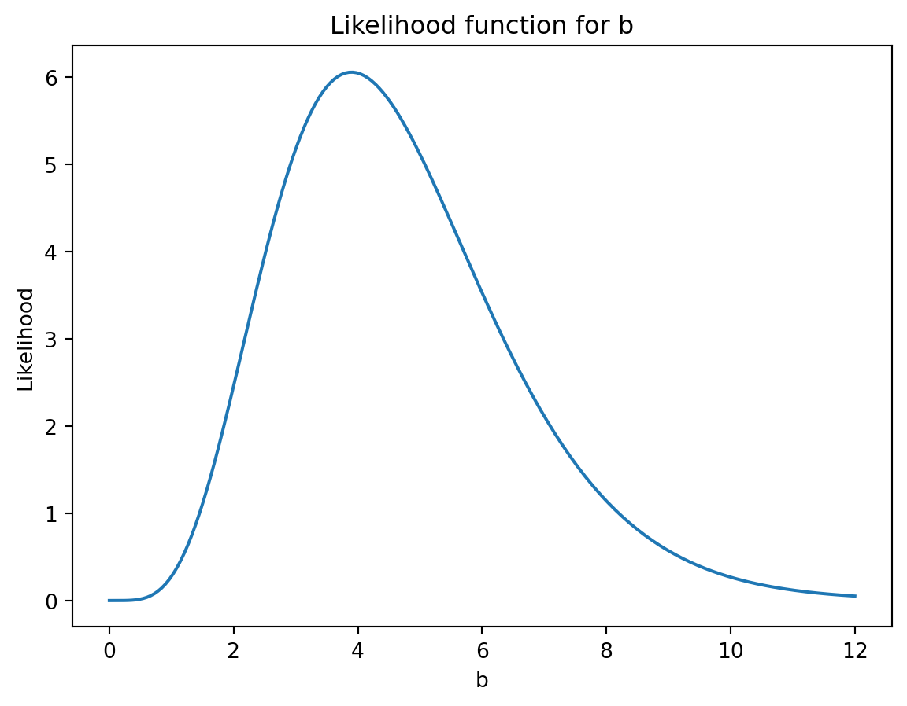
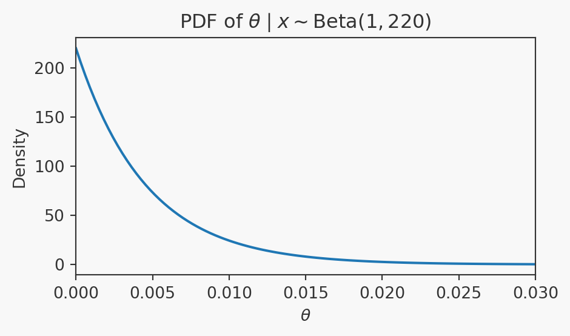
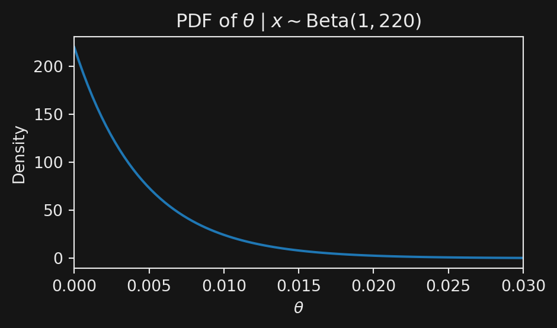

Question Bank
Each question has a permanent number so you can keep a record of those you have completed. Numbers stay the same when you filter the bank or print questions. New questions will be numbered after the current set.
TipChoose a practice route
| If you are… | Start with… | Then move to… |
|---|---|---|
| checking the foundations | foundations at Easy or Medium |
expectation, estimator, then bias, variance, mse |
| checking your understanding | interpretation at Easy or Medium |
calculation questions on the same topic |
| revising estimation | likelihood and mle at Medium |
fisher-information, consistency, asymptotic-mle |
| revising uncertainty and tests | confidence-interval and hypothesis-test at Medium |
t-test, lrt, then exam-style |
| revising Bayesian methods | bayes and conjugacy at Medium |
map, hdi, then exam-style |
Use Challenge questions for extension or after you can complete the core route unaided. Some questions include coding because it can help you explore the ideas; writing or interpreting code is not required in the exam.
The 15 foundation questions build from events and conditional probability to distributions, dependence, and sample means. For a short diagnostic, try events, conditional probabilities, Bayes’ theorem, densities, and sample means. Probability is assumed background for the assessed inference topics, rather than a separate exam topic.
For practice manipulating expectations, try Question 96: proving linearity, Question 97: general weighted sums, and Question 98: random variables and fixed parameters. These are probability exercises; no statistical inference is required. Select the linearity tag to show all three.
The 9 interpretation questions connect the calculations to their meaning. Start with estimators and estimates and choosing a method, then check your understanding of intervals, p-values, and power.
Choose a chapter below. Questions for this chapter includes questions that combine its material with later chapters. Everything covered so far includes only questions whose whole content is covered by the end of the selected chapter, assuming you have worked through the chapters in order.
Chapter, tag, and difficulty filters work together. Tags combine using AND: selecting bayes and binomial shows questions carrying both tags. Difficulty runs from Easy through Challenge.
chapterCatalog = [
"Probability Theory",
"What is Statistical Inference?",
"Types of Inference",
"Frequentist Point Estimation",
"Likelihood",
"Bayesian Inference",
"Frequentist Interval Estimation",
"Bayesian Intervals",
"Frequentist Hypothesis Testing",
"Bayesian Hypothesis Testing (not examinable)"
]
viewof chapterSelection = {
const wrapper = html`<div class="filterbox chapter-filter" id="question-chapter-filters">
<div class="chapter-filter-fields">
<div><label for="question-chapter">Chapter</label>
<select id="question-chapter" aria-describedby="chapter-filter-help">
<option value="0">All chapters</option>
${chapterCatalog.map((title, i) => html`<option value=${i + 1}>${i + 1}. ${title}</option>`)}
</select>
</div>
<div><label for="question-coverage">Show</label>
<select id="question-coverage" aria-describedby="chapter-filter-help">
<option value="upto">Everything covered so far</option>
<option value="chapter">Questions for this chapter</option>
</select>
</div>
</div>
<p id="chapter-filter-help">Select a chapter to practise its topics or everything covered up to that point. Questions spanning chapters show when the whole question is covered.</p>
</div>`;
const chapter = wrapper.querySelector('#question-chapter');
const coverage = wrapper.querySelector('#question-coverage');
const readLocation = () => {
const params = new URLSearchParams(location.search);
const n = Number(params.get('chapter'));
chapter.value = Number.isInteger(n) && n >= 1 && n <= chapterCatalog.length ? String(n) : '0';
coverage.value = params.get('coverage') === 'chapter' ? 'chapter' : 'upto';
coverage.disabled = chapter.value === '0';
};
readLocation();
Object.defineProperty(wrapper, 'value', {
get: () => ({chapter: Number(chapter.value), coverage: coverage.value})
});
const updateLocation = () => {
coverage.disabled = chapter.value === '0';
const url = new URL(location.href);
if (chapter.value === '0') {
url.searchParams.delete('chapter');
url.searchParams.delete('coverage');
} else {
url.searchParams.set('chapter', chapter.value);
url.searchParams.set('coverage', coverage.value);
}
history.replaceState(history.state, '', url);
};
wrapper.addEventListener('input', updateLocation);
const onPopState = () => {
readLocation();
wrapper.dispatchEvent(new Event('input', {bubbles: true}));
};
window.addEventListener('popstate', onPopState);
invalidation.then(() => window.removeEventListener('popstate', onPopState));
return wrapper;
}{
for (const el of allQuestions) {
if (!el.querySelector('.question-chapter-note')) {
const chapters = (el.dataset.chapters || '').split(/\s+/).map(Number).filter(Boolean);
const ready = Number(el.dataset.readyAfter);
const note = document.createElement('div');
note.className = 'question-chapter-note';
const label = document.createElement('span');
label.className = 'question-chapter-label';
label.textContent = `${chapters.length === 1 ? 'Chapter' : 'Chapters'} ${chapters.join(', ')}`;
const detail = document.createElement('span');
detail.className = 'question-chapter-detail';
detail.textContent = chapters.length === 1
? chapterCatalog[chapters[0] - 1]
: `Whole question covered by Chapter ${ready}`;
note.append(label, document.createTextNode(' '), detail);
el.querySelector('.callout-body').prepend(note);
}
// --- Tagbar (unchanged) ---
if (!el.querySelector('.tagbar')) {
const tags = (el.dataset.tags || "").split(/\s+/).filter(Boolean);
const bar = document.createElement('div');
bar.className = 'tagbar';
bar.append(...tags.map(t => Object.assign(document.createElement('span'), {
className: 'tag', textContent: t
})));
el.appendChild(bar);
}
// --- Difficulty peppers in header (RHS) ---
const header = el.querySelector('.callout-header');
if (header && !header.querySelector('.difficulty-peppers')) {
const level = Number(el.dataset.difficulty ?? 0);
// Always show, but only add peppers if >0
const span = document.createElement('span');
span.className = `difficulty-peppers level-${level}`;
span.setAttribute('role', 'img');
const difficultyName = ["Easy", "Medium", "Hard", "Challenge"][level] ?? "Unrated";
span.setAttribute('aria-label', `Difficulty: ${difficultyName}`);
span.textContent = level > 0 ? `(${ "🌶".repeat(level) })` : "( )";
header.appendChild(span);
}
}
return html`` // silence
}viewof typed = {
// --- DOM
const wrapper = html`<div class="token-autocomplete"></div>`;
const labelEl = html`<label class="token-label" for="question-tag-filter">Filter by tags (type, space-separated):</label>`;
const input = html`<input id="question-tag-filter" class="token-input" type="text" placeholder="e.g. bayes probability">`;
wrapper.append(labelEl, input);
// --- PORTAL: suggestions list lives at document.body so it can overlay everything
const list = html`<div class="token-suggestions" role="listbox" hidden></div>`;
document.body.appendChild(list);
// Make sure it floats above all content
list.style.position = "fixed";
list.style.zIndex = "9999"; // high z-index to overlay everything
// --- value plumbing
Object.defineProperty(wrapper, "value", {
get() { return input.value; },
set(v) { input.value = v ?? ""; }
});
// --- helpers
const TAGS = () => (typeof allTags !== "undefined" ? allTags : []);
const tokens = () => input.value.split(/\s+/).filter(Boolean);
const lastToken = () => (input.value.match(/(?:^|\s)(\S*)$/)?.[1]) ?? "";
const pretty = t => t.replace(/-/g, " ").replace(/\b\w/g, c => c.toUpperCase());
// Position portal directly below the input, matching its width
const alignList = () => {
const r = input.getBoundingClientRect();
list.style.left = `${r.left}px`;
list.style.top = `${r.bottom + 4}px`;
list.style.width = `${r.width}px`;
};
// --- render suggestions
let selectedIndex = -1;
const applyActiveStyles = () => {
const items = Array.from(list.children);
items.forEach((el, i) => el.classList.toggle("active", i === selectedIndex));
};
function renderSuggestions() {
const q = lastToken().toLowerCase();
const already = new Set(tokens().map(s => s.toLowerCase()));
const tags = TAGS();
const candidates = q
? tags.filter(t => t.toLowerCase().startsWith(q) && !already.has(t.toLowerCase()))
: [];
list.innerHTML = "";
if (candidates.length === 0) { list.hidden = true; return; }
for (const t of candidates.slice(0, 8)) {
const item = html`<div class="token-suggestion" role="option" data-token="${t}">${pretty(t)}</div>`;
item.addEventListener("mousedown", (e) => { e.preventDefault(); acceptSuggestion(t); });
list.appendChild(item);
}
selectedIndex = -1;
applyActiveStyles();
list.hidden = false;
alignList(); // ensure correct position when shown
}
function commit() {
const parts = tokens();
input.value = parts.join(" ") + (parts.length ? " " : "");
wrapper.dispatchEvent(new Event("input", { bubbles: true }));
}
function acceptSuggestion(tag) {
const parts = input.value.split(/\s+/);
if (/\S/.test(input.value)) parts.pop(); // replace last token
const set = new Set(parts.filter(Boolean).map(s => s.toLowerCase()));
if (!set.has(tag.toLowerCase())) parts.push(tag);
input.value = parts.filter(Boolean).join(" ") + " ";
list.hidden = true;
commit();
input.focus();
}
function moveSelection(delta) {
const items = Array.from(list.children);
if (items.length === 0) return;
selectedIndex = (selectedIndex + delta + items.length) % items.length;
applyActiveStyles();
if (selectedIndex >= 0) items[selectedIndex].scrollIntoView({ block: "nearest" });
}
// --- events
input.addEventListener("input", renderSuggestions);
input.addEventListener("focus", () => { alignList(); }); // realign on focus
input.addEventListener("keydown", (e) => {
if (!list.hidden && (e.key === "ArrowDown" || e.key === "ArrowUp")) {
e.preventDefault(); moveSelection(e.key === "ArrowDown" ? +1 : -1); return;
}
if (e.key === "Enter") {
if (!list.hidden && selectedIndex >= 0) {
e.preventDefault();
const choice = list.children[selectedIndex]?.dataset.token;
if (choice) acceptSuggestion(choice);
} else {
commit();
}
} else if (e.key === "Escape") {
list.hidden = true;
}
});
// Delay blur to allow mousedown on suggestion to fire first
input.addEventListener("blur", () => {
setTimeout(() => { list.hidden = true; commit(); }, 200);
});
// Close when clicking outside (remember list is outside wrapper now)
const onDocClick = (e) => {
if (e.target !== input && !list.contains(e.target)) list.hidden = true;
};
document.addEventListener("click", onDocClick, true);
// Reposition on any scroll/resize (capture scrolls from nested containers)
const onViewportChange = () => { if (!list.hidden) alignList(); };
window.addEventListener("resize", onViewportChange, { passive: true });
window.addEventListener("scroll", onViewportChange, true);
// Initial alignment
queueMicrotask(alignList);
// Cleanup when the cell re-runs
wrapper.dispose = () => {
document.removeEventListener("click", onDocClick, true);
window.removeEventListener("resize", onViewportChange, { passive: true });
window.removeEventListener("scroll", onViewportChange, true);
list.remove();
};
// Initial render
renderSuggestions();
return wrapper;
}{
// Sync checkboxes to the committed text tokens
const lcMap = new Map(allTags.map(t => [t.toLowerCase(), t])); // lower → original
const typedNow = (typed || "").split(/\s+/).filter(Boolean).map(s => s.toLowerCase());
const selected = typedNow.map(s => lcMap.get(s)).filter(Boolean);
const el = viewof chosen;
if (el && Array.isArray(el.value)) {
// compare sets to avoid churn
const cur = new Set(el.value);
let equal = selected.length === cur.size && selected.every(v => cur.has(v));
if (!equal) {
el.value = selected;
el.dispatchEvent(new Event("input", {bubbles:true}));
}
}
return html``;
}{
const typedSet = new Set((typed || "").split(/\s+/).filter(Boolean));
const chosenSet = new Set(chosen || []);
const required = new Set([...typedSet, ...chosenSet]); // AND over tags
const chosenLv = new Set(levels || []); // allowed levels
const selectedChapter = chapterSelection.chapter;
let shown = 0;
for (const el of allQuestions) {
// tags check
const elTags = new Set((el.dataset.tags || "").split(/\s+/).filter(Boolean));
const passTags = required.size === 0 || [...required].every(t => elTags.has(t));
// difficulty check (0 default)
const level = Number(el.dataset.difficulty ?? 0);
const passDiff = chosenLv.has(level);
const chapters = (el.dataset.chapters || '').split(/\s+/).map(Number);
const readyAfter = Number(el.dataset.readyAfter);
const passChapter = selectedChapter === 0 || (chapterSelection.coverage === 'upto'
? readyAfter > 0 && readyAfter <= selectedChapter
: chapters.includes(selectedChapter));
const show = passTags && passDiff && passChapter;
el.style.display = show ? "" : "none";
if (show) shown += 1;
}
const scope = selectedChapter === 0 ? 'All chapters'
: chapterSelection.coverage === 'upto'
? `Whole questions covered by the end of Chapter ${selectedChapter}`
: `Questions involving Chapter ${selectedChapter}, including questions that also need later material`;
const emptyMessage = selectedChapter === 10 && chapterSelection.coverage === 'chapter'
? 'There are currently no dedicated question-bank exercises for Chapter 10. Use the worked examples in that chapter, or choose “Everything covered so far” for cumulative revision.'
: 'No questions match these filters. Try another chapter or coverage option, or clear the tag and difficulty filters.';
return html`<div class="question-filter-status" role="status" aria-live="polite" aria-atomic="true">
<strong>Showing ${shown}</strong> of ${allQuestions.length} questions. ${scope}.
${shown === 0 ? html`<p>${emptyMessage}</p>` : ''}
</div>`
}
Important 1: Question 1: Events: at least one, exactly one, or neither
For a randomly selected student, let A be the event that they attend a revision session and B the event that they complete a practice paper. Suppose \mathrm{Pr}(A)=0.60,\qquad \mathrm{Pr}(B)=0.45,\qquad \mathrm{Pr}(A\cap B)=0.25.
- Find the probability that the student does at least one of these activities.
- Find the probability that they do neither activity.
- Find the probability that they do exactly one activity. Explain why this differs from part (a).
Solution
(a) Inclusion–exclusion gives \mathrm{Pr}(A\cup B)=0.60+0.45-0.25=0.80. The union includes students who do both activities.
(b) Neither activity is the complement of the union, so its probability is 1-0.80=0.20.
(c) The two disjoint possibilities are attending only and completing only: \mathrm{Pr}(A\cap B^c)+\mathrm{Pr}(A^c\cap B) =(0.60-0.25)+(0.45-0.25)=0.55. Exactly one excludes the intersection. As a check, the four probabilities for attending only, completing only, both, and neither sum to 0.35+0.20+0.25+0.20=1.
Important 2: Question 2: Conditional probabilities from a two-way table
A group of 100 students is classified as follows. Select one student uniformly at random. Let R mean that they used a revision resource and P that they passed a short quiz.
| Resource use | Passed | Did not pass | Total |
|---|---|---|---|
| Used the resource | 36 | 24 | 60 |
| Did not use the resource | 14 | 26 | 40 |
| Total | 50 | 50 | 100 |
- Find \mathrm{Pr}(R\cap P) and \mathrm{Pr}(P).
- Find \mathrm{Pr}(P\mid R) and \mathrm{Pr}(R\mid P).
- Are R and P independent? Does the table establish that using the resource causes a higher chance of passing?
Solution
(a) Both probabilities use all 100 students as the denominator: \mathrm{Pr}(R\cap P)=\frac{36}{100}=0.36,\qquad \mathrm{Pr}(P)=\frac{50}{100}=0.50.
(b) Conditioning changes the group over which we calculate the proportion: \mathrm{Pr}(P\mid R)=\frac{36}{60}=0.60,\qquad \mathrm{Pr}(R\mid P)=\frac{36}{50}=0.72. Reversing the conditioning does not generally give the same probability.
(c) They are not independent because \mathrm{Pr}(P\mid R)=0.60 differs from \mathrm{Pr}(P)=0.50. Equivalently, 0.36\ne(0.60)(0.50). This is an association in the group. The table alone does not establish causation; for example, students who chose the resource might also have spent more time revising.
Important 3: Question 3: Sampling without replacement
A bag contains 3 red counters and 2 blue counters. Two counters are drawn uniformly at random, one after the other, without replacement. Let R_1 and R_2 denote a red counter on the first and second draws respectively.
- Find \mathrm{Pr}(R_1\cap R_2).
- Find the probability of exactly one red counter.
- Use the law of total probability to find \mathrm{Pr}(R_2). Are R_1 and R_2 independent?
Solution
(a) After drawing one red counter, 2 of the remaining 4 counters are red: \mathrm{Pr}(R_1\cap R_2) =\mathrm{Pr}(R_1)\mathrm{Pr}(R_2\mid R_1) =\frac35\frac24=\frac3{10}.
(b) Red then blue and blue then red are disjoint outcomes, giving \mathrm{Pr}(\text{exactly one red}) =\frac35\frac24+\frac25\frac34=\frac35.
(c) Partitioning by the colour of the first counter, \mathrm{Pr}(R_2) =\frac35\frac24+\frac25\frac34=\frac35. The marginal red probability is the same on each draw, but \mathrm{Pr}(R_2\mid R_1)=1/2\ne3/5. The draws are dependent. Equal marginal distributions do not imply independence, and multiplying (3/5)(3/5) would give the wrong answer to part (a).
Important 4: Question 4: Independent or mutually exclusive?
Roll a fair six-sided die. Define A=\{2,4,6\},\qquad B=\{1,2,3,4\},\qquad C=\{1,3,5\}.
- Show that A and B are independent. Are they mutually exclusive?
- Are A and C mutually exclusive, exhaustive, or independent?
- Can two events of positive probability be both independent and mutually exclusive? Justify your answer.
Solution
(a) Since A\cap B=\{2,4\}, \mathrm{Pr}(A\cap B)=\frac26=\frac13 =\frac12\frac23=\mathrm{Pr}(A)\mathrm{Pr}(B). They are independent but not mutually exclusive: both occur on outcomes 2 and 4.
(b) The events A and C are mutually exclusive and exhaustive: exactly one occurs on every roll. They are not independent because \mathrm{Pr}(A\cap C)=0\ne\frac14 =\mathrm{Pr}(A)\mathrm{Pr}(C).
(c) No. Mutual exclusivity requires an intersection of probability zero, whereas independence of two positive-probability events requires a strictly positive intersection probability. Knowing one such disjoint event occurred rules out the other.
Important 5: Question 5: Total probability across three suppliers
A shop obtains 50\% of its items from supplier A, 30\% from B, and 20\% from C. Their respective defect probabilities are 0.02, 0.04, and 0.05. Select one item uniformly at random from the shop’s stock, and let D denote a defect.
- Find \mathrm{Pr}(D). Explain why simply averaging the three defect probabilities is inappropriate.
- Given that the item is defective, find the probability that it came from supplier C.
Solution
(a) Supplier identity partitions the stock, so \mathrm{Pr}(D) =(0.50)(0.02)+(0.30)(0.04)+(0.20)(0.05)=0.032. The rates need weights equal to the suppliers’ shares of the stock. An unweighted average would instead describe equal shares from all three suppliers.
(b) Bayes’ theorem gives \mathrm{Pr}(C\mid D) =\frac{\mathrm{Pr}(D\mid C)\mathrm{Pr}(C)}{\mathrm{Pr}(D)} =\frac{(0.05)(0.20)}{0.032}=\frac5{16}=0.3125. Supplier C accounts for 20\% of all items but 31.25\% of defective items.
Important 6: Question 6: Bayes’ theorem and a rare fault
A fault is present in 1\% of components. An automated check flags 90\% of faulty components, but also flags 5\% of components without a fault. Let F denote a fault and A a flag.
- Find the probability that a component is flagged.
- Find \mathrm{Pr}(F\mid A). Explain why it is not 0.90.
- Check your answer using the expected numbers of faulty and non-faulty flagged components in a batch of 10{,}000.
Solution
(a) By total probability, \mathrm{Pr}(A)=(0.90)(0.01)+(0.05)(0.99)=0.0585.
(b) Bayes’ theorem gives \mathrm{Pr}(F\mid A)=\frac{(0.90)(0.01)}{0.0585} =\frac2{13}\approx0.1538. The value 0.90 is \mathrm{Pr}(A\mid F), the probability of a flag given a fault. Here we need the reverse conditioning. Most components have no fault, so false flags can outnumber true flags despite a relatively small false-flag rate.
(c) The expected numbers are 100 faulty and 9{,}900 non-faulty components. Of these, 90 and 495, respectively, are expected to be flagged. The ratio 90/(90+495)=2/13 agrees with part (b). These are expected counts, not a claim that every batch has exactly those counts.
Important 7: Question 7: A discrete distribution from probabilities to moments
A random variable X has probability mass function p_X(x)=c(x+1),\qquad x\in\{0,1,2,3\}, and zero probability elsewhere.
- Find c.
- Write the full cumulative distribution function F_X(x).
- Find \mathrm{Pr}(1<X\le3) and \mathrm{Pr}(1\le X\le3).
- Find \mathrm{E}[X] and \mathrm{Var}(X).
Solution
(a) The probabilities must sum to one: c(1+2+3+4)=1, so c=1/10.
(b) The CDF includes all probability at or below its argument: F_X(x)= \begin{cases} 0,&x<0,\\ 0.1,&0\le x<1,\\ 0.3,&1\le x<2,\\ 0.6,&2\le x<3,\\ 1,&x\ge3. \end{cases} It is right-continuous, with a jump of size p_X(x) at each support point.
(c) We have \mathrm{Pr}(1<X\le3)=0.3+0.4=0.7, \qquad \mathrm{Pr}(1\le X\le3)=0.2+0.3+0.4=0.9. Equivalently, the first is F_X(3)-F_X(1). Including the lower endpoint adds the probability mass \mathrm{Pr}(X=1)=0.2.
(d) The first two moments are \mathrm{E}[X]=\frac{0+2+6+12}{10}=2,\qquad \mathrm{E}[X^2]=\frac{0+2+12+36}{10}=5. Thus \mathrm{Var}(X)=5-2^2=1.
Important 8: Question 8: A density is not a point probability
A continuous random variable X has CDF F_X(x)= \begin{cases} 0,&x<0,\\ 4x^2,&0\le x\le\tfrac12,\\ 1,&x>\tfrac12. \end{cases}
- Find a probability density function for X and check that it integrates to one.
- Find \mathrm{Pr}(1/4<X\le1/2) and \mathrm{Pr}(X=1/4).
- Find f_X(1/4). Is a density value greater than one a problem?
- Find the median of X.
Solution
(a) Differentiating the CDF on the interior of the support gives f_X(x)=8x\quad(0<x<1/2), with density zero outside this interval. Its values at the two endpoints may be chosen arbitrarily without changing probabilities. It is non-negative and \int_0^{1/2}8x\,\mathrm{d}x=[4x^2]_0^{1/2}=1.
(b) Probabilities come from CDF differences, or areas under the density: \mathrm{Pr}(1/4<X\le1/2)=F_X(1/2)-F_X(1/4)=1-\frac14=\frac34. There is no jump at 1/4, so \mathrm{Pr}(X=1/4)=0. Changing an interval endpoint from strict to non-strict makes no difference here.
(c) The density value is f_X(1/4)=2. This is allowed: a density is a height, not a probability. Areas must lie between zero and one; individual density values need not.
(d) Solve F_X(m)=1/2: 4m^2=1/2, giving m=1/(2\sqrt2)\approx0.3536. Half the probability lies on each side of this value; the midpoint of the support need not be the median.
Important 9: Question 9: Joint, marginal, and conditional probabilities
The joint probability mass function of X and Y is given below. All other pairs have probability zero.
| X\backslash Y | 0 | 1 | 2 |
|---|---|---|---|
| 0 | 0.10 | 0.20 | 0.10 |
| 1 | 0.20 | 0.10 | 0.30 |
- Find both marginal PMFs.
- Find \mathrm{Pr}(X=1\mid Y=2).
- Find the conditional PMF of Y given X=0, and hence \mathrm{E}[Y\mid X=0].
- Are X and Y independent?
Solution
(a) Row sums give p_X(0)=0.40 and p_X(1)=0.60. Column sums give p_Y(0)=0.30, p_Y(1)=0.30, and p_Y(2)=0.40. Each marginal PMF sums to one.
(b) Restricting to the column Y=2, \mathrm{Pr}(X=1\mid Y=2)=\frac{p_{X,Y}(1,2)}{p_Y(2)} =\frac{0.30}{0.40}=0.75.
(c) Dividing the X=0 row by its total 0.40 gives \mathrm{Pr}(Y=0\mid X=0)=0.25,\quad \mathrm{Pr}(Y=1\mid X=0)=0.50,\quad \mathrm{Pr}(Y=2\mid X=0)=0.25. Therefore \mathrm{E}[Y\mid X=0]=0(0.25)+1(0.50)+2(0.25)=1. Using the original row without normalising would not give a conditional PMF.
(d) No. For example, p_{X,Y}(0,0)=0.10\ne(0.40)(0.30)=p_X(0)p_Y(0). Independence requires this factorisation for every pair; one counterexample is enough to rule it out.
Important 10: Question 10: Zero correlation does not imply independence
Let X take the values -1, 0, and 1, each with probability 1/3, and define Y=X^2.
- Find \mathrm{E}[X], \mathrm{E}[Y], and \mathrm{E}[XY].
- Find the covariance and correlation of X and Y. You may use \mathrm{Var}(X)=2/3 and \mathrm{Var}(Y)=2/9.
- Show that X and Y are nevertheless dependent.
Solution
(a) Direct summation gives \mathrm{E}[X]=\frac{-1+0+1}{3}=0,\qquad \mathrm{E}[Y]=\frac{1+0+1}{3}=\frac23. Since XY=X^3, \mathrm{E}[XY]=(-1+0+1)/3=0.
(b) Thus \mathrm{Cov}(X,Y)=\mathrm{E}[XY]-\mathrm{E}[X]\mathrm{E}[Y]=0. Both variances are positive, so the correlation is defined and equals zero.
(c) If X=0, then Y=0 with certainty, whereas \mathrm{Pr}(Y=0)=1/3: \mathrm{Pr}(Y=0\mid X=0)=1\ne\mathrm{Pr}(Y=0). Zero correlation excludes a linear association as measured by covariance; it does not exclude a nonlinear relationship such as Y=X^2.
Important 11: Question 11: Counting events with indicator variables
Four components have fault probabilities p_1=0.1, p_2=0.2, p_3=0.3, and p_4=0.4. Define I_i=1 if component i is faulty and I_i=0 otherwise. Let N=I_1+I_2+I_3+I_4 be the number of faulty components.
- Find \mathrm{E}[N] without assuming independence.
- Now assume the fault indicators are independent. Find \mathrm{Var}(N).
- Explain why N is not Binomial with parameters 4 and 0.25, even though the average fault probability is 0.25.
- Without independence, what additional information would be needed to find \mathrm{Var}(N)?
Solution
(a) Each I_i is Bernoulli with mean p_i. Linearity of expectation gives \mathrm{E}[N]=\sum_{i=1}^4p_i=1. This calculation does not need independence.
(b) Under independence, the covariances vanish, so \mathrm{Var}(N)=\sum_{i=1}^4p_i(1-p_i) =0.09+0.16+0.21+0.24=0.70.
(c) A Binomial model assumes a common success probability as well as independent trials. Here the probabilities differ. In particular, a \mathrm{Binomial}(4,0.25) variable would have variance 4(0.25)(0.75)=0.75, which differs from part (b).
(d) The pairwise covariances, or equivalent joint fault probabilities, are needed because in general \mathrm{Var}(N)=\sum_i p_i(1-p_i)+2\sum_{i<j}\mathrm{Cov}(I_i,I_j). The four marginal fault probabilities alone are insufficient.
Important 12: Question 12: One observation versus a sample mean
Let X_1,\ldots,X_{25} be independent \mathcal N(50,100) measurements, where the second Normal parameter is the variance. Let \bar X be their mean. You may use \Phi(0.4)=0.6554 and \Phi(2)=0.9772, where \Phi is the standard Normal CDF.
- State the standard deviations of X_1 and \bar X.
- Find \mathrm{Pr}(X_1>54) and \mathrm{Pr}(\bar X>54).
- Is the Normal distribution of \bar X exact or a CLT approximation here?
Solution
(a) One measurement has standard deviation \sqrt{100}=10. Independence gives \mathrm{Var}(\bar X)=100/25=4, so the standard deviation of the mean (its standard error) is 2.
(b) Standardise with the standard deviation of the quantity in question: \mathrm{Pr}(X_1>54)=1-\Phi\!\left(\frac{54-50}{10}\right) =1-0.6554=0.3446, whereas \mathrm{Pr}(\bar X>54)=1-\Phi\!\left(\frac{54-50}{2}\right) =1-0.9772=0.0228. Averaging reduces variability, so the same distance above the mean is much less likely for \bar X.
(c) It is exact: a linear combination of independent Normal random variables is Normal, so \bar X\sim\mathcal N(50,4). A large-sample approximation is unnecessary under this model.
ImportantQuestion 13: Probability of heads
A fair coin is tossed 10 times. What is the probability of exactly 6 heads?
Solution
Work it via the Binomial: \mathrm{Pr}(X=6)=\binom{10}{6} (1/2)^{10}.
ImportantQuestion 14: Newspaper subscriptions
In a certain city, 50\% of families subscribe to the morning newspaper, 65\% subscribe to the afternoon newspaper, and 30\% subscribe to both.
What proportion of families subscribe to at least one newspaper?
Solution
Let M = “morning” and A = “afternoon”.
By the addition rule of probability:
\mathrm{Pr}(M \cup A) \;=\; \mathrm{Pr}(M) + \mathrm{Pr}(A) - \mathrm{Pr}(M \cap A).
Substituting:
0.5 + 0.65 - 0.3 \;=\; 0.85.
So, 85\% of families subscribe to at least one newspaper.
Important 13: Question 15: Normal Data MLE
Let X_1,\dots,X_n \stackrel{iid}{\sim} \mathcal{N}(\mu,1). Find the MLE of \mu.
Solution
The likelihood is
L(\mu ; \underline{x}) = \prod_{i=1}^n \frac{1}{\sqrt{2\pi}} \exp\!\left(-\tfrac{1}{2}(x_i - \mu)^2\right) = (2\pi)^{-n/2} \exp\left( -\frac{1}{2}\sum_{i=1}^n (x_i - \mu)^2 \right) .
Taking logs:
\ell(\mu) = -\tfrac{n}{2}\log(2\pi) - \tfrac{1}{2}\sum_{i=1}^n (x_i - \mu)^2.
Differentiate with respect to \mu:
\frac{\partial \ell}{\partial \mu} = \sum_{i=1}^n (x_i - \mu).
Setting equal to 0:
\sum_{i=1}^n (x_i - \mu) = 0 \quad\Longrightarrow\quad \hat\mu_{\mathrm{obs}} = \frac{1}{n}\sum_{i=1}^n x_i = \bar x.
So the MLE is the sample-mean estimator \bar X; for these observed data its value is \bar x.
ImportantQuestion 16: Converting mean and standard deviation
October temperatures in Newcastle (daily maximum) have population mean 13^\circC and population standard deviation 3^\circC.
What would the population mean and standard deviation be if temperature was measured in ^\circF?
Note: If X is in ^\circC then Y = 1.8X + 32 is in ^\circF.
Solution
Using linearity of expectation:
\mathrm{E}[Y] \;=\; 1.8\,\mathrm{E}[X] + 32 \;=\; 1.8 \times 13 + 32 \;=\; 55.4^\circ \text{F}.
For the standard deviation, the shift does not matter and the scale multiplies:
\mathrm{SD}(Y) \;=\; 1.8 \, \mathrm{SD}(X) \;=\; 1.8 \times 3 \;=\; 5.4^\circ \text{F}.
ImportantQuestion 17: PDF, normalisation constant, and CDF
The random variable X has PDF f(x) = \begin{cases} kx(1-x), & 0 \leq x \leq 1, \\ 0, & \text{otherwise}, \end{cases} where k is a constant.
- Find the value of k.
- Roughly sketch f(x). State, without calculation, the value of \mathrm{E}[X].
- Find and roughly sketch the CDF F(x) = \mathrm{Pr}(X \leq x).
Solution
a. Since the area under a PDF is 1: 1 = \int_{-\infty}^\infty f(x)\,dx = \int_0^1 k(x - x^2)\,dx = k \left[ \tfrac{x^2}{2} - \tfrac{x^3}{3} \right]_0^1 = \tfrac{k}{6}.
So k=6.
b. The PDF is symmetric about x = \tfrac{1}{2}, so \mathrm{E}[X] = \tfrac{1}{2}.
c. For 0 \leq x \leq 1: F(x) = \int_0^x 6(t - t^2)\,dt = 6\left[\tfrac{t^2}{2} - \tfrac{t^3}{3}\right]_0^x = x^2(3 - 2x).
So the full CDF is: F(x) = \begin{cases} 0, & x < 0, \\ x^2(3 - 2x), & 0 \leq x \leq 1, \\ 1, & x > 1. \end{cases}
xs = d3.range(-0.1, 1.1, 0.01)
// PDF
PDF = xs.map(x => ({
x: x,
y: (x >= 0 && x <= 1) ? 6*x*(1-x) : 0,
which: "PDF f(x)"
}))
// CDF
CDF = xs.map(x => {
let y;
if (x < 0) y = 0;
else if (x > 1) y = 1;
else y = x**2 * (3 - 2*x);
return {x: x, y: y, which: "CDF F(x)"};
})
viewof chart = Plot.plot({
height: 300,
width: 500,
style: { background: "var(--plot-bg)",
color: "var(--plot-fg)",
fontSize: 14,
fontFamily: bodyFont, },
y: {domain: [0,1.8]},
marks: [
Plot.line(PDF, {x: "x", y: "y", stroke: "var(--plot-series-1)"}),
Plot.line(CDF, {x: "x", y: "y", stroke: "var(--plot-series-2)"}),
Plot.ruleY([0]),
],
color: {legend: true}
})
ImportantQuestion 18: Linear combinations of independent random variables
Suppose that X_1 and X_2 are independent random variables with
\mathrm{E}[X_1] = 4, \mathrm{Var}(X_1) = 5, \mathrm{E}[X_2] = 3, \mathrm{Var}(X_2) = 1.
Let
Y_1 = 2X_1 + X_2, \qquad Y_2 = X_1 - 2X_2.
Find:
- \mathrm{E}[Y_1], \ \mathrm{Var}(Y_1)
- \mathrm{E}[Y_2], \ \mathrm{Var}(Y_2)
- \mathrm{Cov}(Y_1,Y_2) and the correlation between Y_1 and Y_2.
Solution
a.
\mathrm{E}[Y_1] = 2\mathrm{E}[X_1] + \mathrm{E}[X_2] = 2 \times 4 + 3 = 11.
\mathrm{Var}(Y_1) = 4\mathrm{Var}(X_1) + \mathrm{Var}(X_2)
= 4 \times 5 + 1 = 21.
b.
\mathrm{E}[Y_2] = \mathrm{E}[X_1] - 2\mathrm{E}[X_2] = 4 - 6 = -2.
\mathrm{Var}(Y_2) = \mathrm{Var}(X_1) + 4\mathrm{Var}(X_2)
= 5 + 4 \times 1 = 9.
c.
\begin{align*} \mathrm{Cov}(Y_1,Y_2) &= \mathrm{Cov}(2X_1+X_2, \, X_1-2X_2) \\ &= 2\mathrm{Var}(X_1) - 2\mathrm{Var}(X_2) + (-4+1)\mathrm{Cov}(X_1,X_2). \end{align*}
Since X_1 and X_2 are independent, \mathrm{Cov}(X_1,X_2)=0. So \mathrm{Cov}(Y_1,Y_2) = 2 \times 5 - 2 \times 1 = 8.
Finally, the correlation is \mathrm{Corr}(Y_1,Y_2) = \frac{\mathrm{Cov}(Y_1,Y_2)}{\sqrt{\mathrm{Var}(Y_1)\mathrm{Var}(Y_2)}} = \frac{8}{\sqrt{21 \times 9}} \approx 0.582.
ImportantQuestion 19: Linear combinations of dependent random variables
Suppose that X_1 and X_2 are dependent random variables with
\mathrm{E}[X_1] = 4, \mathrm{Var}(X_1) = 5, \mathrm{E}[X_2] = 3, \mathrm{Var}(X_2) = 1
and
\mathrm{Cov}(X_1, X_2) = 2.
Let
Y_1 = 2X_1 + X_2, \qquad Y_2 = X_1 - 2X_2.
Find:
- \mathrm{E}[Y_1], \ \mathrm{Var}(Y_1)
- \mathrm{E}[Y_2], \ \mathrm{Var}(Y_2)
- \mathrm{Cov}(Y_1,Y_2) and the correlation between Y_1 and Y_2.
Solution
a.
\mathrm{E}[Y_1] = 2\mathrm{E}[X_1] + \mathrm{E}[X_2] = 11.
\begin{align*} \mathrm{Var}(Y_1) &= \mathrm{Var}(2X_1) + \mathrm{Var}(X_2) + 2\mathrm{Cov}(2X_1,X_2) \\ &= 4\mathrm{Var}(X_1) + \mathrm{Var}(X_2) + 4\mathrm{Cov}(X_1,X_2) \\ &= 4\times 5 + 1 + 4\times 2 = 29. \end{align*}
b.
\mathrm{E}[Y_2] = \mathrm{E}[X_1] - 2\mathrm{E}[X_2] = -2.
\begin{align*} \mathrm{Var}(Y_2) &= \mathrm{Var}(X_1) + \mathrm{Var}(2X_2) - 2\mathrm{Cov}(X_1,2X_2) \\ &= \mathrm{Var}(X_1) + 4\mathrm{Var}(X_2) - 4\mathrm{Cov}(X_1,X_2) \\ &= 5 + 4 - 8 = 1. \end{align*}
c.
\begin{align*} \mathrm{Cov}(Y_1,Y_2) &= \mathrm{Cov}(2X_1+X_2, \, X_1-2X_2) \\ &= 2\mathrm{Var}(X_1) - 2\mathrm{Var}(X_2) + (-4+1)\mathrm{Cov}(X_1,X_2) \\ &= 10 - 2 - 6 = 2. \end{align*}
So the correlation is \mathrm{Corr}(Y_1,Y_2) = \frac{\mathrm{Cov}(Y_1,Y_2)}{\sqrt{\mathrm{Var}(Y_1)\mathrm{Var}(Y_2)}} = \frac{2}{\sqrt{29 \times 1}} \approx 0.371.
ImportantQuestion 20: Minimiser of \mathrm{E}[(X-c)^2]
Suppose that X is a continuous random variable. Show that \mathrm{E}[(X-c)^2] is minimised when c is the population mean. State any assumptions.
Solution
As X is continuous, \mathrm{E}[(X-c)^2] = \int_{-\infty}^\infty (x-c)^2 f(x)\,dx.
We assume we can interchange differentiation with respect to c and integration with respect to x. Then \frac{\partial}{\partial c}\,\mathrm{E}[(X-c)^2] = \mathrm{E}\!\left[\frac{\partial}{\partial c}(X-c)^2\right] = \int_{-\infty}^\infty \frac{\partial}{\partial c}(x-c)^2 f(x)\,dx.
Differentiating: \frac{\partial}{\partial c}\,\mathrm{E}[(X-c)^2] = -2\int_{-\infty}^\infty (x-c) f(x)\,dx = -2\{\mathrm{E}[X] - c\}.
This derivative is zero when c = \mathrm{E}[X].
The second derivative is positive, so this is indeed a minimum.
ImportantQuestion 21: Minimiser of \mathrm{E}[|X-c|]
Suppose that X is a continuous random variable. Show that \mathrm{E}[|X-c|] is minimised when c is the population median. State any assumptions.
Hint: The derivative of |X-c| with respect to c is -1 when x>c and +1 when x<c.
Solution
We assume the technical conditions allowing us to interchange differentiation with respect to c and integration with respect to x.
Using the hint: \frac{\partial}{\partial c}\,\mathrm{E}[|X-c|] = \mathrm{E}\!\left[\frac{\partial}{\partial c}|X-c|\right] = \mathrm{E}[I(X \leq c) - I(X > c)], where I(\cdot) is the indicator function.
So, \frac{\partial}{\partial c}\,\mathrm{E}[|X-c|] = \mathrm{Pr}(X \leq c) - \mathrm{Pr}(X > c).
Since \mathrm{Pr}(X > c) = 1 - \mathrm{Pr}(X \leq c), this simplifies to \frac{\partial}{\partial c}\,\mathrm{E}[|X-c|] = 2\mathrm{Pr}(X \leq c) - 1.
This derivative is zero when \mathrm{Pr}(X \leq c) = \tfrac{1}{2}, i.e. when c is the median of the distribution of X.
(Aside: this argument ignores the non-differentiability of |X-c| at x=c — a more careful treatment requires subgradients.)
ImportantQuestion 22: Binomial Probabilities
Suppose X \sim \mathrm{Bin}(n,p).
When n=6 and p=0.3, find, either by hand or using R or Python, each of:
- \mathrm{Pr}(X < 2)
- \mathrm{Pr}(1 < X \leq 2)
- \mathrm{Pr}(X > 1)
- \mathrm{Pr}(X < 2)
When n=10 and p=0.75, find the probability that X is within one of its population mean.
Solution
a.
As X is binomial, it can only take the values 0,1,2,\ldots,6.
i. \mathrm{Pr}(X<2) = \mathrm{Pr}(X=0) + \mathrm{Pr}(X=1).
\mathrm{Pr}(X=0) = \binom{6}{0} (0.3)^0 (0.7)^6 = 0.7^6.
\mathrm{Pr}(X=1) = \binom{6}{1} (0.3)^1 (0.7)^5 = 6 \times 0.3 \times 0.7^5.
So, \mathrm{Pr}(X<2) = 0.7^6 + 6 \times 0.3 \times 0.7^5 \approx 0.4202.
ii.
\mathrm{Pr}(1 < X \leq 2) = \mathrm{Pr}(X=2)
= \binom{6}{2} (0.3)^2 (0.7)^4
= 15 \times 0.09 \times 0.2401
\approx 0.3241.
iii.
\mathrm{Pr}(X > 1) = 1 - \mathrm{Pr}(X \leq 1) = 1 - \mathrm{Pr}(X<2).
So, \mathrm{Pr}(X>1) = 1 - 0.4202 = 0.5798.
b.
For X \sim \mathrm{Bin}(10,0.75):
- The mean is \mathrm{E}[X] = np = 10 \times 0.75 = 7.5.
- “Within one of the mean” means 6.5 \leq X \leq 8.5.
Since X is integer-valued, this corresponds to X \in \{7,8\}.
\mathrm{Pr}(6.5 \leq X \leq 8.5) = \mathrm{Pr}(X=7) + \mathrm{Pr}(X=8).
\mathrm{Pr}(X=7) = \binom{10}{7}(0.75)^7(0.25)^3,
\mathrm{Pr}(X=8) = \binom{10}{8}(0.75)^8(0.25)^2.
Numerically, \mathrm{Pr}(X=7) \approx 0.2503, \quad \mathrm{Pr}(X=8) \approx 0.2816.
So, \mathrm{Pr}(6.5 \leq X \leq 8.5) \approx 0.2503 + 0.2816 = 0.5319.
In R or Python:
Show code
from math import comb
from scipy.stats import binom
# Part (a): n=6, p=0.3
n, p = 6, 0.3
pr_less_2 = binom.cdf(1, n, p) # P(X < 2)
pr_eq_2 = binom.pmf(2, n, p) # P(X = 2)
pr_greater_1 = 1 - pr_less_2 # P(X > 1)
# Part (b): n=10, p=0.75
n, p = 10, 0.75
pr_within_mean = binom.pmf(7, n, p) + binom.pmf(8, n, p)
print(
f"Pr(X < 2) = {pr_less_2:.4f}\n"
f"Pr(1 < X <= 2) = {pr_eq_2:.4f}\n"
f"Pr(X > 1) = {pr_greater_1:.4f}\n"
f"Pr(X within 1 of mean) = {pr_within_mean:.4f}"
)Pr(X < 2) = 0.4202
Pr(1 < X <= 2) = 0.3241
Pr(X > 1) = 0.5798
Pr(X within 1 of mean) = 0.5318#| echo: true
#| code-fold: true
#| code-summary: "Show code"
# Part (a): n=6, p=0.3
n <- 6; p <- 0.3
pr_less_2 <- pbinom(1, n, p) # P(X < 2)
pr_eq_2 <- dbinom(2, n, p) # P(X = 2)
pr_greater_1 <- 1 - pr_less_2 # P(X > 1)
# Part (b): n=10, p=0.75
n <- 10; p <- 0.75
pr_within_mean <- dbinom(7, n, p) + dbinom(8, n, p)
cat(
"Pr(X < 2) =", round(pr_less_2,4), "\n",
"Pr(1 < X <= 2) =", round(pr_eq_2,4), "\n",
"Pr(X > 1) =", round(pr_greater_1,4), "\n",
"Pr(X within 1 of mean) =", round(pr_within_mean,4), "\n"
)
ImportantQuestion 23: Mean and Standard Deviation of Linear Combinations
Suppose X \sim \mathcal{N}(3,2) and, independently, Y \sim \mathcal{N}(-2,7).
Find the population mean and standard deviation of:
- 3X + 2
- 5 - Y
- 3X + 7 - Y
Solution
a.
\mathrm{E}[3X+2] = 3\mathrm{E}[X] + 2 = 3 \times 3 + 2 = 11.
\mathrm{Var}(3X+2) = 3^2 \mathrm{Var}(X) = 9 \times 2 = 18.
So the standard deviation is \sqrt{18} \approx 4.2426.
b.
\mathrm{E}[5-Y] = 5 - \mathrm{E}[Y] = 5 - (-2) = 7.
\mathrm{Var}(5-Y) = (-1)^2 \mathrm{Var}(Y) = 1 \times 7 = 7.
So the standard deviation is \sqrt{7} \approx 2.6458.
(c)
\mathrm{E}[3X+7-Y] = 3\mathrm{E}[X] + 7 - \mathrm{E}[Y] = 3 \times 3 + 7 - (-2) = 18.
Since X and Y are independent, \mathrm{Var}(3X+7-Y) = 3^2\mathrm{Var}(X) + (-1)^2 \mathrm{Var}(Y) = 9 \times 2 + 1 \times 7 = 25.
So the standard deviation is \sqrt{25} = 5.
ImportantQuestion 24: Expectation with a Poisson Distribution
The number of breakdowns per week in a computer cluster is a random variable Y having a Poisson distribution with population mean \mu.
The weekly cost of repairing breakdowns is
C = 3Y + Y^2.
Find \mathrm{E}[C].
Solution
We have \mathrm{E}[C] = \mathrm{E}[3Y + Y^2] = 3\mathrm{E}[Y] + \mathrm{E}[Y^2].
Since Y \sim \mathrm{Poisson}(\mu):
- \mathrm{E}[Y] = \mu
- \mathrm{Var}(Y) = \mu
- Recall that \mathrm{Var}(Y) = \mathrm{E}[Y^2] - (\mathrm{E}[Y])^2, so \mathrm{E}[Y^2] = \mu + \mu^2.
Therefore, \mathrm{E}[C] = 3\mu + (\mu + \mu^2) = 4\mu + \mu^2.
ImportantQuestion 25: Distribution of a Squared Normal Variable
Suppose Z \sim \mathcal{N}(0,1).
Find the PDF of Y = Z^2.
Hint: start by finding a formula for the CDF F_Y(y) = \mathrm{Pr}(Y \leq y) for any y > 0.
Solution
For y > 0: F_Y(y) = \mathrm{Pr}(Y \leq y) = \mathrm{Pr}(Z^2 \leq y).
This is equivalent to F_Y(y) = \mathrm{Pr}(-\sqrt{y} \leq Z \leq \sqrt{y}) = \mathrm{Pr}(Z \leq \sqrt{y}) - \mathrm{Pr}(Z \leq -\sqrt{y}).
Using the standard normal CDF \Phi, F_Y(y) = \Phi(\sqrt{y}) - \Phi(-\sqrt{y}).
Differentiate to find the PDF:
f_Y(y) = \frac{\partial}{\partial y} \Big[ \Phi(\sqrt{y}) - \Phi(-\sqrt{y}) \Big].
By the chain rule: f_Y(y) = \phi(\sqrt{y}) \cdot \frac{1}{2\sqrt{y}} + \phi(-\sqrt{y}) \cdot \frac{1}{2\sqrt{y}}.
Since \phi (the standard normal PDF) is symmetric, f_Y(y) = \frac{1}{\sqrt{y}} \, \phi(\sqrt{y}).
Substitute \phi(z) = \tfrac{1}{\sqrt{2\pi}} e^{-z^2/2}: f_Y(y) = \frac{1}{\sqrt{2\pi y}} e^{-y/2}, \quad y > 0.
For y \leq 0, f_Y(y)=0.
Aside.
This is exactly the PDF of a \chi^2_1 distribution.
ImportantQuestion 26: Customer Waiting Times
Customer waiting times at a call centre can be assumed to be Gamma Gamma random variables with mean 3 minutes and standard deviation 2 minutes.
What proportion of customers are expected to wait more than 5 minutes?
Hint: you will need R or Python for this.
Solution
Let the waiting time be X \sim \mathrm{Gamma}(\alpha, \lambda), with shape \alpha and rate \lambda.
From the formulas:
\mathrm{E}[X] = \frac{\alpha}{\lambda},
\qquad \mathrm{Var}(X) = \frac{\alpha}{\lambda^2}.
We are told: \mathrm{E}[X] = 3, \qquad \mathrm{SD}[X] = 2 \ \Rightarrow \ \mathrm{Var}(X) = 4.
So: \frac{\alpha}{\lambda} = 3, \qquad \frac{\alpha}{\lambda^2} = 4.
Divide the second equation by the first: \frac{\alpha/\lambda^2}{\alpha/\lambda} = \frac{4}{3} \quad \Rightarrow \quad \frac{1}{\lambda} = \frac{4}{3}.
Hence: \lambda = 0.75, \quad \alpha = 3\lambda = 2.25.
We want: \mathrm{Pr}(X > 5) = 1 - F_X(5).
ImportantQuestion 27: Exact Binomial Confidence Interval (Clopper–Pearson)
Suppose we have a single Binomial Binomial observation
X \mid p \sim \mathrm{Binomial}(n,p).
Following the general strategy General Recipe, construct an exact two-sided (1-\alpha) confidence interval for p.
Note on exact (discrete) coverage. In the discrete case, an “exact” interval [L(X), U(X)] means, for every 0\leq p \leq 1,
\operatorname{Pr}\!\big(L(X) \leq p \leq U(X)\big) \ge 1-\alpha, \quad\text{where }X \sim \text{Binomial}(n,p).
Because of discreteness, equality for all p is impossible; the interval is conservative.
Solution
1. Choose a statistic. Take T=X. Its sampling distribution is
X \mid p \sim \mathrm{Binomial}(n,p),\qquad f(x\mid p)=\binom{n}{x}p^x(1-p)^{n-x}.
2–3. Form a pivot via tail probabilities and fix central mass. Denote F_p(y) = \mathrm{Pr}(Y \leq y) where Y\sim \mathrm{Binomial}(n,p) and denote \mathrm{Pr}_{p}(X\le x) = F_p(x). For a given observed x, define endpoints by equating the two tails to \alpha/2:
\mathrm{Pr}_{p_L}(X\le x-1)=\frac{\alpha}{2},\qquad \mathrm{Pr}_{p_U}(X\ge x+1)=\frac{\alpha}{2}.
(Edge cases: if x=0 set p_L=0; if x=n set p_U=1.)
4. Invert (Clopper–Pearson). These tail equalities are exactly equivalent to Beta quantiles, giving closed-form endpoints:
\boxed{\; p_L = B^{-1}\!\left(\tfrac{\alpha}{2};\, x,\; n-x+1\right),\qquad p_U = B^{-1}\!\left(1-\tfrac{\alpha}{2};\, x+1,\; n-x\right)\; }
where B^{-1}(q;a,b) is the q-quantile of \mathrm{Beta}(a,b). With the edge-case conventions above:
p_L= \begin{cases} 0, & x=0,\\ B^{-1}\!\left(\tfrac{\alpha}{2};\, x,\; n-x+1\right), & x\ge 1, \end{cases} \quad p_U= \begin{cases} B^{-1}\!\left(1-\tfrac{\alpha}{2};\, x+1,\; n-x\right), & x\le n-1,\\ 1, & x=n. \end{cases}
We obtain the Clopper–Pearson interval [p_L,\,p_U], which is an exact (conservative) two-sided (1-\alpha) CI for p.
ImportantQuestion 28: Probability Integral Transform
Suppose X is a continuous random variable with CDF F(x).
Define the random variable
U = F(X),
that is, the CDF evaluated at a random argument.
Show that U \sim U(0,1).
Aside. This result is fundamental in simulation: if we can generate uniform random variables U \sim U(0,1), then we can simulate X by setting X = F^{-1}(U).
Solution
Because F(\cdot) is continuous and strictly increasing, its inverse F^{-1}(\cdot) exists and is also strictly increasing.
Define the CDF of U as G(u) = \operatorname{Pr}(U \leq u).
Since U = F(X) always lies in [0,1], we have: G(u) = 0 \quad \text{for } u \leq 0, \qquad G(u) = 1 \quad \text{for } u \geq 1.
Now consider u \in (0,1): G(u) = \operatorname{Pr}(U \leq u) = \operatorname{Pr}(F(X) \leq u).
Because F is increasing, \operatorname{Pr}(F(X) \leq u) = \operatorname{Pr}(X \leq F^{-1}(u)).
By definition of the CDF F, \operatorname{Pr}(X \leq F^{-1}(u)) = F(F^{-1}(u)) = u.
Thus the CDF of U is G(u) = \begin{cases} 0, & u \leq 0, \\ u, & 0 < u \leq 1, \\ 1, & u > 1. \end{cases}
This is exactly the CDF of the \mathrm{Uniform}(0,1) distribution.
Therefore,
U \sim U(0,1).
ImportantQuestion 29: Moment Generating Function of the Exponential
We have seen that properties of a random variable X can be described by the CDF, PMF, or PDF.
Another way is through the moment generating function (MGF) M(t), defined by
M(t) = \mathrm{E}[e^{tX}],
provided the expectation is finite (which is not always the case).
If the MGF exists, it is unique: two random variables have the same MGF if and only if they have the same distribution.
Suppose X \sim \mathrm{Exp}(\lambda), with PDF f(x) = \lambda e^{-\lambda x}, \quad x \geq 0.
Show that the MGF of X is M(t) = \frac{\lambda}{\lambda - t}, \qquad 0 \leq t < \lambda.
Solution
Choose t with 0 \leq t < \lambda to ensure convergence. Then M(t) = \mathrm{E}[e^{tX}] = \int_0^\infty e^{tx} \lambda e^{-\lambda x} \, dx.
Combine exponents: M(t) = \int_0^\infty \lambda e^{-(\lambda - t)x} \, dx.
Factor out (\lambda - t): M(t) = \frac{\lambda}{\lambda - t} \int_0^\infty (\lambda - t) e^{-(\lambda - t)x} \, dx.
But the integrand is the PDF of \mathrm{Exp}(\lambda - t), so the integral equals 1.
Therefore: M(t) = \frac{\lambda}{\lambda - t}, \qquad 0 \leq t < \lambda.
Important 14: Question 30: Estimating \lambda from Independent Poisson Samples
Suppose X \sim \mathrm{Poisson}(\lambda) and, independently, Y \sim \mathrm{Poisson}(2\lambda).
Classify the following as parameters, statistics, or neither:
- X + 2Y
- \hat{\lambda} = (X+Y)/3
- \lambda / \hat{\lambda}
- \operatorname{Pr}(\lambda > \hat{\lambda})
- X + 2Y
Find the bias and MSE of each of the following estimators of \lambda. Which would you recommend?
- X
- Y-X
- (X+Y)/3
- X
Consider a general estimator w_1 X + w_2 Y. What values of w_1 and w_2 would you recommend?
Solution
a. Classification.
- A statistic is a function of data (random variables).
- A parameter depends only on the population.
- Neither means it involves both.
- X+2Y: Statistic
- (X+Y)/3: Statistic
- \lambda/\hat{\lambda}: Neither
- \operatorname{Pr}(\lambda > \hat{\lambda}): Parameter (depends on the distribution, not directly observable)
b. Bias and MSE.
Recall: for Poisson(\mu), \mathrm{E}[X]=\mathrm{Var}(X)=\mu.
- X \sim \mathrm{Poisson}(\lambda), so \mathrm{E}[X]=\lambda, \mathrm{Var}(X)=\lambda.
- Y \sim \mathrm{Poisson}(2\lambda), so \mathrm{E}[Y]=2\lambda, \mathrm{Var}(Y)=2\lambda.
- Independence: \mathrm{Var}(aX+bY) = a^2\mathrm{Var}(X) + b^2\mathrm{Var}(Y).
\text{Bias}(\hat{\theta}) = \mathrm{E}[\hat{\theta}] - \lambda, \qquad \mathrm{MSE}(\hat{\theta}) = \mathrm{Var}(\hat{\theta}) + \text{Bias}(\hat{\theta})^2.
X:
\mathrm{E}[X] = \lambda \;\Rightarrow\; \text{Bias}=0.
\mathrm{MSE} = \mathrm{Var}(X) = \lambda.Y-X:
\mathrm{E}[Y-X] = 2\lambda - \lambda = \lambda \;\Rightarrow\; \text{Bias}=0.
\mathrm{Var}(Y-X) = \mathrm{Var}(Y)+\mathrm{Var}(X) = 2\lambda + \lambda = 3\lambda.
\mathrm{MSE}=3\lambda.(X+Y)/3:
\mathrm{E}[(X+Y)/3] = (\lambda+2\lambda)/3 = \lambda \;\Rightarrow\; \text{Bias}=0.
\mathrm{Var}[(X+Y)/3] = \tfrac{1}{9}(\lambda+2\lambda) = \tfrac{\lambda}{3}.
\mathrm{MSE} = \tfrac{\lambda}{3}.
Recommendation: (X+Y)/3 has the smallest MSE.
c. General estimator w_1X + w_2Y.
Expectation: \mathrm{E}[w_1X+w_2Y] = (w_1 + 2w_2)\lambda.
For unbiasedness, require w_1+2w_2=1, i.e. w_1=1-2w_2.
Variance:
\begin{align*} \mathrm{Var}((1-2w_2)X + w_2Y) &= (1-2w_2)^2\lambda + 2w_2^2\lambda \\ &= (6w_2^2 - 4w_2 + 1)\lambda. \end{align*}
This quadratic in w_2 is minimised at w_2=\tfrac{1}{3}, giving w_1=\tfrac{1}{3}.
Thus the optimal unbiased estimator is: \hat{\lambda} = \tfrac{1}{3}(X+Y), matching part (b).
ImportantQuestion 31: Bias, Variance, and MSE of Estimators
A random variable X has expected value \mathrm{E}[X] = 2\theta + 6 and variance \mathrm{Var}(X) = 2\theta^2.
A random variable Y has expected value \mathrm{E}[Y] = 3\theta - 12 and variance \mathrm{Var}(Y) = 6\theta^2 + 1.
Assume X and Y are independent.
Compute the bias, variance, and MSE of the following estimators of \theta:
- \hat{\theta}_1 = 5X - 3Y - 65
- \hat{\theta}_2 = (X+Y)/5
- \hat{\theta}_3 = Y/6 + X/4 + 1/2
- \hat{\theta}_1 = 5X - 3Y - 65
Let \hat{\theta} = aX + bY + c be an estimator of \theta. Derive a system of linear equations involving a, b, c that ensures \hat{\theta} is unbiased for any value of \theta.
Suppose \hat{\theta} = aX + bY + c is an unbiased estimator of \theta. Find the values of a, b, c that minimise the mean squared error of \hat{\theta} when the true value of \theta = 1.
Solution
a. Bias, variance, and MSE.
\text{Bias}(\hat{\theta}) = \mathrm{E}[\hat{\theta}] - \theta, \qquad \text{MSE}(\hat{\theta}) = \mathrm{Var}(\hat{\theta}) + \text{Bias}(\hat{\theta})^2.
Using independence of X and Y:
\mathrm{Var}(aX+bY+c) = a^2\mathrm{Var}(X) + b^2\mathrm{Var}(Y).
\begin{array}{c|c|c|c|c} \text{Estimator } \hat{\theta} & \mathrm{E}[\hat{\theta}] & \mathrm{Var}[\hat{\theta}] & \text{Bias} & \text{MSE} \\ \hline 5X - 3Y - 65 & \theta+1 & 104\theta^2+9 & 1 & 104\theta^2+10 \\ (X+Y)/5 & \theta-\tfrac{6}{5} & \tfrac{8\theta^2+1}{25} & -\tfrac{6}{5} & \tfrac{8\theta^2+37}{25} \\ Y/6 + X/4 + 1/2 & \theta & \tfrac{7}{24}\theta^2 + \tfrac{1}{36} & 0 & \tfrac{7}{24}\theta^2 + \tfrac{1}{36} \\ \end{array}
b. Unbiasedness condition.
\mathrm{E}[\hat{\theta}] = a\,\mathrm{E}[X] + b\,\mathrm{E}[Y] + c = a(2\theta+6) + b(3\theta-12) + c.
For unbiasedness: \mathrm{E}[\hat{\theta}] = \theta for all \theta.
So (2a+3b-1)\theta + (6a - 12b + c) = 0.
This gives the system: 2a+3b=1, \qquad 6a - 12b + c = 0.
c. Minimising MSE when \theta=1.
For an unbiased estimator, MSE = variance:
\mathrm{Var}[\hat{\theta}] = a^2 \mathrm{Var}(X) + b^2 \mathrm{Var}(Y) = 2a^2 \theta^2 + b^2(6\theta^2+1).
At \theta=1: \mathrm{Var}[\hat{\theta}] = 2a^2 + 7b^2.
From part (b): a = \tfrac{1-3b}{2}, c = 12b - 6a.
Substitute a=(1-3b)/2: \mathrm{Var}[\hat{\theta}] = 2\Big(\tfrac{1-3b}{2}\Big)^2 + 7b^2 = \tfrac{(1-3b)^2}{2} + 7b^2 = \tfrac{23}{2}b^2 - 3b + \tfrac{1}{2}.
Minimise by setting derivative =0:
23b - 3 = 0 \quad \Rightarrow \quad b = \tfrac{3}{23}.
Then a = \tfrac{1-3b}{2} = \tfrac{7}{23}, \qquad c = 12b - 6a = -\tfrac{6}{23}.
Final recommended estimator: \hat{\theta} = \frac{7X + 3Y - 6}{23}.
Important 15: Question 32: Properties of Poisson Estimators
Suppose that X_1, X_2, \ldots, X_n, for n \geq 2 and \lambda>0, are independent \mathrm{Poisson}(\lambda) random variables.
Two possible estimators of \lambda are: \hat{\lambda}_1 = \frac{1}{n} \sum_{i=1}^n X_i, \qquad \hat{\lambda}_2 = \frac{1}{n^2} \sum_{i=1}^n X_i.
Show that \hat{\lambda}_1 is unbiased but \hat{\lambda}_2 is not.
Show that \mathrm{Var}(\hat{\lambda}_1) = \frac{\lambda}{n}, \qquad \mathrm{Var}(\hat{\lambda}_2) = \frac{\lambda}{n^3}.
For each estimator, determine whether it can be shown to be consistent using its mean and variance.
Solution
a. Unbiasedness.
\mathrm{E}[\hat{\lambda}_1] = \frac{1}{n}\sum_{i=1}^n \mathrm{E}[X_i] = \frac{1}{n} \cdot n\lambda = \lambda.
So \hat{\lambda}_1 is unbiased.
\mathrm{E}[\hat{\lambda}_2] = \frac{1}{n^2}\sum_{i=1}^n \mathrm{E}[X_i] = \frac{1}{n^2} \cdot n\lambda = \frac{\lambda}{n}.
So \hat{\lambda}_2 is biased for n\ge 2.
b. Variances.
Since X_i \sim \mathrm{Poisson}(\lambda), \mathrm{Var}(X_i) = \lambda.
\mathrm{Var}(\hat{\lambda}_1) = \frac{1}{n^2}\sum_{i=1}^n \mathrm{Var}(X_i) = \frac{1}{n^2} \cdot n\lambda = \frac{\lambda}{n}.
\mathrm{Var}(\hat{\lambda}_2) = \frac{1}{n^4}\sum_{i=1}^n \mathrm{Var}(X_i) = \frac{1}{n^4} \cdot n\lambda = \frac{\lambda}{n^3}.
c. Consistency.
- \hat{\lambda}_1: unbiased and \mathrm{Var}(\hat{\lambda}_1)\to 0 as n\to\infty, so \hat{\lambda}_1 is consistent.
- \hat{\lambda}_2: its mean tends to 0 and its variance tends to 0, so the same sufficient condition shows that \hat{\lambda}_2 converges in probability to 0. Since \lambda>0, it is not consistent for \lambda.
Important 16: Question 33: MLE for the Gamma Distribution
Suppose that X_1,\ldots,X_n is random sample from a \mathrm{Gamma}(1, b) distribution.
Show that the log-likelihood takes the form \ell(b;\underline{x}) = n\log(b) - b\sum_{i=1}^n x_i.
Using R or Python, plot the likelihood function of b given the data x_1 = 0.043,\quad x_2 = 0.060,\quad x_3 = 0.011,\quad x_4 = 0.142,\quad x_5 = 1.027.
Derive the maximum likelihood estimate \hat{b} of b. You do not need to verify it is a maximum.
Solution
a. Likelihood and log-likelihood.
The PDF of the \mathrm{Gamma}(1,b) distribution is
f(x \mid b) = b e^{-bx}, \quad x > 0.
Thus
L(b;\underline{x}) = \prod_{i=1}^n f(x_i;b) = \prod_{i=1}^n b e^{-bx_i} = b^n \exp\!\left(-b\sum_{i=1}^n x_i\right).
Therefore
\ell(b;\underline{x}) = \log L(b;\underline{x}) = n\log(b) - b\sum_{i=1}^n x_i.
b. Plotting.
Show code
import numpy as np
import matplotlib.pyplot as plt
x = np.array([0.043, 0.060, 0.011, 0.142, 1.027])
n = len(x)
def likelihood(b):
return b**n * np.exp(-b * np.sum(x))
b_mesh = np.linspace(0, 12, 200)
lik_values = [likelihood(b) for b in b_mesh]
plt.plot(b_mesh, lik_values)
plt.xlabel("b")
plt.ylabel("Likelihood")
plt.title("Likelihood function for b")
plt.show()
#| echo: true
#| code-fold: true
#| code-summary: "Show code"
#| fig-align: center
x = c(0.043, 0.060, 0.011, 0.142, 1.027)
likelihood = function(b) {
n = length(x)
return(b^n * exp(-b * sum(x)))
}
b_mesh = seq(0, 12, length.out = 100)
plot(b_mesh, likelihood(b_mesh), type = "l",
xlab = "b", ylab = "Likelihood")c. Maximum likelihood estimate.
Differentiate the log-likelihood:
\frac{\partial}{\partial b}\ell(b;\underline{x}) = \frac{n}{b} - \sum_{i=1}^n x_i.
Set equal to 0:
\frac{n}{b} = \sum_{i=1}^n x_i \quad \Rightarrow \quad \hat{b} = \frac{1}{\bar{x}}.
So the MLE is \hat{b} = 1/\bar{x}.
ImportantQuestion 34: Deriving the Student-t distribution
Let X_1,\ldots, X_n \stackrel{\text{i.i.d.}}{\sim} \mathcal{N}(\mu,\sigma^2). From Proposition 4.2 and Proposition 4.3, we saw that
- \bar{X} \sim \mathcal{N}(\mu, \sigma^2/n),
- \dfrac{(n-1)S^2}{\sigma^2} \;\sim\; \chi^2_{\,n-1}, and
- The sample variance S^2 was independent of the sample mean \bar{X}.
Derive the PDF of the random variable T = \frac{\bar{X} - \mu}{S / \sqrt{n}}.
Solution
Set Z \;=\; \frac{\bar{X}-\mu}{\sigma/\sqrt{n}} \sim \mathcal{N}(0,1), \qquad U \;=\; \frac{(n-1)S^2}{\sigma^2} \sim \chi^2_{\,n-1}, with Z independent of U. Then T \;=\; \frac{\sigma Z}{\sqrt{(\sigma^2 U)/(n-1)}} \;=\; \frac{Z}{\sqrt{U/\nu}}, \qquad \nu := n-1.
Conditional distribution. Conditioning on U=u, T \mid U=u \;=\; \frac{Z}{\sqrt{u/\nu}} \;\sim\; \mathcal{N}\!\left(0,\; \frac{\nu}{u}\right), so its conditional density is f_{T\mid U}(t\mid u) = \sqrt{\frac{u}{2\pi\nu}}\;\exp\!\left(-\frac{u}{2\nu}t^2\right), \qquad t\in\mathbb{R}.
Mixture over U. The marginal PDF of T is f_T(t) = \int_0^\infty f_{T\mid U}(t\mid u)\, f_U(u)\, \mathrm{d}u,
where f_U(u) = \dfrac{1}{2^{\nu/2}\Gamma(\nu/2)}\,u^{\nu/2-1} e^{-u/2} for u>0. Thus
\begin{align*} f_T(t) &= \int_0^\infty \left[\sqrt{\frac{u}{2\pi\nu}}\;e^{-\frac{u}{2\nu}t^2}\right] \left[\frac{1}{2^{\nu/2}\Gamma(\nu/2)}\,u^{\nu/2-1} e^{-u/2}\right] \mathrm{d}u \\ &= \frac{1}{\sqrt{2\pi\nu}\,2^{\nu/2}\Gamma(\nu/2)} \int_0^\infty u^{\frac{\nu+1}{2}-1} \exp\!\left\{-\frac{1}{2}\!\left(1+\frac{t^2}{\nu}\right)u\right\} \,\mathrm{d}u. \end{align*}
Use the Gamma integral \displaystyle \int_0^\infty u^{a-1} e^{-b u}\,\mathrm{d}u = \Gamma(a)\,b^{-a} with a=\frac{\nu+1}{2} and b=\frac{1}{2}\!\left(1+\frac{t^2}{\nu}\right):
\begin{align*} f_T(t) &= \frac{1}{\sqrt{2\pi\nu}\,2^{\nu/2}\Gamma(\nu/2)} \cdot \Gamma\!\left(\frac{\nu+1}{2}\right) \left[\frac{1}{2}\!\left(1+\frac{t^2}{\nu}\right)\right]^{-\frac{\nu+1}{2}} \\ &= \frac{\Gamma\!\left(\frac{\nu+1}{2}\right)}{\sqrt{\nu\pi}\,\Gamma\!\left(\frac{\nu}{2}\right)} \left(1+\frac{t^2}{\nu}\right)^{-\frac{\nu+1}{2}}, \qquad t\in\mathbb{R}. \end{align*}
This is the Student-t density with \nu=n-1 degrees of freedom: T \sim t_\nu \quad \text{with} \quad f_T(t) = \frac{\Gamma\!\left(\frac{\nu+1}{2}\right)}{\sqrt{\nu\pi}\,\Gamma\!\left(\frac{\nu}{2}\right)} \left(1+\frac{t^2}{\nu}\right)^{-\frac{\nu+1}{2}}.
ImportantQuestion 35: Sample Mean and Standard Deviation
Emergency admissions to 10 hospitals were recorded on a particular day.
The summary statistics were:
- n = 10
- \sum_{i=1}^n x_i = 207
- \sum_{i=1}^n x_i^2 = 4501
Find the sample mean \bar{x} and the sample standard deviation s.
Solution
The sample mean is \bar{x} = \frac{1}{n}\sum_{i=1}^n x_i = \frac{207}{10} = 20.7.
To find the sample variance, s^2 = \frac{1}{n-1}\left(\sum_{i=1}^n x_i^2 - n \bar{x}^2\right).
Substituting the values: s^2 = \frac{1}{9}\left(4501 - 10 \times (20.7)^2\right) = \frac{1}{9}(4501 - 4284.9) = 24.011.
Taking the square root gives the sample standard deviation: s = \sqrt{24.011} \approx 4.900.
Important 17: Question 36: Central Limit Theorem Approximation
The scores that responders give on a questionnaire can be assumed to be independent random variables, each with the following probability distribution:
| Score | 1 | 2 | 3 | 4 | 5 |
|---|---|---|---|---|---|
| Probability | 0.3 | 0.1 | 0.2 | 0.1 | 0.3 |
Use the Central Limit Theorem 4.1 to approximate the probability that the average score from n = 100 responders lies in the range (2.8,\,3.2).
Solution
Let X be the score for a randomly selected responder.
We first compute the moments.
Expected value: \mathrm{E}[X] = \sum_{i=1}^5 i \Pr(X=i) = 1(0.3) + 2(0.1) + 3(0.2) + 4(0.1) + 5(0.3) = 3.
Second moment: \mathrm{E}[X^2] = \sum_{i=1}^5 i^2 \Pr(X=i) = 1^2(0.3) + 2^2(0.1) + 3^2(0.2) + 4^2(0.1) + 5^2(0.3) = 11.6.
Variance: \operatorname{Var}(X) = \mathrm{E}[X^2] - (\mathrm{E}[X])^2 = 11.6 - 9 = 2.6.
Let \bar{X} be the sample mean. By the Central Limit Theorem, \bar{X} \overset{\text{approx.}}{\sim} \mathcal{N}\!\left(3,\; \frac{2.6}{100}\right).
We want: \Pr(2.8 < \bar{X} < 3.2) = \Pr\!\left(\frac{2.8-3}{\sqrt{2.6/100}} < Z < \frac{3.2-3}{\sqrt{2.6/100}}\right), where Z \sim N(0,1).
Compute the bounds: \frac{2.8-3}{\sqrt{0.026}} = -1.24, \qquad \frac{3.2-3}{\sqrt{0.026}} = 1.24.
Thus, \Pr(-1.24 < Z < 1.24) = \Pr(Z < 1.24) - \Pr(Z < -1.24).
Using R, Python or referring to the standard normal tables: \Pr(Z < 1.24) = 0.8925, \qquad \Pr(Z < -1.24) = 0.1075.
So, \Pr(2.8 < \bar{X} < 3.2) \approx 0.8925 - 0.1075 = 0.785.
Important 18: Question 37: Normal Approximation to the Binomial
Use the Central Limit Theorem 4.1 to justify the Normal approximation to the Binomial Binomial.
That is, if X \sim \mathrm{Bin}(n,p), show that for large n (with p \neq 0,1), X \overset{\text{approx.}}{\sim} \mathcal{N} \big(np,\; np(1-p)\big).
Solution
The Binomial distribution counts the number of successes in n independent Bernoulli trials.
For trial i, define the indicator I_i = \begin{cases} 1, & \text{if success}, \\ 0, & \text{if failure}. \end{cases}
Each I_i has \mathrm{E}[I_i] = p, \qquad \operatorname{Var}(I_i) = p(1-p).
The total number of successes is X = \sum_{i=1}^n I_i.
By the Central Limit Theorem, the sum of independent, identically distributed random variables is approximately Normal when n is large. Therefore, X \overset{\text{approx.}}{\sim} \mathcal{N} \big(np,\; np(1-p)\big).
Important 19: Question 38: Properties of an Estimator I
Suppose X_1, X_2, X_3 are independent random variables, each with expectation
\mathrm{E}[X] = 2\theta + 1 and variance \operatorname{Var}(X) = \theta^2/12, where \theta is an unknown parameter.
Consider the estimator \hat{\theta} of \theta, where \hat{\theta} = 2X_1 - X_2 + X_3.
Answer the following:
- Find the expectation of the estimator \hat{\theta}.
- Find the variance of the estimator \hat{\theta}.
- Determine the bias of the estimator \hat{\theta}.
Solution
(a) Expectation \mathrm{E}[\hat{\theta}] = \mathrm{E}[2X_1 - X_2 + X_3] = 2\mathrm{E}[X_1] - \mathrm{E}[X_2] + \mathrm{E}[X_3]. Since each X_i has the same mean \mathrm{E}[X] = 2\theta + 1, \mathrm{E}[\hat{\theta}] = 2(2\theta+1) - (2\theta+1) + (2\theta+1) = 4\theta + 2.
(b) Variance \operatorname{Var}(\hat{\theta}) = \operatorname{Var}(2X_1 - X_2 + X_3). Since the X_i are independent, \operatorname{Var}(\hat{\theta}) = 4\operatorname{Var}(X_1) + \operatorname{Var}(X_2) + \operatorname{Var}(X_3). Each has variance \theta^2/12, so \operatorname{Var}(\hat{\theta}) = (4+1+1)\frac{\theta^2}{12} = \frac{\theta^2}{2}.
(c) Bias \operatorname{Bias}(\hat{\theta}) = \mathrm{E}[\hat{\theta}] - \theta = (4\theta + 2) - \theta = 3\theta + 2.
Important 20: Question 39: Properties of an Estimator II
Suppose X_1, X_2, X_3, X_4 are independent random variables, each with
\mathrm{E}[X] = 3\theta and \operatorname{Var}(X) = \theta^2/9, where \theta is an unknown parameter.
Consider the estimator \hat{\theta} = X_1 + 2X_2 - X_3 + X_4.
Answer the following:
- Find the expectation of the estimator \hat{\theta}.
- Find the variance of the estimator \hat{\theta}.
- Determine the bias of the estimator \hat{\theta}.
Solution
(a) Expectation \mathrm{E}[\hat{\theta}] = \mathrm{E}[X_1] + 2\mathrm{E}[X_2] - \mathrm{E}[X_3] + \mathrm{E}[X_4]. Each has mean 3\theta, so \mathrm{E}[\hat{\theta}] = 3\theta + 2(3\theta) - 3\theta + 3\theta = 9\theta.
(b) Variance \operatorname{Var}(\hat{\theta}) = \operatorname{Var}(X_1) + 4\operatorname{Var}(X_2) + \operatorname{Var}(X_3) + \operatorname{Var}(X_4). Each has variance \theta^2/9, so \operatorname{Var}(\hat{\theta}) = (1+4+1+1)\frac{\theta^2}{9} = \frac{7\theta^2}{9}.
(c) Bias \operatorname{Bias}(\hat{\theta}) = \mathrm{E}[\hat{\theta}] - \theta = 9\theta - \theta = 8\theta.
Important 21: Question 40: Properties of an Estimator III
Suppose X_1, X_2, X_3 are independent random variables, each with
\mathrm{E}[X_i] = \theta - 5,
\qquad
\mathrm{Var}(X_i) = 2\theta^2,
where \theta is an unknown parameter.
Consider the estimator \hat{\theta} = X_1 + 2X_2 - 4X_3.
Answer the following:
- Find the expectation of the estimator \hat{\theta}.
- Find the variance of the estimator \hat{\theta}.
- Determine the bias of the estimator \hat{\theta}.
Solution
(a) Expectation
Using linearity of expectation: \mathrm{E}[\hat{\theta}] = \mathrm{E}[X_1] + 2\,\mathrm{E}[X_2] - 4\,\mathrm{E}[X_3] = (\theta - 5) + 2(\theta - 5) - 4(\theta - 5) = -\,(\theta - 5) = 5 - \theta.
(b) Variance
Because X_1, X_2, X_3 are independent, \mathrm{Var}(\hat{\theta}) = \mathrm{Var}(X_1) + 4\,\mathrm{Var}(X_2) + 16\,\mathrm{Var}(X_3) = (1 + 4 + 16)\,2\theta^2 = 42\theta^2.
(c) Bias
The bias is \mathrm{Bias}(\hat{\theta}) = \mathrm{E}[\hat{\theta}] - \theta = (5 - \theta) - \theta = 5 - 2\theta.
Hence the estimator is biased, and the bias depends linearly on \theta.
Important 22: Question 41: Properties of the Poisson distribution
A hospital records the number of patients arriving at the emergency department per hour.
Suppose X \sim \mathrm{Poisson}(\lambda), where \lambda is the (unknown) mean arrival rate.
Compute \mathrm{E}[X] and \mathrm{Var}(X).
We estimate \lambda by the sample mean \hat{\lambda} = \tfrac{1}{n}\sum_{i=1}^n X_i from n independent hours of observation.
Show that \mathrm{E}[\hat{\lambda}] = \lambda and compute \mathrm{Var}(\hat{\lambda}).Suppose in one hour you observe x=7 arrivals.
- Compute the estimate \hat{\lambda}_{\text{obs}}.
- Using \hat{\lambda}_{\text{obs}} as \lambda, compute the pmf value p(X=7 \mid \hat{\lambda}_{\text{obs}}).
- Compute F(7 \mid \lambda = \hat{\lambda}_\text{obs} = \mathrm{Pr}(X \leq 7 \mid \hat{\lambda}_\text{\text{obs}}) using \hat{\lambda}_{\text{obs}}.
- Compute the estimate \hat{\lambda}_{\text{obs}}.
Solution
For X \sim \mathrm{Poisson}(\lambda), \mathrm{E}[X] = \lambda, \quad \mathrm{Var}(X) = \lambda.
If \hat{\lambda} = \tfrac{1}{n}\sum_{i=1}^n X_i, then \mathrm{E}[\hat{\lambda}] = \frac{1}{n}\sum_{i=1}^n \mathrm{E}[X_i] = \lambda, so \hat{\lambda} is unbiased.
Since \mathrm{Var}(X_i) = \lambda and the X_i are independent, \mathrm{Var}(\hat{\lambda}) = \frac{\lambda}{n}.With x=7,
- \hat{\lambda}_{\text{obs}} = 7.
- The PMF value is \mathrm{Pr}(X=7 \mid \lambda=7) = \frac{7^7 e^{-7}}{7!}.
- The CDF value is \mathrm{Pr}(X \leq 7 \mid \lambda=7) = \sum_{k=0}^7 \frac{7^k e^{-7}}{k!}.
- \hat{\lambda}_{\text{obs}} = 7.
In Python:
Show code
Part (ii) answer: 0.14900277967433773
Part (iii) answer: 0.5987138355230368
ImportantQuestion 42: Variance of an Estimator (with dependence)
Let X_1,\dots,X_n be random variables with the same variance and same pairwise covariance: \operatorname{Var}(X_i)=\sigma^2,\qquad \operatorname{Cov}(X_i,X_j)=\tau\quad (i\neq j), where \sigma^2>0 and \tau are known constants (no independence is assumed).
For fixed weights a_1,\dots,a_n\in\mathbb{R}, consider the linear estimator \hat{\theta}=\sum_{i=1}^n a_i X_i.
Compute \operatorname{Var}(\hat{\theta}) in terms of {a_i}, \sigma^2, and \tau.
Solution
Using \operatorname{Var}\left(\sum_i a_i X_i\right)=\sum_i\sum_j a_i a_j\operatorname{Cov}(X_i,X_j) and the structure of the covariances: \operatorname{Var}(\hat{\theta}) = \sum_{i=1}^n a_i^2 \sigma^2 + \sum_{i\neq j} a_i a_j \tau = \sigma^2\sum_{i=1}^n a_i^2 + \tau \left[\Big(\sum_{i=1}^n a_i\Big)^2-\sum_{i=1}^n a_i^2\right]. Hence a compact form is \boxed{\operatorname{Var}(\hat{\theta})=(\sigma^2-\tau)\sum_{i=1}^n a_i^2 + \tau\Big(\sum_{i=1}^n a_i\Big)^2.}
If the X_i were independent, then \tau=0 and we recover \operatorname{Var}(\hat{\theta})=\sigma^2\sum_i a_i^2.
Important 23: Question 43: Proving Consistency I
Let X_1,\dots,X_n \overset{\text{i.i.d.}}{\sim} \mathrm{Distribution}(\mu, \sigma^2) be a random sample such that each \operatorname{E}[X_i]=\mu,\qquad \operatorname{Var}(X_i)=\sigma^2. Consider the following family of estimators of the mean \mu: \hat{\mu}_n = \frac{1}{n + c} \sum_{i=1}^n X_i, where c\in\mathbb{R} is a constant.
Show that \hat{\mu}_n is a consistent estimator of \mu for all c\in\mathbb{R}.
Solution
Bias: We have
\begin{align*} \mathrm{E}[\hat{\mu}_n] &= \mathrm{E}\left[\frac{1}{n + c} \sum_{i=1}^n X_i\right] \\ &= \frac{1}{n+c} \sum_{i=1}^n \mathrm{E}[X_i] \\ &= \frac{1}{n+c} \sum_{i=1}^n \mu \\ &= \frac{n \mu }{n + c}. \end{align*}
Therefore, the bias is \mathrm{Bias}(\hat{\mu}_n) = \frac{n \mu }{n + c} - \mu = \frac{n\mu}{n+c} - \frac{(n+c)\mu}{n+c} = -\frac{c \mu}{n + c}.
Variance: Due to independence of the X_i, we have
\begin{align*} \mathrm{Var}[\hat{\mu}_n] &= \mathrm{Var}\left[\frac{1}{n + c} \sum_{i=1}^n X_i\right] \\ &= \frac{1}{(n+c)^2} \sum_{i=1}^n \mathrm{Var}[X_i] \\ &= \frac{1}{(n+c)^2} \sum_{i=1}^n \sigma^2 \\ &= \frac{n \sigma^2 }{(n + c)^2}. \end{align*}
Consistency: To show consistency, we use Proposition 4.5. From the computed bias, we have (for any value of c\in\mathbb{R}): \mathrm{Bias}(\hat{\mu}_n) = -\frac{c \mu}{n + c} \rightarrow 0, \quad \text{as } n\rightarrow \infty. Therefore, the estimator is asymptotically unbiased. Similarly, the variance converges to 0 for all c\in\mathbb{R}: \mathrm{Var}(\hat{\mu}_n) = \frac{n \sigma^2 }{(n + c)^2} \rightarrow 0, \quad \text{as } n\rightarrow \infty. Therefore, \hat{\mu}_n is a consistent estimator of \mu for all c\in\mathbb{R}.
Important 24: Question 44: Computing Likelihoods I
Let X_1,\dots,X_n \overset{\text{i.i.d.}}{\sim} \mathrm{Geometric}(p) be a random sample.
Derive the likelihood function.
Solution
For independent and identically distributed data, the likelihood function 5.1 takes the form L(p ; \underline{x}) = f(\underline{x} \mid p) = \prod_{i=1}^n f(x_i \mid p), where f(x_i\mid p) is PMF of the geometric distribution Geometric: f(x_i \mid p) = p(1-p)^{x_i - 1}. Therefore, the likelihood takes the form \begin{align*} L(p; \underline{x}) &= \prod_{i=1}^n p(1-p)^{x_i - 1} \\ &= p(1-p)^{x_1-1}\times p(1-p)^{x_2-1}\times \ldots \times p(1-p)^{x_n-1} \\ &= p^n(1-p)^{\sum_{i=1}^n (x_i - 1)} \\ &= p^n(1-p)^{n(\bar{x} - 1)}, \end{align*} where \bar{x} is the sample mean 4.1.
Important 25: Question 45: Computing Likelihoods II
Let X_1,\dots,X_n \overset{\text{i.i.d.}}{\sim} \mathcal{N}(\mu, 1) be a random sample.
Derive the likelihood function.
Solution
For independent and identically distributed data, the likelihood function 5.1 takes the form L(\mu ; \underline{x}) = f(\underline{x} \mid \mu) = \prod_{i=1}^n f(x_i \mid \mu), where f(x_i\mid \mu) is PDF of the normal distribution Normal (with variance \sigma^2=1): f(x_i \mid \mu) = \frac{1}{\sqrt{2\pi}} \exp\left\{ -\frac{(x_i - \mu)^2}{2} \right\}. Therefore, the likelihood takes the form \begin{align*} L(\mu; \underline{x}) &= \prod_{i=1}^n \frac{1}{\sqrt{2\pi}} \exp\left\{ -\frac{(x_i - \mu)^2}{2} \right\} \\ &= \frac{1}{\sqrt{2\pi}} \exp\left\{ -\frac{(x_1 - \mu)^2}{2} \right\} \times \ldots \times \frac{1}{\sqrt{2\pi}} \exp\left\{ -\frac{(x_n - \mu)^2}{2} \right\} \\ &= (2\pi)^{-n/2} \exp\left\{ \sum_{i=1}^n -\frac{(x_i - \mu)^2}{2} \right\} \\ &= (2\pi)^{-n/2} \exp\left\{ -\frac{1}{2 }\sum_{i=1}^n (x_i - \mu)^2 \right\}. \end{align*}
Important 26: Question 46: Computing Likelihoods III
Suppose we have n i.i.d. log normal Lognormal observations X_1,\dots,X_n \overset{\text{i.i.d.}}{\sim} \mathrm{LogNormal}(\mu, \gamma).
Derive the likelihood function.
Solution
For independent and identically distributed data, the likelihood function 5.1 takes the form L(\mu, \gamma ; \underline{x}) = f(\underline{x} \mid \mu, \gamma) = \prod_{i=1}^n f(x_i \mid \mu, \gamma), where f(x_i\mid \mu, \gamma) is PDF of the log normal distribution Lognormal (with \sigma^2 = \gamma): f(x_i \mid \mu, \gamma) = \frac{1}{x_i\sqrt{2\pi\gamma}} \exp\!\left(-\frac{(\log(x_i)-\mu)^2}{2\gamma}\right). Therefore, the likelihood takes the form \begin{align*} L(\mu, \gamma; \underline{x}) &= \prod_{i=1}^n \frac{1}{x_i\sqrt{2\pi\gamma}} \exp\!\left(-\frac{(\log(x_i)-\mu)^2}{2\gamma}\right) \\ &= (2\pi\gamma)^{-n/2} \exp\left\{-\frac{1}{2\gamma}\sum_{i=1}^n (\log(x_i) - \mu)^2\right\} \left(\prod_{i=1}^n x_i\right)^{-1}. \end{align*}
Important 27: Question 47: Fisher Information for a Binomial Observation
Suppose we have a single Binomial observation: X \sim \mathrm{Binomial}(n, \theta).
- Derive the expected Fisher information \mathcal I(\theta).
- Derive the observed information j(\theta;x).
- Evaluate both at the MLE when 0<x<n.
Solution
We compute \mathcal I(\theta)=-\mathrm E_\theta[\ell''(\theta;X)] and j(\theta;x)=-\ell''(\theta;x). The former averages over possible data; the latter is the curvature of the realised log-likelihood.
Step 1: Compute log-likelihood
Since we have a single observation, the likelihood is just the Binomial PMF: L(\theta ; x) = \binom{n}{x} \theta^x(1-\theta)^{n-x}. Therefore, the log-likelihood takes the form \ell(\theta; x) = \log L(\theta ; x) = \log\left(\binom{n}{x}\right) + x \log \theta + (n-x)\log(1-\theta).
Step 2: Compute Derivatives
We compute the first and second derivatives of the log-likelihood with respect to \theta: \begin{align*} \frac{\partial}{\partial \theta} \ell(\theta; x) &= \frac{x}{\theta} - \frac{n-x}{1-\theta} \\ \frac{\partial^2}{\partial \theta^2} \ell(\theta; x) &= -\frac{x}{\theta^2} - \frac{n-x}{(1-\theta)^2}. \end{align*}
Step 3: Compute Fisher Information
We have \mathcal{I}(\theta) = -\mathrm{E}\left[\frac{\partial^2}{\partial\theta^2} \ell(\theta; X)\right] = -\mathrm{E}\left[-\frac{X}{\theta^2} - \frac{n-X}{(1-\theta)^2}\right], where the random component of the expectation is X\sim\mathrm{Binomial}(n, \theta). Therefore, manipulating the expectation: \begin{align*} \mathcal{I}(\theta) &= \mathrm{E}\left[\frac{X}{\theta^2} + \frac{n-X}{(1-\theta)^2}\right] \\ &= \frac{1}{\theta^2}\mathrm{E}[X] + \frac{1}{(1-\theta)^2} \mathrm{E}[n - X] \\ &= \frac{n\theta}{\theta^2} + \frac{n - n\theta}{(1-\theta)^2}, \end{align*} using the fact that \mathrm{E}[X] = n\theta. Continuing: \begin{align*} \mathcal{I}(\theta) &= \frac{n}{\theta} + \frac{n}{1-\theta} \\ &= \frac{n(1-\theta) + n\theta}{\theta(1-\theta)} \\ &= \frac{n}{\theta(1-\theta)}. \end{align*}
The observed information is therefore j(\theta;x)=\frac{x}{\theta^2}+\frac{n-x}{(1-\theta)^2}.
Step 4: Compute MLE
For 0<x<n, the interior MLE solves: \begin{align*} \frac{\partial}{\partial \theta} \ell(\theta; x) &= 0 \\ \frac{x}{\theta} - \frac{n-x}{1-\theta} &= 0 \\ x(1-\theta) &= \theta(n-x) \\ x &= n\theta \\ \Rightarrow \hat{\theta}_{\mathrm{MLE}} &= \frac{x}{n}. \end{align*}
Step 5: Evaluate both information measures at the MLE
The plug-in expected information is \begin{align*} \mathcal{I}(\hat{\theta}_{\mathrm{MLE}}) &= \frac{n}{\hat{\theta}_{\mathrm{MLE}}(1-\hat{\theta}_{\mathrm{MLE}})} \\ &= \frac{n}{x/n(1-x/n)} \\ &= \frac{n^3}{x(n - x)}. \end{align*} In this model the observed information happens to agree at the MLE: j(\hat\theta_{\mathrm{MLE}};x) =\frac{x}{(x/n)^2}+\frac{n-x}{(1-x/n)^2} =\frac{n^3}{x(n-x)}. This equality is model-specific; the two definitions should not be conflated.
Important 28: Question 48: Fisher Information for Geometric Data
Suppose we have a random Geometric Geometric sample: X_1,\ldots, X_n \stackrel{\text{i.i.d.}}{\sim} \mathrm{Geom}(\theta). Derive the expected Fisher information 5.7 for one observation and for the whole sample. Also derive the observed information 5.10 for the realised sample and evaluate it at the MLE.
Solution
Since the observations are i.i.d., expected information is additive: \mathcal I_n(\theta)=n\mathcal I_1(\theta). We first work with the whole sample, then retain the realised curvature for the observed information.
Step 1: Compute log-likelihood
For i.i.d. Geometric data, we have \begin{align*} L(\theta; \underline{x}) &= \prod_{i=1}^n \theta(1-\theta)^{x_i - 1} \\ &= \theta^n(1-\theta)^{\sum_{i=1}^n (x_i - 1)} \\ &= \theta^n(1-\theta)^{n(\bar{x} - 1)}. \end{align*} Therefore, the log-likelihood takes the form \ell(\theta; \underline{x}) = \log L(\theta ; \underline{x}) = n\log(\theta) + n(\bar{x}-1)\log(1-\theta).
Step 2: Compute Derivatives
We compute the first and second derivatives of the log-likelihood with respect to \theta: \begin{align*} \frac{\partial}{\partial \theta} \ell(\theta; \underline{x}) &= \frac{n}{\theta} - \frac{n(\bar{x} - 1)}{1-\theta} \\ \frac{\partial^2}{\partial \theta^2} \ell(\theta; \underline{x}) &= -\frac{n}{\theta^2} - \frac{n(\bar{x} - 1)}{(1-\theta)^2}. \end{align*}
Step 3: Compute Fisher Information
We have \mathcal{I}_n(\theta) = -\mathrm{E}\left[\frac{\partial^2}{\partial\theta^2} \ell(\theta; \underline{X})\right] = -\mathrm{E}\left[-\frac{n}{\theta^2} - \frac{n(\bar{X} - 1)}{(1-\theta)^2}\right], where the random component of the expectation is X_i\sim\mathrm{Geom}(\theta). Therefore, manipulating the expectation: \begin{align*} \mathcal{I}_n(\theta) &= \mathrm{E}\left[\frac{n}{\theta^2} + \frac{n(\bar{X} - 1)}{(1-\theta)^2}\right] \\ &= \frac{n}{\theta^2} + \frac{n}{(1-\theta)^2} \mathrm{E}[\bar{X}] - \frac{n}{(1-\theta)^2} \\ &= \frac{n}{\theta^2} + \frac{n}{(1-\theta)^2} \frac{1}{\theta} - \frac{n}{(1-\theta)^2}, \end{align*} where we used the fact that \mathrm{E}[\bar{X}] = \frac{1}{n}\sum_{i=1}^n \mathrm{E}[X_i] = \frac{1}{n}\sum_{i=1}^n \frac{1}{\theta} = \frac{1}{\theta}, and \mathrm{E}[X_i] = \tfrac{1}{\theta}. Continuing: \begin{align*} \mathcal{I}_n(\theta) &= \frac{n (1-\theta)^2}{\theta^2(1-\theta)^2} + \frac{n\theta}{\theta^2(1-\theta)^2} - \frac{n\theta^2}{\theta^2(1-\theta)^2}\\ &= \frac{n(1-\theta) +n\theta}{\theta^2(1-\theta)} \\ &= \frac{n}{\theta^2(1-\theta)}. \end{align*} This immediately implies the Fisher information for a single observation is \mathcal{I}_1(\theta) = \frac{1}{\theta^2(1-\theta)}.
For the realised sample, the observed information is j_n(\theta;\underline x) =-\ell''(\theta;\underline x) =\frac{n}{\theta^2} +\frac{n(\bar x-1)}{(1-\theta)^2}. For one realised observation x, this reduces to j_1(\theta;x)=\theta^{-2}+(x-1)(1-\theta)^{-2}.
Step 4: Compute MLE
The interior MLE solves: \begin{align*} \frac{\partial}{\partial \theta} \ell(\theta; \underline{x}) &= 0 \\ \frac{n}{\theta} - \frac{n(\bar{x} - 1)}{1-\theta} &= 0 \\ n(1-\theta) &= n \theta (\bar{x} - 1) \\ 1 &= \theta \bar{x} \\ \Rightarrow \hat{\theta}_{\mathrm{MLE}} &= \frac{1}{\bar{x}}. \end{align*}
Step 5: Evaluate the information at the MLE
The plug-in expected information is \begin{align*} \mathcal{I}_n(\hat{\theta}_{\mathrm{MLE}}) &= \frac{n}{\hat{\theta}_{\mathrm{MLE}}^2(1-\hat{\theta}_{\mathrm{MLE}})} \\ &= \frac{n}{\bar{x}^{-2}(1-\bar{x}^{-1})}. \\ &= \frac{n \bar{x}^3}{\bar{x} - 1}. \end{align*} Substitution in the realised curvature gives the same value here: j_n(\hat\theta_{\mathrm{MLE}};\underline x) =\frac{n\bar x^3}{\bar x-1}. The corresponding average information per observation is this quantity divided by n; it is not the observed information from one separately observed Geometric variable.
Important 29: Question 49: Fisher Information of the Variance of Normal Data
Suppose we have a random Normal Normal sample: X_1,\ldots, X_n \stackrel{\text{i.i.d.}}{\sim} \mathcal{N}(\mu, \gamma), where \mu is a known value and \gamma is unknown.
Derive the expected Fisher information 5.7 and the observed information 5.10 for \gamma using the whole random sample. Evaluate both at the MLE.
Solution
We compute \mathcal I_n(\gamma)=-\mathrm E_\gamma[\ell''(\gamma;\underline X)] and j_n(\gamma;\underline x)=-\ell''(\gamma;\underline x) separately.
Step 1: Compute log-likelihood
Since we have n i.i.d. \mathcal{N}(\mu, \gamma) with \mu known, the likelihood function is \begin{align*} L(\gamma;\underline{x}) &= \prod_{i=1}^n \frac{1}{\sqrt{2\pi\gamma}} \exp\left\{-\frac{(x_i - \mu)^2}{2\gamma}\right\} \\ &= (2 \pi)^{-n/2} \gamma^{-n/2} \exp\left\{-\frac{1}{2\gamma}\sum_{i=1}^n (x_i - \mu)^2\right\}. \end{align*} Therefore, the log-likelihood takes the form \ell(\gamma; \underline{x}) = -\frac{n}{2}\log(2\pi) - \frac{n}{2}\log(\gamma) - \frac{1}{2\gamma}\sum_{i=1}^n (x_i - \mu)^2.
Step 2: Compute Derivatives
We compute the first and second derivatives of the log-likelihood with respect to \gamma: \begin{align*} \frac{\partial}{\partial \gamma} \ell(\gamma; \underline{x}) &= -\frac{n}{2\gamma} + \frac{1}{2\gamma^2}\sum_{i=1}^n (x_i - \mu)^2, \\ \frac{\partial^2}{\partial \gamma^2} \ell(\gamma; \underline{x}) &= \frac{n}{2\gamma^2} - \frac{1}{\gamma^3}\sum_{i=1}^n (x_i - \mu)^2. \end{align*} Step 3: Compute Fisher Information
We have \mathcal{I}(\gamma) = -\mathrm{E}\left[\frac{\partial^2}{\partial\gamma^2} \ell(\gamma; \underline{X})\right] = -\mathrm{E}\left[\frac{n}{2\gamma^2} - \frac{1}{\gamma^3}\sum_{i=1}^n (X_i - \mu)^2\right], where the random component of the expectation is the random data X_i\sim\mathcal{N}(\mu, \gamma). Therefore, manipulating the expectation: \begin{align*} \mathcal{I}(\gamma) &= -\frac{n}{2\gamma^2} + \frac{1}{\gamma^3}\sum_{i=1}^n \mathrm{E}[(X_i - \mu)^2] \\ &= -\frac{n}{2\gamma^2} + \frac{1}{\gamma^3}\sum_{i=1}^n \gamma, \end{align*} using the fact that each X_i - \mu \sim \mathcal{N}(0, \gamma) and so \mathrm{E}[(X_i - \mu)^2] = \mathrm{Var}(X_i) = \gamma. Continuing: \begin{align*} \mathcal{I}(\gamma) &= -\frac{n}{2\gamma^2} + \frac{n\gamma}{\gamma^3} \\ &= \frac{n}{2\gamma^2} \end{align*}
For the realised data, the observed information is j_n(\gamma;\underline x) =-\frac{n}{2\gamma^2} +\frac{1}{\gamma^3}\sum_{i=1}^n(x_i-\mu)^2.
Step 4: Compute MLE
The interior MLE solves: \begin{align*} \frac{\partial}{\partial \gamma} \ell(\gamma; \underline{x}) &= 0 \\ -\frac{n}{2\gamma} + \frac{1}{2\gamma^2}\sum_{i=1}^n (x_i - \mu)^2 &= 0 \\ \Rightarrow \hat{\gamma}_{\mathrm{MLE}} &= \frac{1}{n}\sum_{i=1}^n (x_i - \mu)^2 \end{align*}
Step 5: Evaluate the information at the MLE
The plug-in expected information is \begin{align*} \mathcal{I}(\hat{\gamma}_{\mathrm{MLE}}) &= \frac{n}{2\hat{\gamma}_{\mathrm{MLE}}^2} \\ &= \frac{n^3}{2\left(\sum_{i=1}^n (x_i - \mu)^2\right)^2}. \end{align*} Because \sum_i(x_i-\mu)^2=n\hat\gamma_{\mathrm{MLE}}, evaluating the observed information also gives j_n(\hat\gamma_{\mathrm{MLE}};\underline x) =-\frac{n}{2\hat\gamma_{\mathrm{MLE}}^2} +\frac{n\hat\gamma_{\mathrm{MLE}}}{\hat\gamma_{\mathrm{MLE}}^3} =\frac{n}{2\hat\gamma_{\mathrm{MLE}}^2}.
Important 30: Question 50: Asymptotic Posterior for the Variance Parameter
Suppose we have an independent and identically distributed sample \underline{x} = (x_1, x_2, \ldots, x_n)^\top from a distribution with PDF f(x \mid \gamma) = \frac{1}{\sqrt{2\pi \gamma}}\exp\!\left[-\frac{x^2}{2\gamma}\right], \qquad \gamma > 0.
Determine the asymptotic posterior distribution for \gamma.
Solution
Step 1: Likelihood
f(\underline{x} \mid \gamma) = \prod_{i=1}^n \frac{1}{\sqrt{2\pi \gamma}} \exp\!\left[-\frac{x_i^2}{2\gamma}\right] = (2\pi \gamma)^{-n/2} \exp\!\left[-\frac{1}{2\gamma}\sum_{i=1}^n x_i^2\right].
Step 2: Log-likelihood
\ell(\gamma; \underline{x}) = -\frac{n}{2}\log(2\pi) - \frac{n}{2}\log(\gamma) - \frac{1}{2\gamma}\sum_{i=1}^n x_i^2.
Step 3: Derivatives
\frac{\partial \ell}{\partial \gamma} = -\frac{n}{2\gamma} + \frac{1}{2\gamma^2}\sum_{i=1}^n x_i^2,
\frac{\partial^2 \ell}{\partial \gamma^2} = \frac{n}{2\gamma^2} - \frac{1}{\gamma^3}\sum_{i=1}^n x_i^2.
Let
a = \sum_{i=1}^n x_i^2.
Step 4: MLE
Solving \partial \ell / \partial \gamma = 0:
-\frac{n}{2\gamma} + \frac{a}{2\gamma^2} = 0 \quad\Rightarrow\quad \hat{\gamma} = \frac{a}{n} = \frac{1}{n}\sum_{i=1}^n x_i^2.
Step 5: Fisher Information
For one observation:
\ell(\gamma) = -\tfrac12\log(2\pi\gamma) - \tfrac{x^2}{2\gamma}, and so \frac{\partial^2 \ell}{\partial \gamma^2} = \frac{1}{2\gamma^2} - \frac{x^2}{\gamma^3}.
Taking expectation under X \sim \mathcal{N}(0,\gamma):
\mathcal{I}(\gamma) = -\mathrm{E}\!\left[\frac{\partial^2 \ell}{\partial \gamma^2}\right] = -\left(\frac{1}{2\gamma^2} - \frac{\gamma}{\gamma^3}\right) = \frac{1}{2\gamma^2}.
Thus for n observations:
\mathcal{I}_n(\gamma) = \frac{n}{2\gamma^2}.
Evaluated at the MLE:
\mathcal{I}_n(\hat{\gamma}) = \frac{n}{2\hat{\gamma}^2}.
Step 6: Asymptotic posterior
By Theorem 6.2
\gamma \mid \underline{x} \approx \mathcal{N}\!\left( \hat{\gamma},\; I_n(\hat{\gamma})^{-1} \right) = \mathcal{N}\!\left( \hat{\gamma},\; \frac{2\hat{\gamma}^2}{n} \right).
That is,
\boxed{ \gamma \mid \underline{x} \overset{\text{approx.}}{\sim} \mathcal{N}\!\left( \frac{1}{n}\sum_{i=1}^n x_i^2,\; \frac{2}{n}\left(\frac{1}{n}\sum_{i=1}^n x_i^2\right)^2 \right). }
Important 31: Question 51: Asymptotic Posterior for Poisson Data
Suppose we have independent Poisson Poisson observations X_1,\ldots, X_n \mid \lambda \sim \mathrm{Pois}(\lambda)
- Determine the general asymptotic posterior distribution 6.2 for \lambda.
- Suppose we observe n = 100 data points with sample mean \bar{x} = 3.21. Compute the asymptotic posterior distribution.
Solution
- General Asymptotic Posterior.
- Log-Likelihood: Since each observation is independent X_i \mid \lambda \sim \mathrm{Pois}(\lambda), we have \begin{align*} f(\underline{x} \mid \lambda) &= \prod_{i=1}^n \frac{\lambda^{x_i} e^{-\lambda}}{x_i!} \\ &= \lambda^{n\bar{x}} e^{-n\lambda} \left(\prod_{i=1}^n x_i! \right)^{-1}. \end{align*} Therefore, the log-likelihood is \log f(\underline{x} \mid \lambda) = n\bar{x} \log(\lambda) - n\lambda - \sum_{i=1}^n \log(x_i!).
- Derivatives: The derivatives of the log-likelihood are \begin{align*} \frac{\partial}{\partial \lambda} \log f(\underline{x} \mid \lambda) &= \frac{n\bar{x}}{\lambda} - n \\ \frac{\partial^2}{\partial \lambda^2} \log f(\underline{x} \mid \lambda) &= -\frac{n\bar{x}}{\lambda^2}. \end{align*}
- MLE: Solving \frac{n\bar{x}}{\lambda} - n = 0 yields the maximum likelihood estimator \hat{\lambda} = \bar{X}.
- Fisher Information: The Fisher information 5.7 for the whole sample is thus \begin{align*} \mathcal{I}_n(\lambda) &= -\mathrm{E}\left[-\frac{n\bar{X}}{\lambda^2}\right] \\ &= \frac{n}{n\lambda^2}\sum_{i=1}^n\mathrm{E}\left[X_i\right] \\ &= \frac{n}{\lambda}, \end{align*} since each \mathrm{E}[X_i] = \lambda.
- Plug in the MLE: The expected Fisher information evaluated at the MLE is \mathcal{I}_n(\hat{\lambda}) = \frac{n}{\bar{x}}. (For the Poisson model, the observed information evaluated at the MLE happens to have the same value.)
- Asymptotic Posterior Distribution: The asymptotic posterior distribution 6.2 is thus \lambda \mid \underline{x} \overset{\text{approx.}}{\sim} \mathcal{N}\left(\bar{x}, \frac{\bar{x}}{n}\right)
- Plug in data. Using the derived result from the first part and the provided summaries of the data n = 100 and \bar{x} = 3.21, we have \lambda \mid \underline{x} \overset{\text{approx.}}{\sim} \mathcal{N}\left(3.21, 0.0321\right)
Important 32: Question 52: Asymptotic Posterior for Exponential Data
Suppose we have independent Exponential observations with rate parameter \lambda: X_1,\ldots,X_n \mid \lambda \sim \mathrm{Exp}(\lambda).
- Determine the general asymptotic posterior distribution 6.2 for \lambda.
- Suppose we observe n = 200 data points with sample mean \bar{x} = 7.14. Compute the asymptotic posterior distribution.
Solution
General Asymptotic Posterior
- Likelihood and log-likelihood
The density of each X_i is f(x_i \mid \lambda) = \lambda e^{-\lambda x_i}.
Thus the likelihood is f(\underline{x} \mid \lambda) = \prod_{i=1}^n \lambda e^{-\lambda x_i} = \lambda^n \exp\!\left(-\lambda\sum_{i=1}^n x_i\right).
The log-likelihood is \ell(\lambda; \underline{x}) = n\log\lambda - \lambda\sum_{i=1}^n x_i = n\log\lambda - n\lambda \bar{x}.
- Derivatives
\frac{\partial}{\partial \lambda} \ell(\lambda; \underline{x}) = \frac{n}{\lambda} - n\bar{x}, \qquad \frac{\partial^2}{\partial \lambda^2} \ell(\lambda; \underline{x}) = -\frac{n}{\lambda^2}.
- MLE
Solve \frac{n}{\lambda} - n\bar{x} = 0, which gives the maximum likelihood estimator \hat{\lambda} = \frac{1}{\bar{X}}.
- Fisher information
The Fisher information 5.7 for the whole sample is thus \mathcal{I}_n(\lambda) = -\mathrm{E}\left[-\frac{n}{\lambda^2}\right] = \frac{n}{\lambda^2}.
Evaluating the expected Fisher information at the MLE gives \mathcal{I}_n(\hat{\lambda}) = \frac{n}{\hat{\lambda}^2} = n\bar{x}^2. Here the observed information is j_n(\lambda;\underline x)=n/\lambda^2, so it agrees with expected information for every \lambda.
- Asymptotic posterior distribution
By Theorem 6.2 \lambda \mid \underline{x} \overset{\text{approx.}}{\sim} \mathcal{N}\!\left( \hat{\lambda},\; \mathcal{I}_n(\hat{\lambda})^{-1} \right) = \mathcal{N}\!\left( \frac{1}{\bar{x}},\; \frac{1}{n\bar{x}^{2}} \right).
Plugging in data
For n = 200 and \bar{x} = 7.14, \hat{\lambda} = \frac{1}{ 7.14} \approx 0.14, and the variance is \frac{1}{n\bar{x}^2} = \frac{1}{200 \cdot 7.14^2} \approx 9.807 \times 10^{-5}.
Thus the asymptotic posterior is \lambda \mid \underline{x} \approx \mathcal{N}\!\left(0.14,\; 9.807 \times 10^{-5}\right).
ImportantQuestion 53: Bayesian Inference for the Click-through Rate on Instagram
Software engineers at Meta are interested in the click-through rate \theta of a new method of displaying advertisements on Instagram. The click-through rate is the proportion of clicks out of the total number of impressions of an online advertisement.
They test the new method on users of their website, obtaining a total of 20 impressions. From prior experience, they specify \theta \sim \mathrm{Beta}(1,200).
- Let X \mid \theta denote the number of clicks out of the total number of impressions. What is an appropriate model for X \mid \theta?
- After running the test, the posterior obtained was
\theta \mid x \sim \mathrm{Beta}(1,220).
Determine the number of successful clicks x.
- Construct a 90\% highest density interval (HDI) for \theta.
Hint: The following plot may be helpful.
Show code
import matplotlib.pyplot as plt
import numpy as np
from scipy.stats import beta
set_plot_theme("light")
theta_grid = np.linspace(0, 0.03, 100)
beta_pdf = beta.pdf(theta_grid, 1, 220)
plt.figure(figsize=(5,3))
plt.plot(theta_grid, beta_pdf)
plt.xlabel(r"$\theta$")
plt.ylabel("Density")
plt.title(r"PDF of $\theta \mid x \sim \mathrm{Beta}(1,220)$")
plt.xlim(0, 0.03)
plt.tight_layout()
plt.show()
set_plot_theme("dark")
plt.figure(figsize=(5,3))
plt.plot(theta_grid, beta_pdf)
plt.xlabel(r"$\theta$")
plt.ylabel("Density")
plt.title(r"PDF of $\theta \mid x \sim \mathrm{Beta}(1,220)$")
plt.xlim(0, 0.03)
plt.tight_layout()
plt.show() 

Solution
1. Likelihood model
An appropriate model is the Binomial: X \mid \theta \sim \mathrm{Binomial}(n=20,\ \theta).
2. Recovering x from the posterior
We have \begin{align*} \pi(\theta|x) &\propto \theta^x(1-\theta)^{20-x} \times \theta^0 (1-\theta)^{199} \\ &\propto \theta^{x + 1 -1}(1-\theta)^{220-x - 1}. \end{align*} The posterior being \theta \mid x \sim \textrm{Beta}(1, 220) implies x = 0.
3. A 90\% highest density interval for \theta
From the provided plot, a 90\% highest density interval would be of the form 0 < \theta < c, where c is the solution of the equation \int_0^c \pi(\theta|x)\,\mathrm{d}\theta = 0.9. Note that \frac{\Gamma(220 + 1)}{\Gamma(1) \Gamma(220)} = \frac{220!}{219!} = 220. Therefore, \begin{align*} \int_0^c \pi(\theta|x)\,\mathrm{d}\theta &= \int_0^c 220(1-\theta)^{219}\,\mathrm{d}\theta \\ &= \left[-(1-\theta)^{220}\right]_{0}^c \\ &= 1-(1-c)^{220}. \end{align*} Therefore, we seek c such that \begin{align*} 1-(1-c)^{220} &= 0.9 \\ (1-c)^{220} &= 0.1 \\ c &= 1 - 0.1^{1/220} = 0.01041 \text{ (4 s.f.)}. \end{align*} So, the 90\% highest density interval is \theta \in (0, 0.01041).
Important 33: Question 54: Approximate MLE-based Confidence Interval for Geometric Data
Suppose we have n i.i.d. geometric observations X_1,\dots,X_n \overset{\text{i.i.d.}}{\sim} \mathrm{Geometric}(p).
- Using the asymptotic distribution of the MLE, construct a general 100(1-\alpha)\% approximate CI for p.
- Suppose we observe a random sample of size n = 100 from a geometric distribution, and the sample mean is \bar{x} = 9.84. Using the asymptotic normal approximation of the MLE, compute an approximate 95\% confidence interval for the parameter p. You may use z_{0.975}=1.960.
Solution
- Approximate CI. Note that, in order to compute the approximate CI we require both the MLE of p and the Fisher information.
- Step 1: Compute Log Likelihood For i.i.d. geometric data, the likelihood is \begin{align*} L(p; \underline{x}) &= \prod_{i=1}^n p(1-p)^{x_i - 1} \\ &= p^n(1-p)^{n(\bar{x} - 1)}. \end{align*} The log-likelihood is thus \ell(p; \underline{x}) = n \log p + n(\bar{x} - 1) \log(1-p).
- Step 2: Compute Derivatives of the Log-Likelihood The derivatives of the log-likelihood are \begin{align*} \frac{\partial}{\partial p} \ell(p; \underline{x}) &= \frac{n}{p} - \frac{n(\bar{x} - 1)}{1 - p}, \\ \frac{\partial^2}{\partial p^2} \ell(p; \underline{x}) &= -\frac{n}{p^2} - \frac{n(\bar{x} - 1)}{(1 - p)^2}. \end{align*}
- Step 3: Compute MLE We compute the MLE by solving \begin{align*} \frac{n}{p} - \frac{n(\bar{x} - 1)}{1 - p} &= 0 \\ n(1-p) - n(\bar{x} - 1)p &= 0 \\ n\bar{x} p &= n \\ \Rightarrow \hat{p}_{\mathrm{MLE}} &= \frac{1}{\bar{x}}. \end{align*}
- Step 4: Compute Fisher Information The Fisher information for the whole sample is: \begin{align*} \mathcal{I}_n(p) &= -\mathrm{E}\left[-\frac{n}{p^2} - \frac{n(\bar{X} - 1)}{(1 - p)^2}\right] \\ &= \frac{n}{p^2} - \frac{n}{(1-p)^2} + \frac{n}{(1-p)^2}\mathrm{E}[\bar{X}] \\ &= \frac{n}{p^2} - \frac{n}{(1-p)^2} + \frac{n}{p(1-p)^2}, \end{align*} since \mathrm{E}[X_i] = 1/p and so \frac{1}{n}\sum_{i=1}^n \mathrm{E}[X_i] = 1/p. Simplifying further, we obtain \mathcal{I}_n(p) = n\frac{(1-p)^2 - p^2 + p}{p^2(1-p)^2} = \frac{n}{p^2(1-p)}. Substituting p = \hat{p}_{\mathrm{MLE}} = 1/\bar{x} into the expected Fisher information gives \mathcal{I}_n(\hat{p}_{\mathrm{MLE}}) = \frac{n \bar{x}^2}{(1-1/\bar{x})} = \frac{n\bar{x}^3}{\bar{x} - 1}. For this model, the realised observed information evaluated at the MLE has the same value, but the two definitions are conceptually distinct.
- Step 5: Compute Approximate CI For an interior true parameter 0<p<1 and large n, the MLE has approximate sampling distribution \hat{p}_{\mathrm{MLE}} \overset{\text{approx.}}{\sim} \mathcal{N}\bigl(p, \mathcal{I}_n(p)^{-1}\bigr). Evaluating the information at the observed MLE gives the estimated standard error. When \bar{x}>1, the resulting approximate 100(1-\alpha)\% confidence interval is \frac{1}{\bar{x}} \pm z_{1-\alpha/2} \sqrt{\frac{\bar{x} - 1}{n \bar{x}^3}}.
- Compute the Approximate CI using data. Using the derived formula from the first part \frac{1}{\bar{x}} \pm z_{1-\alpha/2} \sqrt{\frac{\bar{x} - 1}{n \bar{x}^3}}. we plug in the given values \bar{x} = 9.84 and n=100. The relevant quantile is z_{0.975} = 1.96. Therefore, we obtain 0.1016 \pm 1.96 \times 0.0096 \approx 0.1016 \pm 0.0189. Therefore, an approximate 95\% confidence interval for p is \boxed{ (0.083, 0.121), \quad \text{(to three decimal places)}. }
Important 34: Question 55: Asymptotic Distribution of the Exponential MLE
Suppose X_1, X_2, \dots, X_n is an i.i.d. random sample from an \mathrm{Exp}(\lambda) distribution, with density f(x \mid \lambda) = \lambda e^{-\lambda x}, \qquad x \ge 0.
The maximum likelihood estimator for \lambda is known to be \hat{\lambda}_{\mathrm{MLE}} = \frac{1}{\bar{X}}. Compute the approximate sampling distribution 5.9 of \hat{\lambda}_{\mathrm{MLE}}.
Solution
Step 1: Recall the general asymptotic MLE result
From the asymptotic normality of the MLE, for regular models: \hat{\lambda}_{\mathrm{MLE}} \;\overset{\text{approx.}}{\sim}\; \mathcal{N}\!\left( \lambda,\; \mathcal{I}_n(\lambda)^{-1} \right), \quad \text{for large } n, where \mathcal{I}_n(\lambda) is the Fisher information for the whole sample.
Step 2: Compute the Fisher information
The log-likelihood is \ell(\lambda; \underline{x}) = n\log \lambda - n\lambda \bar{x}.
Differentiate: \frac{\partial}{\partial \lambda} \ell(\lambda; \underline{x}) = \frac{n}{\lambda} - n\bar{x}, \qquad \frac{\partial^2 }{\partial \lambda^2} \ell(\lambda; \underline{x}) = -\frac{n}{\lambda^2}.
So the Fisher information for the whole sample is \mathcal{I}_n(\lambda) = -\mathrm{E}\left[-\frac{n}{\lambda^2}\right] = \frac{n}{\lambda^2}.
Thus \mathcal{I}_n(\lambda)^{-1} = \frac{\lambda^2}{n}.
Step 3: Asymptotic distribution of the MLE
Plugging this into the general asymptotic MLE result: \hat{\lambda}_{\mathrm{MLE}} \;\overset{\text{approx.}}{\sim}\; \mathcal{N}\!\left( \lambda,\; \frac{\lambda^2}{n} \right), \quad \text{as } n \to \infty.
In practice, since \lambda is unknown, we use the plug-in \hat{\lambda}_{\mathrm{MLE}} = 1/\bar{x} into the Fisher information, resulting in: \hat{\lambda}_{\mathrm{MLE}} \;\overset{\text{approx.}}{\sim}\; \mathcal{N} \left( \lambda,\; \frac{1}{n\bar{x}^2} \right),
Important 35: Question 56: Normal Data: Asymptotic Distribution of the MLE of the variance
Suppose X_1,\ldots, X_n \overset{\text{i.i.d.}}{\sim} \mathcal{N}(\mu, \gamma), with mean \mu known.
The maximum likelihood estimator for \gamma is known to be \hat{\gamma}_{\mathrm{MLE}} = \frac{1}{n}\sum_{i=1}^n (x_i - \mu)^2. Compute the approximate sampling distribution 5.9 of \hat{\gamma}_{\mathrm{MLE}}.
Solution
Step 1: Recall the general asymptotic MLE result
From the asymptotic normality of the MLE, for regular models: \hat{\gamma}_{\mathrm{MLE}} \;\overset{\text{approx.}}{\sim}\; \mathcal{N}\!\left( \gamma,\; \mathcal{I}_n(\gamma)^{-1} \right), \quad \text{for large } n, where \mathcal{I}_n(\gamma) is the Fisher information for the whole sample.
Step 2: Compute the Fisher information
The log-likelihood is \ell(\gamma; \underline{x}) = -\frac{n}{2} \log(2\pi\gamma) - \frac{1}{2\gamma}\sum_{i=1}^n (x_i - \mu)^2
Differentiate: \frac{\partial}{\partial \gamma} \ell(\gamma; \underline{x}) = -\frac{n}{2\gamma} + \frac{1}{2\gamma^2} \sum_{i=1}^n (x_i - \mu)^2 \qquad \frac{\partial^2 }{\partial \gamma^2} \ell(\gamma; \underline{x}) = \frac{n}{2\gamma^2} - \frac{1}{\gamma^3} \sum_{i=1}^n (x_i - \mu)^2.
So the Fisher information for the whole sample is \begin{align*} \mathcal{I}_n(\gamma) &= -\mathrm{E}\left[\frac{n}{2\gamma^2} - \frac{1}{\gamma^3} \sum_{i=1}^n (X_i - \mu)^2\right] \\ &= -\frac{n}{2\gamma^2} + \frac{1}{\gamma^3}\sum_{i=1}^n \mathrm{E}[(X_i - \mu)^2] \\ &= \frac{n}{2\gamma^2}, \end{align*} since \mathrm{E}[(X_i - \mu)^2] = \mathrm{Var}(X_i) = \gamma.
Thus \mathcal{I}_n(\lambda)^{-1} = \frac{2\gamma^2}{n}.
Step 3: Asymptotic distribution of the MLE
Plugging this into the general asymptotic MLE result: \hat{\gamma}_{\mathrm{MLE}} \;\overset{\text{approx.}}{\sim}\; \mathcal{N}\!\left( \gamma,\; \frac{2\gamma^2}{n} \right).
In practice, since \gamma is unknown, we use the plug-in \hat{\gamma}_{\mathrm{MLE}} = \frac{1}{n}\sum_{i=1}^n (x_i - \mu)^2 into the Fisher information, resulting in: \hat{\gamma}_{\mathrm{MLE}} \;\overset{\text{approx.}}{\sim}\; \mathcal{N} \left( \gamma,\; \frac{2(\hat{\gamma}_{\mathrm{MLE}})^2}{n} \right) = \mathcal{N} \left( \gamma,\; \frac{2\left(\sum_{i=1}^n (x_i - \mu)^2\right)^2}{n^3} \right),
Important 36: Question 57: Large-Sample Approximate Confidence Interval for a Proportion
A university careers office surveys a random sample of n = 200 graduates to estimate the proportion who found full-time employment within 3 months of graduation. Out of the 200 respondents, 146 report being in full-time employment.
Assuming a Binomial model Binomial X \sim \mathrm{Binomial}(n = 200 , \, p), where p is the true employment rate, use the Central Limit Theorem 4.1 to construct an approximate 95% confidence interval for p.
Solution
Step 1: Model and estimator
The sample proportion is \hat{p} = \frac{X}{n} = \frac{146}{200} = 0.73.
Step 2: Approximate distribution (CLT)
For large n, \hat{p} \overset{\text{approx.}}{\sim} \mathcal{N}\!\left(p,\, \frac{p(1-p)}{n}\right). Replacing p by \hat{p} gives the estimated standard error \mathrm{SE}(\hat{p}) = \sqrt{\frac{\hat{p}(1-\hat{p})}{n}} = \sqrt{\frac{0.73(0.27)}{200}} \approx 0.0317.
Step 3: Construct 95% confidence interval
Using the Normal quantile z_{0.975} = 1.96, \hat{p} \pm z_{0.975}\,\mathrm{SE}(\hat{p}) = 0.73 \pm 1.96(0.0317) = (0.668,\, 0.792).
Step 4: Interpretation
We are approximately 95% confident that the true proportion of graduates in full-time employment within 3 months lies between 66.8% and 79.2%.
Important 37: Question 58: Large-Sample Hypothesis Test for a Proportion
A public health agency claims that at least 70% of adults in a city receive an annual flu vaccination. To assess this claim, a random sample of n = 180 adults is surveyed. Of these, 117 report having received a flu vaccination in the past year.
Assuming a Binomial model Binomial X \sim \mathrm{Binomial}(n = 180,\, p), where p is the true proportion of adults who receive an annual flu vaccination, use the Central Limit Theorem 4.1 to perform a 5% significance level hypothesis test of the agency’s claim.
Solution
The sample proportion is \hat{p} = \frac{X}{n} = \frac{146}{200} = 0.73,
and, for large n, the CLT gives us \hat{p} \overset{\text{approx.}}{\sim} \mathcal{N}\!\left(p,\, \frac{p(1-p)}{n}\right).
Step 1: State the hypotheses
The claim “at least 70%” corresponds to H_0: p = 0.70, \qquad H_1: p < 0.70. This is a one-sided (left-tailed) test.
Step 2: Compute the test statistic
The sample proportion is \hat{p} = \frac{117}{180} = 0.65.
Under the null hypothesis, the standard error is \mathrm{SE}_0 = \sqrt{\frac{p_0(1-p_0)}{n}} = \sqrt{\frac{0.7(0.3)}{180}} \approx 0.0342.
The observed test statistic is T_{\mathrm{obs}}= \frac{\hat{p} - p_0}{\mathrm{SE}_0} = \frac{0.65 - 0.70}{0.0342} \approx -1.46.
Step 3: Determine the rejection region / p-value
At the 5% significance level for a one-sided test, the critical value is z_{0.05} = -1.645.
Since -1.46 > -1.645, the test statistic does not fall in the rejection region.
Equivalently, the p-value is \mathrm{Pr}(Z \le -1.46) \approx 0.072, which is greater than 0.05.
Step 4: Conclusion
There is insufficient evidence at the 5% significance level to reject the agency’s claim. The data do not provide strong enough evidence to conclude that fewer than 70% of adults receive an annual flu vaccination.
Important 38: Question 59: Large-Sample Hypothesis Test for a Poisson Rate
A city council claims that the average number of pothole reports received per day is at least 12. To assess this claim, the number of pothole reports is recorded for a random sample of n = 50 days. Across these 50 days, a total of X = 540 pothole reports are logged.
Assuming a Poisson model Poisson X_i \stackrel{\text{iid}}{\sim} \mathrm{Poisson}(\lambda), \qquad i=1,\dots,n, where \lambda is the true mean number of pothole reports per day, use the Central Limit Theorem 4.1 to perform a 5% significance level hypothesis test of the council’s claim.
Solution
Let X_1,\dots,X_n be the daily counts. The observed sample mean is \bar{x} = \frac{1}{n}\sum_{i=1}^n x_i = \frac{540}{50} = 10.8.
For a Poisson random variable, \mathrm{E}[X_i]=\lambda and \mathrm{Var}(X_i)=\lambda. For large n, the CLT gives \bar{X} \overset{\text{approx.}}{\sim} \mathcal{N} \left(\lambda, \frac{\lambda}{n}\right).
Step 1: State the hypotheses
The claim “at least 12 per day” corresponds to H_0: \lambda = 12, \qquad H_1: \lambda < 12. This is a one-sided (left-tailed) test.
Step 2: Compute the test statistic
Under the null, the standard error is \mathrm{SE}_0 = \sqrt{\frac{\lambda_0}{n}} = \sqrt{\frac{12}{50}} \approx 0.490.
The observed test statistic is T_{\mathrm{obs}} = \frac{\bar{X} - \lambda_0}{\mathrm{SE}_0} = \frac{10.8 - 12}{0.490} \approx -2.45.
Step 3: Determine the rejection region / p-value
At the 5% significance level for a one-sided test, the critical value is z_{0.05} = -1.645.
Since -2.45 < -1.645, the test statistic falls in the rejection region.
Equivalently, the p-value is \mathrm{Pr}(Z \le -2.45) \approx 0.007.
Step 4: Conclusion
There is sufficient evidence at the 5% significance level to reject the council’s claim. The data provide evidence that the true mean number of pothole reports per day is less than 12.
Important 39: Question 60: Large-Sample Two-Sided Hypothesis Test for a Poisson Rate
A call centre manager claims that the average number of customer complaint calls received per hour is 5. To assess this claim, the number of complaint calls is recorded over a random sample of n = 60 one-hour periods. Across these 60 hours, a total of X = 360 complaint calls are received.
Assuming a Poisson model X_i \stackrel{\text{iid}}{\sim} \mathrm{Poisson}(\lambda), \qquad i=1,\dots,n, where \lambda is the true mean number of complaint calls per hour, use the Central Limit Theorem to perform a 1% significance level two-sided hypothesis test of the manager’s claim.
You may use z_{0.995}=2.576.
Solution
Let X_1,\dots,X_n be the hourly counts. The sample mean is \bar{X} = \frac{1}{n}\sum_{i=1}^n X_i = \frac{360}{60} = 6.
For a Poisson random variable, \mathrm{E}[X_i]=\lambda and \mathrm{Var}(X_i)=\lambda. For large n, the CLT gives \bar{X} \overset{\text{approx.}}{\sim} \mathcal{N}\left(\lambda, \frac{\lambda}{n}\right).
Step 1: State the hypotheses
The claim “\lambda = 5 per hour” corresponds to H_0: \lambda = 5, \qquad H_1: \lambda \neq 5. This is a two-sided test.
Step 2: Compute the test statistic
Under the null, the standard error is \mathrm{SE}_0 = \sqrt{\frac{\lambda_0}{n}} = \sqrt{\frac{5}{60}} \approx 0.289.
The observed test statistic is T_{\mathrm{obs}} = \frac{\bar{X} - \lambda_0}{\mathrm{SE}_0} = \frac{6 - 5}{0.289} \approx 3.46.
Step 3: Determine the rejection region / p-value
At the 1% significance level for a two-sided test, the critical values are \pm z_{0.995} = \pm 2.576.
Since |3.46| > 2.576, the test statistic falls in the rejection region.
Equivalently, the p-value is 2\,\mathrm{Pr}(Z \ge 3.46) \approx 2(0.00027) \approx 0.00054.
Step 4: Conclusion
There is sufficient evidence at the 1% significance level to reject the manager’s claim. The data provide evidence that the true mean number of complaint calls per hour is different from 5.
Important 40: Question 61: Large-Sample Two-Sided Hypothesis Test for an Exponential Rate
A hospital administrator claims that the average waiting time for a non-urgent blood test is 20 minutes. To assess this, a random sample of n = 64 waiting times is collected. The sample mean waiting time is \bar{X} = 24.0 minutes.
Assuming an Exponential model Exponential X_i \stackrel{\text{iid}}{\sim} \mathrm{Exponential}(\lambda), \qquad i=1,\dots,n, where \lambda is the rate parameter (so that \mathrm{E}[X_i]=1/\lambda), use the Central Limit Theorem 4.1 to perform a 5% significance level two-sided hypothesis test of the administrator’s claim.
Solution
For an exponential random variable with rate \lambda, \mathrm{E}[X_i] = \frac{1}{\lambda}, \qquad \mathrm{Var}(X_i) = \frac{1}{\lambda^2}.
For large n, the CLT gives \bar{X} \overset{\text{approx.}}{\sim} \mathcal{N}\left(\frac{1}{\lambda}, \frac{1}{n\lambda^2}\right).
Step 1: State the hypotheses
The claim “mean waiting time is 20 minutes” is H_0: \frac{1}{\lambda} = 20 \quad \Longleftrightarrow \quad H_0: \lambda = \lambda_0 = \frac{1}{20} = 0.05, with the two-sided alternative H_1: \lambda \neq 0.05.
Step 2: Compute the test statistic
Under the null hypothesis, the standard error of \bar{X} is \mathrm{SE}_0 = \sqrt{\frac{1}{n\lambda_0^2}} = \frac{1}{\lambda_0\sqrt{n}} = \frac{1}{0.05\sqrt{64}} = \frac{1}{0.05\cdot 8} = 2.5.
The observed test statistic is T_{\mathrm{obs}} = \frac{\bar{X} - 1/\lambda_0}{\mathrm{SE}_0} = \frac{24 - 20}{2.5} = 1.60.
Step 3: Determine the rejection region / p-value
At the 5% significance level for a two-sided test, the critical values are \pm z_{0.975} = \pm 1.96.
Since |1.60| < 1.96, the test statistic does not fall in the rejection region.
Equivalently, the p-value is approximately 2\,\mathrm{Pr}(Z \ge 1.60) \approx 2(0.0548) \approx 0.110.
Step 4: Conclusion
There is insufficient evidence at the 5% significance level to reject the administrator’s claim. The data do not provide strong evidence that the mean waiting time differs from 20 minutes.
Important 41: Question 62: One-Sample Z-test and t-test for a Normal Mean
A materials scientist is studying the tensile strength (in MPa) of a newly developed polymer. From a random sample of n = 25 specimens, the observed sample mean strength is \bar{X} = 52.4 \text{ MPa}.
It is reasonable to assume that tensile strength measurements are normally distributed and independent: X \sim \mathcal{N}(\mu, \sigma^2), where \mu is the true mean tensile strength.
The manufacturer claims that the mean tensile strength of the polymer is \mu_0 = 50 \text{ MPa}.
You are asked to assess this claim at the 5% significance level under two different assumptions.
(a) Assume that the population variance is known to be \sigma^2 = 16 MPa^2.
(b) Assume instead that the population variance is unknown, and the sample standard deviation is s = 4.5 \text{ MPa}.
In each case, perform an appropriate two-sided hypothesis test of H_0 : \mu = 50, \qquad H_1 : \mu \neq 50.
Solution
(a) Z-test (known variance)
Since \sigma^2 is known and the data are normally distributed, a one-sample Z-test is appropriate.
The standard error of the sample mean is \mathrm{SE} = \frac{\sigma}{\sqrt{n}} = \frac{4}{\sqrt{25}} = 0.8.
The observed Z-statistic is Z_{\mathrm{obs}} = \frac{\bar{X} - \mu_0}{\mathrm{SE}} = \frac{52.4 - 50}{0.8} = 3.00.
At the 5% significance level for a two-sided test, the critical values are \pm z_{0.975} = \pm 1.96.
Since |3.00| > 1.96, we reject H_0.
Equivalently, the p-value is 2\,\mathrm{Pr}(Z \ge 3.00) \approx 0.0027, which is less than 0.05.
Conclusion (Z-test): There is strong evidence that the mean tensile strength differs from 50 MPa.
(b) t-test (unknown variance)
When \sigma^2 is unknown and estimated from the data, we use a one-sample t-test.
The estimated standard error is \widehat{\mathrm{SE}} = \frac{s}{\sqrt{n}} = \frac{4.5}{\sqrt{25}} = 0.9.
The observed t-statistic is T_{\mathrm{obs}} = \frac{\bar{X} - \mu_0}{\widehat{\mathrm{SE}}} = \frac{52.4 - 50}{0.9} \approx 2.67.
Under H_0, this statistic follows a t-distribution with n - 1 = 24 degrees of freedom.
At the 5% significance level for a two-sided test, the critical values are \pm t_{0.975,,24} \approx \pm 2.064.
Since |2.67| > 2.064, we reject H_0.
The p-value is approximately 2\,\mathrm{Pr}(T_{24} \ge 2.67) \approx 0.013, which is less than 0.05.
Conclusion (t-test): There is sufficient evidence to conclude that the mean tensile strength differs from 50 MPa.
Final remark
Both tests lead to rejection of H_0, but the t-test is more conservative, reflecting the additional uncertainty introduced by estimating the variance from the data.
Important 42: Question 63: VO_2 Max: One-Sided One-Sample Z-Test and t-Test for a Normal Mean
A sports physiologist is evaluating whether a new training programme increases athletes’ VO_2 max (in mL/kg/min). From a random sample of n = 41 athletes who completed the programme, the sample mean VO_2 max is \bar{X} = 47.2 \text{ mL/kg/min}.
It is reasonable to assume the VO_2 max measurements are normally distributed and independent across athletes: X \sim \mathcal{N}(\mu, \sigma^2), where \mu is the true mean VO_2 max after completing the programme.
Previous seasons’ data suggest the historical mean is \mu_0 = 45 \text{ mL/kg/min}.
You are asked to test whether the programme increases mean VO_2 max, using a one-sided test at significance level \alpha = 0.01, under two different assumptions.
(a) Assume the population variance is known to be \sigma^2 = 36 (so \sigma = 6).
(b) Assume instead the population variance is unknown, and the sample standard deviation is s = 6.4.
In each case, perform the appropriate hypothesis test of H_0 : \mu = 45, \qquad H_1 : \mu > 45.
Solution
(a) Z-test (known variance)
With known \sigma, use the one-sample Z-test.
The standard error is \mathrm{SE} = \frac{\sigma}{\sqrt{n}} = \frac{6}{\sqrt{41}} \approx 0.937.
The observed Z-statistic is Z_{\mathrm{obs}} = \frac{\bar{X} - \mu_0}{\mathrm{SE}} = \frac{47.2 - 45}{0.937} \approx 2.35.
At significance level \alpha = 0.01 for a right-tailed test, the critical value is z_{0.99} \approx 2.326.
Since 2.35 > 2.326, we reject H_0.
Equivalently, the p-value is \mathrm{Pr}(Z \ge 2.35) \approx 0.0094, which is less than 0.01.
Conclusion (Z-test): There is sufficient evidence at the 1% level to conclude that the programme increases mean VO_2 max.
(b) t-test (unknown variance)
With unknown \sigma, use the one-sample t-test.
The estimated standard error is \widehat{\mathrm{SE}} = \frac{s}{\sqrt{n}} = \frac{6.4}{\sqrt{41}} \approx 1.00.
The observed t-statistic is T_{\mathrm{obs}} = \frac{\bar{X} - \mu_0}{\widehat{\mathrm{SE}}} = \frac{47.2 - 45}{1.00} \approx 2.20.
Under H_0, this statistic follows a t-distribution with n-1 = 40 degrees of freedom.
At \alpha = 0.01 (right-tailed), the critical value is t_{40,,0.99} \approx 2.423.
Since 2.20 < 2.423, we do not reject H_0.
The p-value is approximately \mathrm{Pr}(T_{40} \ge 2.20) \approx 0.017, which is greater than 0.01.
Conclusion (t-test): There is insufficient evidence at the 1% level to conclude that the programme increases mean VO_2 max.
Final remark
The Z-test rejects while the t-test does not at the 1% level. This illustrates how accounting for uncertainty in the variance (via the t-test use of the sample variance) leads to a more conservative inference.
Important 43: Question 64: Sodium Content: One-Sided One-Sample Z-Test and t-Test for a Normal Mean
A food manufacturer monitors the average sodium content (in mg) of a packaged soup product. Regulations require that the mean sodium content should not exceed 820 mg per serving. To check compliance, a random sample of n = 40 servings is tested, yielding a sample mean of \bar{X} = 790 \text{ mg}.
It is reasonable to model sodium content as independent normal observations X \sim \mathcal{N}(\mu, \sigma^2), where \mu is the true mean sodium content per serving.
You are asked to test whether the product’s mean sodium content is below the regulatory limit, using a one-sided test at significance level \alpha = 0.01, under two different assumptions.
(a) Assume the population variance is known to be \sigma^2 = 10{,}000 mg^2 (so \sigma = 100 mg).
(b) Assume instead that the population variance is unknown, and the sample standard deviation is s = 110 \text{ mg}.
In each case, perform the appropriate hypothesis test of H_0 : \mu = 820, \qquad H_1 : \mu < 820.
Solution
(a) Z-test (known variance)
With known \sigma, use the one-sample Z-test.
The standard error is \mathrm{SE} = \frac{\sigma}{\sqrt{n}} = \frac{100}{\sqrt{40}} \approx 15.81.
The observed Z-statistic is Z_{\mathrm{obs}} = \frac{\bar{X} - \mu_0}{\mathrm{SE}} = \frac{790 - 820}{15.81} \approx -1.90.
At significance level \alpha = 0.01 for a left-tailed test, the critical value is z_{0.01} \approx -2.326.
Since -1.90 > -2.326, we do not reject H_0.
Equivalently, the p-value is \mathrm{Pr}(Z \le -1.90) \approx 0.029, which is greater than 0.01.
Conclusion (Z-test): There is insufficient evidence at the 1% level to conclude that the mean sodium content is below 820 mg.
(b) t-test (unknown variance)
With unknown \sigma, use the one-sample t-test.
The estimated standard error is \widehat{\mathrm{SE}} = \frac{s}{\sqrt{n}} = \frac{110}{\sqrt{40}} \approx 17.39.
The observed t-statistic is T_{\mathrm{obs}} = \frac{\bar{X} - \mu_0}{\widehat{\mathrm{SE}}} = \frac{790 - 820}{17.39} \approx -1.73.
Under H_0, this statistic follows a t-distribution with n-1 = 39 degrees of freedom.
At \alpha = 0.01 (left-tailed), the critical value is t_{39,\,0.01} \approx -2.426.
Since -1.73 > -2.426, we do not reject H_0.
The p-value is approximately \mathrm{Pr}(T_{39} \le -1.73) \approx 0.046, which is greater than 0.01.
Conclusion (t-test): There is insufficient evidence at the 1% significance level to conclude that the product’s mean sodium content is below the regulatory limit.
Final remark
Both tests lead to the same conclusion. The t-test is slightly more conservative due to the additional uncertainty in estimating the variance.
Important 44: Question 65: MAP Estimation in a Defect-Rate Problem
A factory produces electronic components, each of which may be defective with some unknown probability p.
To assess the defect rate, engineers inspect a random sample of n = 40 components and find that
x = 7
are defective.
To incorporate previous experience, the quality-control team places a prior distribution
p \sim \mathrm{Beta}(a,b), \qquad a = 2,\; b = 8.
You may assume the data follow the model X \mid p \sim \mathrm{Binomial}(n,p).
- Derive the posterior distribution \pi(p \mid x).
- Compute the Maximum a Posteriori (MAP) estimator \hat{p}_{\mathrm{MAP}}.
- Interpret your MAP estimate in the context of the defect-rate problem.
Solution
Posterior Distribution
The likelihood is f(x \mid p) = \binom{n}{x} p^{\,x} (1-p)^{\,n-x}.
The prior is \pi(p) = \frac{\Gamma(a+b)}{\Gamma(a)\Gamma(b)} p^{\,a-1}(1-p)^{\,b-1}.
Therefore the posterior (dropping constants not depending on p) is \pi(p \mid x) \propto p^{\,x+a-1} (1-p)^{\,n-x+b-1}.
This is recognised as a Beta distribution: p \mid x \sim \mathrm{Beta}(a + x,\; b + n - x) = \mathrm{Beta}(2 + 7,\; 8 + 40 - 7) = \mathrm{Beta}(9,\; 41).
MAP Estimator
For a \mathrm{Beta}(\alpha,\beta) distribution with \alpha>1 and \beta>1, the mode is provided in closed form, yielding the MAP: \hat{p}_{\mathrm{MAP}} = \frac{\alpha - 1}{\alpha + \beta - 2}.
Here \alpha = 9 and \beta = 41, so \hat{p}_{\mathrm{MAP}} = \frac{9 - 1}{9 + 41 - 2} = \frac{8}{48} = \frac{1}{6} \approx 0.1667.
Alternatively, we can derive this using the approach outlined here 6.4:
We have \pi(p \mid x) \propto p^{\,x+a-1} (1-p)^{\,n-x+b-1}. Taking logs: \log \pi(p \mid x) = (x + a - 1)\log p + (n - x + b - 1)\log(1 - p) + C, for some p-independent constant C.
Differentiating with respect to p: \frac{\partial}{\partial p} \log \pi(p \mid x) = \frac{x + a - 1}{p} - \frac{n - x + b - 1}{1 - p}.
Setting this equal to 0 and solving for p: \begin{align*} \frac{x + a - 1}{p} - \frac{n - x + b - 1}{1 - p} &= 0 \\[4pt] \frac{x + a - 1}{p} &= \frac{n - x + b - 1}{1 - p} \\[4pt] (x + a - 1)(1 - p) &= (n - x + b - 1)p \\[4pt] x + a - 1 &= (n - x + b - 1)p + (x + a - 1)p \\[4pt] x + a - 1 &= (n + a + b - 2)p \\[4pt] \Rightarrow\quad \hat{p}_{\text{MAP}} &= \frac{x + a - 1}{n + a + b - 2}. \end{align*}
Plugging in n = 40,\; x = 7,\; a = 2,\; b = 8 gives \hat{p}_{\text{MAP}} = \frac{7 + 2 - 1}{40 + 2 + 8 - 2} = \frac{8}{48} = \frac{1}{6} \approx 0.1667.
Interpretation
Based on both prior information and the observed data, the MAP estimator suggests that the defect probability is approximately \hat{p}_{\mathrm{MAP}} \approx 0.17.
This is slightly lower than the raw sample proportion
\frac{x}{n} = \frac{7}{40} = 0.175, reflecting the influence of the prior belief that defects are relatively uncommon.
Important 45: Question 66: MAP Estimation for a Call-Arrival Rate
A customer support centre receives phone calls according to a Poisson process with unknown rate \lambda (calls per hour).
To model the long-run arrival rate, analysts place a prior distribution \lambda \sim \mathrm{Gamma}(a,b), \qquad a = 3,\; b = 1.5, where we use the shape–rate parameterisation: \lambda \sim \mathrm{Gamma}(a,b) \quad\Longrightarrow\quad \pi(\lambda) \propto \lambda^{a-1} e^{-b\lambda}.
Over a monitoring period of T = 10 hours, they observe a total of y = 47 calls.
Assume that, conditional on \lambda, the total number of calls in T hours follows Y \mid \lambda \sim \mathrm{Poisson}(T\lambda).
- Derive the posterior distribution \pi(\lambda \mid y).
- Compute the Maximum a Posteriori (MAP) estimator \hat{\lambda}_{\mathrm{MAP}}.
- Interpret your MAP estimate in the context of the call-arrival rate (give its units and practical meaning).
Solution
Posterior Distribution
The likelihood for the total number of calls Y in T hours, given \lambda, is f(y \mid \lambda) = \Pr(Y = y \mid \lambda) = \frac{(T\lambda)^y e^{-T\lambda}}{y!}.
The prior is \pi(\lambda) = \frac{b^a}{\Gamma(a)} \lambda^{a-1} e^{-b\lambda}, \qquad a = 3,\; b = 1.5, using the shape–rate parameterisation.
Therefore, the posterior density (dropping constants not depending on \lambda) is \pi(\lambda \mid y) \propto \lambda^{\,y} e^{-T\lambda} \cdot \lambda^{\,a-1} e^{-b\lambda} = \lambda^{\,y+a-1} e^{-(T+b)\lambda}.
This is recognised as a Gamma distribution with updated shape and rate: \lambda \mid y \sim \mathrm{Gamma}(a + y,\; b + T) = \mathrm{Gamma}(3 + 47,\; 1.5 + 10) = \mathrm{Gamma}(50,\; 11.5).
MAP Estimator
For a \mathrm{Gamma}(\alpha,\beta) distribution (shape–rate) with \alpha > 1, the mode is \lambda_{\text{mode}} = \frac{\alpha - 1}{\beta}, which is also the MAP estimator in this conjugate setting: \hat{\lambda}_{\mathrm{MAP}} = \frac{\alpha - 1}{\beta}.
Here \alpha = 50 and \beta = 11.5, so \hat{\lambda}_{\mathrm{MAP}} = \frac{50 - 1}{11.5} = \frac{49}{11.5} \approx 4.26 \;\text{calls per hour}.
Alternatively, we can derive this by maximising the log-posterior directly (as in the general MAP procedure 6.4):
From above, \pi(\lambda \mid y) \propto \lambda^{\,y+a-1} e^{-(T+b)\lambda}. Taking logs, \log \pi(\lambda \mid y) = (y + a - 1)\log \lambda - (T + b)\lambda + C, for some \lambda-independent constant C.
Differentiating with respect to \lambda: \frac{\partial}{\partial \lambda} \log \pi(\lambda \mid y) = \frac{y + a - 1}{\lambda} - (T + b).
Setting this equal to 0 and solving: \begin{align*} \frac{y + a - 1}{\lambda} - (T + b) &= 0 \\[4pt] \frac{y + a - 1}{\lambda} &= T + b \\[4pt] \lambda &= \frac{y + a - 1}{T + b}. \end{align*}
Substituting y = 47,\; a = 3,\; T = 10,\; b = 1.5 gives \hat{\lambda}_{\mathrm{MAP}} = \frac{47 + 3 - 1}{10 + 1.5} = \frac{49}{11.5} \approx 4.26, consistent with the mode formula above.
Interpretation
The MAP estimate suggests that the underlying call-arrival rate is approximately \hat{\lambda}_{\mathrm{MAP}} \approx 4.26 \;\text{calls per hour}.
For comparison, the MLE based only on the data is \hat{\lambda}_{\mathrm{MLE}} = \frac{y}{T} = \frac{47}{10} = 4.7 \;\text{calls per hour}.
The MAP estimate is slightly lower than the MLE, reflecting the influence of the prior belief
(encoded by the \mathrm{Gamma}(3,1.5) prior) that the call rate is somewhat smaller than what the current data alone would suggest.
Important 46: Question 67: Unbiased Estimation and Efficiency in the Normal Model
For n\ge 2, suppose that X_1, \ldots, X_n are independent \mathcal{N}(\mu, \theta) random variables, where \mu is a known constant and \theta is the unknown variance. Let \bar{X} = \frac{1}{n}\sum_{i=1}^n X_i.
Let \hat{\theta} = \frac{1}{c}\sum_{i=1}^n (X_i - \bar{X})^2 be an estimator of \theta.
Determine the distribution of \bar{X} and hence show that
\mathrm{E}[\bar{X}] = \mu and \mathrm{E}[\bar{X}^2] = \theta/n + \mu^2.Show that \mathrm{E}[X_i^2] = \theta + \mu^2 for any i = 1, \ldots, n.
Using the fact that \mathrm{E}[X_i\bar{X}] = \theta/n + \mu^2 for any i, or by another method,
derive the value of c that ensures \hat{\theta} is unbiased.
Show that for any unbiased estimator \hat{\theta} of \theta, it holds that \mathrm{Var}[\hat{\theta}] \geq \frac{2\theta^2}{n}.
Let \hat{\theta}' = \frac{1}{n+2}\sum_{i=1}^n (X_i - \mu)^2 be another estimator of \theta.
Determine whether \hat{\theta}' has a lower mean-squared error (MSE) than any unbiased estimator of \theta.
Hint: If X \sim \mathcal{N}(\mu, \theta), then \mathrm{Var}[(X-\mu)^2] = 2\theta^2.
Solution
(1a)
Since \bar{X} is the sample mean of i.i.d. normals, it follows that
\bar{X} \sim \mathcal{N}(\mu, \theta/n).
Hence:
\mathrm{E}[\bar{X}] = \mu,
\qquad
\mathrm{E}[\bar{X}^2] = \mathrm{Var}[\bar{X}] + \mathrm{E}[\bar{X}]^2
= \frac{\theta}{n} + \mu^2.
(1b)
For any i,
\mathrm{E}[X_i^2] = \mathrm{Var}[X_i] + \mathrm{E}[X_i]^2 = \theta + \mu^2.
(1c)
We have:
\mathrm{E}[\hat{\theta}]
= \frac{1}{c}\sum_{i=1}^n \mathrm{E}[(X_i - \bar{X})^2]
= \frac{1}{c}\sum_{i=1}^n \Big(\mathrm{E}[X_i^2] - 2\mathrm{E}[X_i\bar{X}] + \mathrm{E}[\bar{X}^2]\Big).
Substituting known expectations: \mathrm{E}[\hat{\theta}] = \frac{1}{c}\sum_{i=1}^n \big(\theta+\mu^2 - 2(\theta/n+\mu^2) + \theta/n + \mu^2\big) = \frac{n-1}{c}\theta.
Thus, \hat{\theta} is unbiased if and only if c = n-1.
(2)
The likelihood is: L(\theta) = (2\pi\theta)^{-n/2} \exp\!\left[-\frac{1}{2\theta}\sum_{i=1}^n (x_i-\mu)^2\right].
Hence the log-likelihood: \ell(\theta) = -\frac{n}{2}\log(2\pi) - \frac{n}{2}\log(\theta) - \frac{1}{2\theta}\sum_{i=1}^n (x_i-\mu)^2.
Differentiating twice: \frac{\partial^2 \ell}{\partial \theta^2} = \frac{n}{2\theta^2} - \frac{1}{\theta^3}\sum_{i=1}^n (x_i - \mu)^2.
The Fisher information is: \mathcal{I}(\theta) = -\mathrm{E}\!\left[\frac{\partial^2 \ell}{\partial \theta^2}\right] = \frac{n}{2\theta^2}.
By the Cramér–Rao inequality: \mathrm{Var}[\hat{\theta}] \ge \frac{1}{\mathcal{I}(\theta)} = \frac{2\theta^2}{n}.
(3)
Compute the bias: \mathrm{E}[\hat{\theta}'] = \frac{1}{n+2}\sum_{i=1}^n \mathrm{E}[(X_i - \mu)^2] = \frac{n\theta}{n+2}, \qquad \text{Bias}(\hat{\theta}') = -\frac{2\theta}{n+2}.
Variance: \mathrm{Var}[\hat{\theta}'] = \frac{1}{(n+2)^2}\sum_{i=1}^n \mathrm{Var}[(X_i - \mu)^2] = \frac{2n\theta^2}{(n+2)^2}.
Hence: \mathrm{MSE}(\hat{\theta}') = \mathrm{Var}[\hat{\theta}'] + \mathrm{Bias}(\hat{\theta}')^2 = \frac{2n\theta^2}{(n+2)^2} + \frac{4\theta^2}{(n+2)^2} = \frac{2\theta^2}{n+2}.
Since
\frac{2\theta^2}{n+2} < \frac{2\theta^2}{n}
for all n > 0,
\hat{\theta}' has a smaller mean-squared error than any unbiased estimator of \theta.
Important 47: Question 68: Likelihood Ratio Test for Extreme Weather Events
The number of extreme weather events observed over a year is denoted by x,
modelled as a Poisson random variable X \sim \mathrm{Poisson}(\theta).
We wish to test the hypothesis H_0: \theta = 10,
where \theta = 10 represents “standard weather conditions.”
Show that the maximum likelihood estimate for \theta is \hat{\theta} = x.
(You may assume that any local optimum is a global maximum.)Suppose x = 15 extreme weather events are observed. Show that \max_{\theta \in \Theta} L(\theta; x) = \frac{15^{15} e^{-15}}{15!}, \qquad L(\theta = 10; x) = \frac{10^{15} e^{-10}}{15!}, where L(\theta; x) is the likelihood for \theta given x = 15.
Show that the likelihood ratio test statistic is \lambda(x) = e^5 \left(\tfrac{2}{3}\right)^{15}, and compute T_{\mathrm{obs}} = -2\log \lambda(x) to 3 significant figures.
Is there sufficient evidence to reject H_0 at the 10\% significance level?
Solution
1. Maximum likelihood estimate
Since we only have a single \mathrm{Poisson}(\lambda) observation, the likelihood is: L(\theta; x) = \frac{\theta^x e^{-\theta}}{x!}. The log-likelihood: \ell(\theta; x) = x \log \theta - \theta - \log(x!). Differentiating: \frac{\partial }{\partial \theta} \ell(\theta; x) = \frac{x}{\theta} - 1 = 0 \quad \Rightarrow \quad \hat{\theta} = x. Hence, the MLE is \hat{\theta} = x.
2. Evaluate the likelihoods
Given x = 15: \max_{\theta \in \Theta} L(\theta; x) = L(15; x) = \frac{15^{15} e^{-15}}{15!}, \qquad L(\theta = 10) = \frac{10^{15} e^{-10}}{15!}.
3. Likelihood ratio statistic
\lambda(x) = \frac{L(10; x)}{L(15; x)} = \frac{10^{15} e^{-10}}{15^{15} e^{-15}} = e^5 \left(\frac{2}{3}\right)^{15}. Hence: T_{\mathrm{obs}} = -2 \log \lambda = -2[15 \log(2/3) + 5] = 2.16 \quad (\text{3 s.f.}).
4. Hypothesis decision
By Wilk’s theorem, under H_0, the test statistic is approximately T \sim \chi^2_1.
The 10% upper-tail critical value is 2.71.
Since T_{\mathrm{obs}} = 2.16 < 2.71, there is insufficient evidence to reject H_0 at the 10% level.
Therefore, we do not reject the hypothesis of standard weather conditions.
ImportantQuestion 69: Bias, Variance, and Mean Squared Error
Let \hat{\theta} be an estimator of a parameter \theta. Provide definitions for the following:
- The bias of \hat{\theta}.
- The variance of \hat{\theta}.
- The mean squared error (MSE) of \hat{\theta}.
Is an unbiased estimator always preferred to a biased estimator? Justify your answer.
Prove that the mean squared error of \hat{\theta} is equal to its variance plus its squared bias: \mathrm{MSE}(\hat{\theta}) = \mathrm{Var}(\hat{\theta}) + \mathrm{Bias}(\hat{\theta})^2.
Solution
(1)
- \mathrm{Bias}(\hat{\theta}) = \mathrm{E}[\hat{\theta}] - \theta
- \mathrm{Var}[\hat{\theta}] = \mathrm{E}[(\hat{\theta} - \mathrm{E}[\hat{\theta}])^2]
- \mathrm{MSE}(\hat{\theta}) = \mathrm{E}[(\hat{\theta} - \theta)^2]
(2)
An unbiased estimator is not always preferred.
If a biased estimator has a smaller MSE than an unbiased one, the biased estimator may be preferable because MSE accounts for both variance and bias.
(3)
Let \bar{\theta} = \mathrm{E}[\hat{\theta}]. Then: \begin{align*} \mathrm{E}[(\hat{\theta} - \theta)^2] &= \mathrm{E}[(\hat{\theta} - \bar{\theta} + \bar{\theta} - \theta)^2] \\ &= \mathrm{E}[(\hat{\theta} - \bar{\theta})^2] + 2(\bar{\theta} - \theta)\mathrm{E}[\hat{\theta} - \bar{\theta}] + (\bar{\theta} - \theta)^2. \end{align*}
Since \mathrm{E}[\hat{\theta} - \bar{\theta}] = 0, this simplifies to: \mathrm{E}[(\hat{\theta} - \theta)^2] = \mathrm{Var}[\hat{\theta}] + (\bar{\theta} - \theta)^2 = \mathrm{Var}[\hat{\theta}] + \mathrm{Bias}(\hat{\theta})^2.
Thus, \boxed{\mathrm{MSE}(\hat{\theta}) = \mathrm{Var}(\hat{\theta}) + \mathrm{Bias}(\hat{\theta})^2.}
Important 48: Question 70: Likelihood Ratio Test for the Lifespan of a Magical Artefact
The time (in years) until a magical artefact loses its power is modelled as an exponential random variable X \sim \mathrm{Exponential}(1/\theta), where \theta > 0 is the mean lifespan.
According to archived lore, an authentic artifact should have mean lifespan \theta_0 = 50 years.
We wish to test the hypothesis
H_0 : \theta = 50
against the alternative that the true lifespan differs.
Show that the maximum likelihood estimate of \theta is \hat{\theta} = x, where x is the observed lifespan.
(You may assume that any critical point is a global maximum.)Suppose a recovered artifact is observed to last x = 60 years. Show that \max_{\theta \in \Theta} L(\theta; x) = \frac{1}{60} e^{-1}, \qquad L(\theta = 50; x) = \frac{1}{50} e^{-60/50}, where L(\theta; x) denotes the likelihood under mean \theta.
Show that the likelihood ratio statistic is \lambda(x) = \frac{5}{6} \, e^{-1/5}, and compute the observed statistic T_{\mathrm{obs}} = -2 \log \lambda(x) to 3 significant figures.
Based on the asymptotic \chi^2_1 distribution of T_{\mathrm{obs}}, is there sufficient evidence to reject H_0 at the 10\% significance level?
Solution
1. Maximum likelihood estimate
Exponential density: f(x \mid \theta) = \frac{1}{\theta} e^{-x/\theta}, \qquad x \ge 0. Likelihood for a single observation: L(\theta; x) = \frac{1}{\theta} e^{-x/\theta}. Log-likelihood: \ell(\theta; x) = -\log \theta - \frac{x}{\theta}. Differentiate: \frac{\partial \ell}{\partial \theta} = -\frac{1}{\theta} + \frac{x}{\theta^2} = 0 \quad \Rightarrow \quad \hat{\theta} = x.
2. Evaluate the likelihoods
At the MLE \theta = 60: L(60; x) = \frac{1}{60} e^{-60/60} = \frac{1}{60} e^{-1}. At \theta = 50: L(50; x) = \frac{1}{50} e^{-60/50} = \frac{1}{50} e^{-6/5}.
3. Likelihood ratio statistic
\lambda(x) = \frac{L(50; x)}{L(60; x)} = \frac{\tfrac{1}{50} e^{-6/5}} {\tfrac{1}{60} e^{-1}} = \frac{60}{50} \, e^{-6/5 + 1} = \frac{6}{5} e^{-1/5}.
Thus: \lambda(x) = \frac{5}{6} e^{-1/5}.
Then: T_{\mathrm{obs}} = -2 \log \lambda(x) = -2\left[\log(5/6) - \frac{1}{5}\right] = 0.514 \quad (\text{3 s.f.}).
4. Hypothesis decision
Under H_0, T \sim \chi^2_1 approximately.
The 10\% upper-tail critical value is 2.71.
Since: T_{\mathrm{obs}} = 0.514 < 2.71, we do not reject H_0 at the 10\% significance level.
There is insufficient evidence that the artifact’s lifespan differs from 50 years.
Important 49: Question 71: Properties of the Maximum Likelihood Estimator
Let \underline{X} = (X_1, X_2, \ldots, X_n) be a random sample from a continuous random variable X whose probability density function is given by f(x \mid \theta) = \begin{cases} \big(\theta(1 + x)^{\frac{1+\theta}{\theta}} \big)^{-1}, & x \ge 0, \\ 0, & \text{otherwise}, \end{cases} where 0 < \theta < 1.
Answer the following:
Show that the log-likelihood can be written as
\ell(\theta \mid \underline{x}) = -n \log \theta - \frac{1+\theta}{\theta}\sum_{i=1}^n \log(1 + x_i).Show that the maximum likelihood estimator (MLE) of \theta is
\hat{\theta} = \frac{1}{n}\sum_{i=1}^n \log(1 + x_i).Using the fact that \mathrm{E}[\log(1 + X)] = \theta, show that \hat{\theta} is an unbiased estimator for \theta.
Is \hat{\theta} also an asymptotically unbiased estimator for \theta?
Solution
(a) Derivation of the log-likelihood
The likelihood function is
L(\theta; \underline{x}) = \prod_{i=1}^n f(x_i \mid \theta) = \theta^{-n} \prod_{i=1}^n (1 + x_i)^{-\frac{1+\theta}{\theta}}.
Taking logs gives
\ell(\theta \mid \underline{x}) = -n \log \theta - \frac{1+\theta}{\theta}\sum_{i=1}^n \log(1 + x_i).
(b) Finding the MLE
Differentiate with respect to \theta:
\frac{\partial \ell}{\partial \theta} = -\frac{n}{\theta} + \frac{1}{\theta^2}\sum_{i=1}^n \log(1 + x_i).
Setting this equal to zero:
-\frac{n}{\hat{\theta}} + \frac{1}{\hat{\theta}^2}\sum_{i=1}^n \log(1 + x_i) = 0 \quad \Rightarrow \quad \hat{\theta} = \frac{1}{n}\sum_{i=1}^n \log(1 + x_i).
(c) Unbiasedness
Given \mathrm{E}[\log(1 + X)] = \theta,
\mathrm{E}[\hat{\theta}]
= \frac{1}{n}\sum_{i=1}^n \mathrm{E}[\log(1 + X_i)]
= \frac{1}{n} \cdot n\theta
= \theta.
Hence, \hat{\theta} is unbiased.
(d) Asymptotic unbiasedness
Since \hat{\theta} is unbiased for every finite n,
\lim_{n \to \infty} \mathrm{E}[\hat{\theta}] = \theta.
Therefore, \hat{\theta} is also asymptotically unbiased.
Important 50: Question 72: Estimation from a Uniform Distribution
Suppose that X_1, \ldots, X_n are independent random variables with X_i \sim U(\theta, 1), where \theta is an unknown parameter of interest.
Consider the estimator \hat{\theta} = \min(X_1, \ldots, X_n).
Suppose X \sim U(\theta, 1). Write down the CDF of X.
Show that the CDF of \hat{\theta} is given by F_{\hat{\theta}}(x) = \begin{cases} 0, & x < \theta, \\ 1 - \left( \dfrac{1 - x}{1 - \theta} \right)^n, & \theta \le x \le 1, \\ 1, & x > 1. \end{cases}
Derive the pdf f_{\hat{\theta}}(x) of \hat{\theta}.
Let Y \sim \mathrm{Beta}(1, n).
Show that for Z = (1 - \theta)Y + \theta, the pdf of Z is, for \theta < z < 1, f_Z(z) = n \frac{(1 - z)^{n - 1}}{(1 - \theta)^n}, and hence conclude that f_{\hat{\theta}}(x) = f_Z(x) for all x \in \mathbb{R}.Is \hat{\theta} a consistent estimator of \theta? Justify your answer.
Solution
(1)
The CDF of X \sim U(\theta, 1) is F_X(x) = \begin{cases} 0, & x < \theta, \\ \dfrac{x - \theta}{1 - \theta}, & \theta \le x \le 1, \\ 1, & x > 1. \end{cases}
(2)
\begin{align*} P(\hat{\theta} \le x) &= 1 - P(\hat{\theta} > x) = 1 - P(X_1 > x, \ldots, X_n > x) \\ &= 1 - (1 - F_X(x))^n. \end{align*}
For x \in (\theta, 1): P(\hat{\theta} \le x) = 1 - \left( \frac{1 - x}{1 - \theta} \right)^n.
Hence, F_{\hat{\theta}}(x) = \begin{cases} 0, & x < \theta, \\ 1 - \left( \dfrac{1 - x}{1 - \theta} \right)^n, & \theta \le x \le 1, \\ 1, & x > 1. \end{cases}
(3)
Differentiating the CDF for x \in (\theta, 1): \begin{align*} f_{\hat{\theta}}(x) &= \frac{\partial}{\partial x} F_{\hat{\theta}}(x) = n \frac{(1 - x)^{n - 1}}{(1 - \theta)^n}. \end{align*}
(4)
Let Y \sim \mathrm{Beta}(1, n), and define Z = (1 - \theta)Y + \theta.
Then for z \in (\theta, 1): \begin{align*}
F_Z(z) &= P(Z \le z) = P(Y \le (z - \theta)/(1 - \theta)), \\
f_Z(z) &= \frac{1}{1 - \theta} f_Y\left( \frac{z - \theta}{1 - \theta} \right).
\end{align*}
Since f_Y(y) = n(1 - y)^{n - 1} for 0 < y < 1, \begin{align*} f_Z(z) &= \frac{1}{1 - \theta} n \left( 1 - \frac{z - \theta}{1 - \theta} \right)^{n - 1} \\ &= n \frac{(1 - z)^{n - 1}}{(1 - \theta)^n}. \end{align*}
Thus, f_Z(z) = f_{\hat{\theta}}(z) for all z \in \mathbb{R}, so \hat{\theta} has the same distribution as Z.
(5)
Since Z \overset{d}{=} \hat{\theta}, we have \mathrm{E}[Z] = \mathrm{E}[\hat{\theta}] and \mathrm{Var}[Z] = \mathrm{Var}[\hat{\theta}].
Bias: \begin{align*} \mathrm{E}[\hat{\theta}] &= \mathrm{E}[Z] = \mathrm{E}[(1 - \theta)Y + \theta] = (1 - \theta)\mathrm{E}[Y] + \theta \\ &= (1 - \theta)\frac{1}{n + 1} + \theta. \end{align*}
Hence, \mathrm{Bias}(\hat{\theta}) = (1 - \theta)\frac{1}{n + 1}.
Variance: \begin{align*} \mathrm{Var}[\hat{\theta}] &= \mathrm{Var}[Z] = (1 - \theta)^2 \mathrm{Var}[Y] = (1 - \theta)^2 \frac{n}{(n + 1)^2 (n + 2)}. \end{align*}
As n \to \infty, both the bias and variance tend to 0: \lim_{n \to \infty} \mathrm{Bias}(\hat{\theta}) = 0, \qquad \lim_{n \to \infty} \mathrm{Var}[\hat{\theta}] = 0.
Therefore, \hat{\theta} is a consistent estimator of \theta.
ImportantQuestion 73: Two-Sample t-Test for Difference in Means
Two regions in a country have taken different approaches to promoting healthy lifestyles.
We are interested in comparing the mean systolic blood pressure (in mm Hg) of adult females in the two regions, denoted by \mu_1 and \mu_2.
Data from small independent random samples of adult females yield the following summary statistics:
| Region | n_i | \bar{x}_i | s_i^2 |
|---|---|---|---|
| 1 | 9 | 130.222 | 23.944 |
| 2 | 8 | 125.000 | 45.429 |
Conduct a two-sample t-test (assuming equal variances) with a two-tailed alternative hypothesis to test
H_0: \mu_1 = \mu_2 \quad \text{against} \quad H_1: \mu_1 \neq \mu_2.
Solution
Step 1: Pooled variance
The pooled variance is
s_{\text{pooled}}^2 =
\frac{(n_1 - 1)s_1^2 + (n_2 - 1)s_2^2}{n_1 + n_2 - 2}
= \frac{(9 - 1)(23.944) + (8 - 1)(45.429)}{9 + 8 - 2}
= 33.9704.
Step 2: Test statistic
The test statistic is
t =
\frac{\bar{x}_1 - \bar{x}_2}
{s_{\text{pooled}}\sqrt{\frac{1}{n_1} + \frac{1}{n_2}}}
=
\frac{130.222 - 125.000}
{\sqrt{33.9704}\sqrt{\frac{1}{9} + \frac{1}{8}}}
= 1.844.
Step 3: Degrees of freedom
The degrees of freedom are
\nu = n_1 + n_2 - 2 = 15.
Step 4: Decision and conclusion
From t-tables with \nu = 15, 0.05 < p < 0.10. Thus, we fail to reject H_0 at the 5% significance level.
There is insufficient evidence to conclude that the mean systolic blood pressure differs between the two regions.
ImportantQuestion 74: Bayesian Reliability Analysis with a Weibull Model
A reliability engineer is studying the lifespan of a machine part under varying stress conditions.
The engineer collects data from independent machine parts. Each data point T_i represents the time to failure (in hours) of part i under stress level d_i.
The time to failure is assumed to follow a Weibull distribution: T_i \mid \theta \sim \mathrm{Weibull}\!\left(k, (\theta/d_i)^{1/k}\right), \quad k > 0, \, \theta > 0, where d_i>0 is the known stress level for part i, k is the known shape, and \theta is the unknown parameter governing the scale.
Derive the likelihood function for n independent observations.
Suppose the prior for \theta is Inverse Gamma, that is \theta \sim \mathrm{InvGamma}(a, b).
Show that this prior is conjugate within the Inverse Gamma family.
The engineer records the following time-to-failure data (in hours) and stress levels:
Stress level (d_i) 1 5 10 15 20 Time to failure (T_i) 3.1 1.4 0.8 0.6 0.7 Using k=1, a=20, and b=3, determine the posterior distribution for \theta.
Using the prior and posterior parameters obtained above, complete the following table to summarise the engineer’s updated beliefs about \theta:
Quantity Prior Posterior \mathrm{Mode}(\theta) ? ? \mathrm{E}[\theta] ? ? \mathrm{SD}(\theta) ? ?
Solution
(1)
For n independent observations, \begin{align*} f(\underline{t} \mid \theta) &= \prod_{i=1}^n \frac{k}{\theta / d_i} t_i^{k - 1} \exp\!\left(-\frac{t_i^k}{\theta / d_i}\right) \\ &= \frac{k^n}{\theta^n} \left( \prod_{i=1}^n d_i t_i^{k - 1} \right) \exp\!\left( -\frac{1}{\theta} \sum_{i=1}^n d_i t_i^k \right). \end{align*}
(2)
The prior is \pi(\theta) \propto \theta^{-(a+1)} e^{-b / \theta}.
Combining with the likelihood: \begin{align*} \pi(\theta \mid \underline{t}) &\propto \theta^{-n} \exp\!\left(-\frac{1}{\theta}\sum_{i=1}^n d_i t_i^k\right) \times \theta^{-(a+1)} e^{-b / \theta} \\ &\propto \theta^{-(a + n + 1)} \exp\!\left(-\frac{1}{\theta}\bigg[b + \sum_{i=1}^n d_i t_i^k\bigg]\right). \end{align*}
Hence, \theta \mid \underline{t} \sim \mathrm{InvGamma}\!\left(a + n,\, b + \sum_{i=1}^n d_i t_i^k\right).
Since the posterior is also an Inverse Gamma, the prior is conjugate.
(3)
For the given data: \begin{align*} \sum_{i=1}^n d_i t_i &= 1(3.1) + 5(1.4) + 10(0.8) + 15(0.6) + 20(0.7) = 41.1. \end{align*}
With a = 20 and b = 3, we have \theta \mid \underline{t} \sim \mathrm{InvGamma}(25, 44.1).
(4)
For \theta \sim \mathrm{InvGamma}(a, b): \mathrm{Mode}(\theta) = \frac{b}{a + 1}, \quad \mathrm{E}[\theta] = \frac{b}{a - 1}, \quad \mathrm{SD}(\theta) = \frac{b}{a - 1}\sqrt{\frac{1}{a - 2}}.
Thus:
| Quantity | Prior (a=20,b=3) | Posterior (a=25,b=44.1) |
|---|---|---|
| \mathrm{Mode}(\theta) | 3/21 \approx 0.143 | 44.1/26 \approx 1.696 |
| \mathrm{E}[\theta] | 3/19 \approx 0.158 | 44.1/24 \approx 1.838 |
| \mathrm{SD}(\theta) | \approx 0.037 | \approx 0.383 |
After observing the data, the engineer’s belief shifts toward a larger value of \theta, reflecting an increase in the estimated scale of lifetimes at a given stress level. The posterior standard deviation is larger than the prior standard deviation for these data.
Important 51: Question 75: MLE for the Uniform Distribution U(\theta, 2\theta)
Let X_1, X_2, \ldots, X_n be independent and identically distributed random variables from the Uniform distribution: X_i \sim U(\theta, 2\theta), \qquad \theta > 0.
Take the density to be 1/\theta on the closed interval [\theta,2\theta] and zero outside it. Obtain the maximum likelihood estimator \hat{\theta}.
Solution
Step 1: Write down the PDF
The probability density function is
f(x \mid \theta) =
\begin{cases}
\dfrac{1}{\theta}, & \theta \le x \le 2\theta, \\[6pt]
0, & \text{otherwise.}
\end{cases}
Step 2: Construct the likelihood
For a random sample x_1, x_2, \ldots, x_n,
L(\theta; \underline{x})
= \prod_{i=1}^n f(x_i \mid \theta)
=
\begin{cases}
\theta^{-n}, & \theta \le \min(x_i), \; 2\theta \ge \max(x_i), \\[4pt]
0, & \text{otherwise.}
\end{cases}
This condition can be rewritten as
\frac{1}{2}\max(x_i) \le \theta \le \min(x_i).
Step 3: Identify the MLE
Within this interval, L(\theta) = \theta^{-n}, which is a decreasing function of \theta.
Hence, the likelihood is maximized by taking the smallest allowable value of \theta:
\hat{\theta} = \frac{1}{2}\max(X_i).
Step 4: Conclusion
The maximum likelihood estimator is
\boxed{\hat{\theta} = \tfrac{1}{2}\max(X_1, X_2, \ldots, X_n).}
ImportantQuestion 76: Bias, Mean Squared Error, and Estimator Comparison
Define the bias and mean squared error (MSE) of an estimator \hat{\theta} of a parameter \theta. Given the bias and variance of an estimator, explain how you would find the mean squared error.
Suppose a random variable X has \mathrm{E}[X] = 2\theta + 1, \quad \mathrm{Var}(X) = 2\theta^2 + 1, and another independent random variable Y has \mathrm{E}[Y] = 3\theta - 2, \quad \mathrm{Var}(Y) = 3\theta^2. Two estimators of \theta are proposed: \hat{\theta}_1 = \frac{3X - Y - 5}{3}, \qquad \hat{\theta}_2 = \frac{2Y - X + 4}{4}. Which of these estimators would you recommend? Justify your answer.
Solution
(a) Definitions
Bias:
\mathrm{Bias}(\hat{\theta}) = \mathrm{E}[\hat{\theta}] - \thetaMean Squared Error (MSE):
\mathrm{MSE}(\hat{\theta}) = \mathrm{E}[(\hat{\theta} - \theta)^2]Relationship:
\mathrm{MSE}(\hat{\theta}) = \mathrm{Var}(\hat{\theta}) + \mathrm{Bias}(\hat{\theta})^2
(b) Computation of properties
| Estimator | \mathrm{E}[\hat{\theta}] | \mathrm{Var}(\hat{\theta}) | Bias | MSE |
|---|---|---|---|---|
| \hat{\theta}_1 = \dfrac{3X - Y - 5}{3} | \theta | \dfrac{21\theta^2 + 9}{9} | 0 | \dfrac{21\theta^2 + 9}{9} |
| \hat{\theta}_2 = \dfrac{2Y - X + 4}{4} | \theta - \tfrac{1}{4} | \dfrac{14\theta^2 + 1}{16} | -\tfrac{1}{4} | \dfrac{14\theta^2 + 2}{16} |
Choosing an estimator
Comparing the MSEs: \frac{14}{16} < \frac{21}{9}, \qquad \frac{2}{16} < 1, so \hat{\theta}_2 has the smaller MSE for all values of \theta.
Therefore, \hat{\theta}_2 is preferred.
ImportantQuestion 77: Unbiasedness of the Sample Variance and Pooled Variance; Hypothesis Test for Means
The sample variance for a random sample X_1, X_2, \ldots, X_n can be written as
S^2 = \frac{1}{n-1} \left( \sum_{i=1}^n X_i^2 - n\bar{X}^2 \right). Show that S^2 is unbiased for the population variance \sigma^2.Suppose we have two independent Normal random samples, of sizes n_1 and n_2, with the same population variance \sigma^2. The pooled variance estimator is S^2_{\text{pooled}} = \frac{(n_1 - 1)S_1^2 + (n_2 - 1)S_2^2}{n_1 + n_2 - 2}, where S_1^2 and S_2^2 are the two sample variances.
Show that S^2_{\text{pooled}} is unbiased for \sigma^2.Download speeds (in megabits per second) were measured for customers of two internet providers. The summary statistics were:
n_1 = 20, \; \bar{x}_1 = 289.3, \; s_1 = 10.8, \qquad n_2 = 10, \; \bar{x}_2 = 298.1, \; s_2 = 15.7. Assume these are independent Normal random samples with equal population variances. Test the hypothesis that the two providers have the same average download speed against a two-sided alternative at the 5\% level. You may use t_{0.975,28}=2.048.
Solution
Unbiasedness of the sample variance
For any random variable X, \mathrm{Var}(X) = \mathrm{E}[X^2] - (\mathrm{E}[X])^2 \quad \Rightarrow \quad \mathrm{E}[X^2] = \mathrm{Var}(X) + (\mathrm{E}[X])^2. Then, \begin{align*} \mathrm{E}[S^2] &= \frac{1}{n-1}\left(\sum_{i=1}^n \mathrm{E}[X_i^2] - n \mathrm{E}[\bar{X}^2]\right) \\ &= \frac{1}{n-1}\left(\sum_{i=1}^n (\sigma^2 + \mu^2) - n\left(\frac{\sigma^2}{n} + \mu^2\right)\right) \\ &= \sigma^2. \end{align*} Hence, S^2 is unbiased for \sigma^2.
Unbiasedness of the pooled variance
Since each sample variance is unbiased: \mathrm{E}[S_1^2] = \sigma^2 \quad \text{and} \quad \mathrm{E}[S_2^2] = \sigma^2. Thus, \mathrm{E}[(n_1 - 1)S_1^2 + (n_2 - 1)S_2^2] = (n_1 + n_2 - 2)\sigma^2, and dividing both sides by (n_1 + n_2 - 2) gives \mathrm{E}[S^2_{\text{pooled}}] = \sigma^2. Therefore, S^2_{\text{pooled}} is unbiased.
Hypothesis test for equality of means
Compute the pooled variance: s^2_{\text{pooled}} = \frac{(n_1 - 1)s_1^2 + (n_2 - 1)s_2^2}{n_1 + n_2 - 2} = \frac{19(10.8)^2 + 9(15.7)^2}{28} = 158.38.
The test statistic is: t = \frac{\bar{x}_1 - \bar{x}_2}{\sqrt{s^2_{\text{pooled}}\left(\frac{1}{n_1} + \frac{1}{n_2}\right)}} = \frac{289.3 - 298.1}{\sqrt{158.38\left(\frac{1}{20} + \frac{1}{10}\right)}} = -1.805.
Degrees of freedom: n_1 + n_2 - 2 = 28.
Use the two-sided test: H_0: \mu_1 = \mu_2, \qquad H_1: \mu_1 \neq \mu_2.
The 5% two-sided critical value is t_{0.975,28}=2.048. Since |t|=1.805<2.048, the result is not significant at the 5% level. Therefore, there is insufficient evidence at the 5% level to conclude that the providers have different mean download speeds.
ImportantQuestion 78: Bernoulli Likelihood, Fisher Information, and Inference
Suppose \underline{X} = (X_1, X_2, \ldots, X_n) is a random sample from a Bernoulli distribution with probability mass function
\Pr(X = x \mid \theta) = \theta^x (1 - \theta)^{1 - x}, \quad x = 0, 1, \; 0 < \theta < 1. Write down the log-likelihood function \ell(\theta ; \underline{x}) and derive the maximum likelihood estimator (MLE) \hat{\theta} for \theta when 0<\sum_{i=1}^n x_i<n.Obtain the Fisher information \mathcal{I}_n(\theta) and hence give the approximate large-sample variance of \hat{\theta}.
Out of a random sample of 200 people from a population, 30 were found to be left-handed.
Assuming the probability of being left-handed is \theta, obtain an approximate 95\% confidence interval for \theta using the asymptotic distribution of the MLE. You may use z_{0.975}=1.960.
Use a likelihood ratio test at the 5\% level to assess whether there is evidence against the null hypothesis H_0 : \theta = 0.1. You may use the 95th percentile of \chi^2_1, which is 3.841.
The odds parameter \pi is a monotonic transformation of \theta, given by
\pi = \frac{\theta}{1 - \theta}.- What is the MLE of \pi for the data in part 3? (You do not need to consider the likelihood of \pi, but you should state any property of MLEs used.)
- Give an approximate 95\% confidence interval for \pi.
Solution
Log-likelihood and MLE
The likelihood is L(\theta ; \underline{x}) = \prod_{i=1}^n \theta^{x_i}(1 - \theta)^{1 - x_i} = \theta^{\sum x_i}(1 - \theta)^{n - \sum x_i} = \theta^{n\bar{x}}(1 - \theta)^{n(1 - \bar{x})}.
Hence the log-likelihood: \ell(\theta ; \underline{x}) = n\bar{x}\log\theta + n(1 - \bar{x})\log(1 - \theta).
Differentiate: \frac{\partial}{\partial \theta} \ell(\theta;\underline{x}) = \frac{n\bar{x}}{\theta} - \frac{n(1 - \bar{x})}{1 - \theta}. Setting \frac{\partial \ell}{\partial \theta} = 0 gives \hat{\theta} = \bar{x}. The second derivative: \frac{\partial^2}{\partial \theta^2} \ell(\theta;\underline{x}) = -\frac{n\bar{x}}{\theta^2} - \frac{n(1 - \bar{x})}{(1 - \theta)^2}. is negative, so this is indeed a maximum.
Fisher Information and Asymptotic Variance
We have
\begin{align*} \mathcal{I}_n(\theta) &= -\mathrm{E}\!\left[\frac{\partial^2}{\partial \theta^2} \ell(\theta;\underline{x})\right] \\ &= \mathrm{E}\left[\frac{n\bar{x}}{\theta^2} + \frac{n(1 - \bar{x})}{(1 - \theta)^2}\right] \\ &= \frac{n\theta}{\theta^2} + \frac{n(1-\theta)}{(1-\theta)^2} \\ &= \frac{n}{\theta(1-\theta)}. \end{align*}
Hence the asymptotic variance: \mathrm{Var}(\hat{\theta}) = \frac{\theta(1 - \theta)}{n}.
Approximate 95% confidence interval
From the data: \hat{\theta} = \bar{x} = 30/200 = 0.15.
Estimated variance: \widehat{\mathrm{Var}}(\hat{\theta}) = \frac{0.15(0.85)}{200} = 0.0006375. Standard error: \mathrm{SE} = \sqrt{0.0006375} = 0.0253.
Approximate 95% CI: 0.15 \pm 1.96(0.0253) = (0.1005, 0.1995).
Likelihood ratio test
Log-likelihood function: \ell(\theta \mid x) = n\bar{x}\log\theta + n(1 - \bar{x})\log(1 - \theta) = 30\log\theta + 170\log(1 - \theta).
Compute: \ell_A = \ell(\hat{\theta} \mid x) = 30\log(0.15) + 170\log(0.85) = -84.542, \\ \ell_B = \ell(0.1 \mid x) = 30\log(0.1) + 170\log(0.9) = -86.989. Test statistic: D = 2(\ell_A - \ell_B) = 4.894. Under H_0, D is approximately \chi^2_1 for large samples. Since 4.894 > 3.841 (the 5% critical value), we reject H_0 at the 5% level.
There is evidence that the proportion of left-handed people differs from 0.1.
Odds parameter
By the invariance property of MLEs: \hat{\pi} = \frac{\hat{\theta}}{1 - \hat{\theta}} = \frac{0.15}{0.85} = 0.176.
Since the transformation is monotonic, transform the CI for \theta: (0.1005, 0.1995) \mapsto \left( \frac{0.1005}{0.8995}, \frac{0.1995}{0.8005} \right) = (0.112, 0.249).
Thus, the 95% CI for \pi is (0.112, 0.249).
Important 52: Question 79: Conjugacy: Binomial Model, Beta Prior
Suppose that we observe a single Binomial Binomial observation X \mid p \sim \mathrm{Binomial}(n,p) Show that choosing a Beta Beta prior p \sim \mathrm{Beta}(a,b) yields the posterior distribution p \mid x \sim \mathrm{Beta}(a + x, b + n - x).
Solution
We compute the posterior using Bayes theorem: \pi(p \mid x) \propto \pi(p) f(x\mid p).
- Prior PDF: Since p \sim \mathrm{Beta}(a,b), its probability density function is \pi(p) = \frac{\Gamma(a+b)}{\Gamma(a) \Gamma(b)} p^{a-1}(1-p)^{b-1}. Ignoring the normalisation constant, this is proportional to \pi(p) \propto p^{a-1}(1-p)^{b-1}.
- Likelihood: Since X\mid p \sim \mathrm{Binomial}(n, p), the likelihood is f(x \mid p) = \binom{n}{x} p^{x}(1-p)^{n-x}. Dropping the factors that do not depend on p, this is proportional to f(x \mid p) \propto p^{x}(1-p)^{n-x}.
- Posterior: Using the prior and likelihood derived above, we have \pi(p \mid x) \propto p^{a-1}(1-p)^{b-1} \times p^{x}(1-p)^{n-x} \propto p^{a + x - 1} (1-p)^{b + n - x}. This takes the form of a Beta density function and thus p \mid x \sim \mathrm{Beta}(a + x, b + n - x), and so the Beta distribution is conjugate 6.3.
Important 53: Question 80: Conjugacy: Poisson Model, Gamma Prior
Suppose that we observe n i.i.d. Poisson Poisson observations X_i \mid \lambda \; \overset{\text{i.i.d.}}{\sim} \; \mathrm{Poisson}(\lambda) Show that choosing a Gamma Gamma prior \lambda \sim \mathrm{Gamma}(a,b) yields the posterior distribution \lambda \mid \underline{x} \sim \mathrm{Gamma}(a + n\bar{x}, b + n).
Solution
We compute the posterior using Bayes theorem: \pi(\lambda \mid \underline{x}) \propto \pi(\lambda) f(\underline{x}\mid\lambda).
- Prior PDF: Since \lambda \sim \mathrm{Gamma}(a,b), its probability density function is \pi(\lambda) = \frac{b^a}{\Gamma(a)} \lambda^{a-1} e^{-b\lambda}. Ignoring the normalisation constant, this is proportional to \pi(\lambda) \propto \lambda^{a-1} e^{-b\lambda}.
- Likelihood: Since we have n i.i.d. observations X_i \mid \lambda \; \overset{\text{i.i.d.}}{\sim} \; \mathrm{Poisson}(\lambda), the likelihood is \begin{align*} f(\underline{x} \mid \lambda) &= \prod_{i=1}^n \frac{\lambda^{x_i} e^{-\lambda}}{x_i!} \\ &= \lambda^{n\bar{x}} e^{-n\lambda} \left(\prod_{i=1}^n x_i!\right)^{-1}. \end{align*} Dropping the factors that do not depend on \lambda, this is proportional to f(\underline{x} \mid \lambda) \propto \lambda^{n\bar{x}} e^{-n\lambda}.
- Posterior: Using the prior and likelihood derived above, we have \begin{align*} \pi(\lambda \mid \underline{x}) &\propto \lambda^{a-1} e^{-b\lambda} \times \lambda^{n\bar{x}} e^{-n\lambda} \\ &\propto \lambda^{a + n\bar{x} - 1} e^{-(b + n)\lambda}. \end{align*} This takes the form of a Gamma density function and thus \lambda \mid \underline{x} \sim \mathrm{Gamma}(a + n\bar{x}, b + n), and so the Gamma distribution is conjugate 6.3.
Important 54: Question 81: Conjugacy: Geometric Model, Beta Prior
Suppose that we observe n i.i.d. Geometric Geometric observations X_i \mid p \; \overset{\text{i.i.d.}}{\sim} \; \mathrm{Geom}(p) Show that choosing a Beta Beta prior p \sim \mathrm{Beta}(a,b) yields the posterior distribution p \mid \underline{x} \sim \mathrm{Beta}(a + n, b + n(\bar{x} - 1)).
Solution
We compute the posterior using Bayes theorem: \pi(p \mid \underline{x}) \propto \pi(p) f(\underline{x}\mid p).
- Prior PDF: Since p \sim \mathrm{Beta}(a,b), its probability density function is \pi(p) = \frac{\Gamma(a+b)}{\Gamma(a) \Gamma(b)} p^{a-1}(1-p)^{b-1}. Ignoring the normalisation constant, this is proportional to \pi(p) \propto p^{a-1}(1-p)^{b-1}.
- Likelihood: Since we have n i.i.d. observations X_i \mid p \; \overset{\text{i.i.d.}}{\sim} \; \mathrm{Geom}(p), the likelihood is \begin{align*} f(\underline{x} \mid p) &= \prod_{i=1}^n p(1-p)^{x_i-1}\\ &= p^n (1-p)^{n(\bar{x} - 1)}. \end{align*} Note that there are no factors that do not depend on p.
- Posterior: Using the prior and likelihood derived above, we have \begin{align*} \pi(p \mid \underline{x}) &\propto p^{a-1}(1-p)^{b-1} \times p^n (1-p)^{n(\bar{x} - 1)} \\ &\propto p^{a + n - 1} (1-p)^{b + n(\bar{x} - 1) - 1}. \end{align*} This takes the form of a Beta density function and thus p \mid \underline{x} \sim \mathrm{Beta}(a + n, b + n(\bar{x} - 1)), and so the Beta distribution is conjugate 6.3.
Important 55: Question 82: Conjugacy: Normal Model with known variance, Normal Prior for mean
Suppose that we observe n i.i.d. Normal Normal observations X_i \mid \mu \; \overset{\text{i.i.d.}}{\sim} \; \mathcal{N}(\mu, \sigma^2), where the observation variance \sigma^2 is a known quantity. Show that choosing a Normal Normal prior \mu \sim \mathcal{N}(\mu_0, \sigma^2_0) yields the posterior distribution \mu \mid \underline{x} \sim \mathcal{N}(M, V), where M = \frac{\frac{\mu_0}{\sigma^2_0} + \frac{n\bar{x}}{\sigma^2}}{ \frac{1}{\sigma^2_0} + \frac{n}{\sigma^2}}, \qquad V = \frac{1}{\frac{1}{\sigma^2_0} + \frac{n}{\sigma^2}}.
Solution
We compute the posterior using Bayes theorem: \pi(\mu \mid \underline{x}) \propto \pi(\mu) f(\underline{x}\mid \mu).
- Prior PDF: Since \mu \sim \mathcal{N}(\mu_0, \sigma^2_0), its probability density function is \pi(\mu) = \frac{1}{\sqrt{2 \pi \sigma^2_0}} \exp\left\{ -\frac{1}{2\sigma^2_0}(\mu - \mu_0)^2 \right\} Ignoring the factors which do not depend on \mu, this is proportional to \begin{align*} \pi(\mu) &\propto \exp\left\{ -\frac{1}{2\sigma^2_0}(\mu - \mu_0)^2 \right\} \\ &\propto \exp\left\{ -\frac{1}{2\sigma^2_0}(\mu^2 - 2\mu \mu_0 + \mu_0^2) \right\} \\ &\propto \exp\left\{ -\frac{1}{2\sigma^2_0}(\mu^2 - 2\mu \mu_0) \right\} \exp\left\{ -\frac{1}{2\sigma^2_0}( \mu_0^2) \right\} \\ &\propto \exp\left\{ -\frac{1}{2\sigma^2_0}(\mu^2 - 2\mu \mu_0) \right\}. \end{align*}
- Likelihood: Since we have n i.i.d. observations X_i \mid \mu \; \overset{\text{i.i.d.}}{\sim} \; \mathcal{N}(\mu, \sigma^2), the likelihood is \begin{align*} f(\underline{x} \mid \mu) &= \prod_{i=1}^n \frac{1}{\sqrt{2\pi\sigma^2}} \exp\left\{-\frac{1}{2\sigma^2}(x_i - \mu)^2\right\} \\ &= (2\pi\sigma^2)^{-n/2} \exp\left\{-\frac{1}{2\sigma^2}\sum_{i=1}^n (x_i - \mu)^2\right\} \end{align*} Dropping the factors that do not depend on \mu, this is proportional to \begin{align*} f(\underline{x} \mid \mu) &\propto \exp\left\{-\frac{1}{2\sigma^2}\sum_{i=1}^n (x_i - \mu)^2\right\} \\ &\propto \exp\left\{-\frac{1}{2\sigma^2}\sum_{i=1}^n (x_i^2 - 2\mu x_i + \mu^2)\right\} \\ &\propto \exp\left\{-\frac{1}{2\sigma^2}\left[ \sum_{i=1}^n \mu^2 - 2\mu \sum_{i=1}^n x_i + \sum_{i=1}^n x_i^2 \right]\right\} \\ &\propto \exp\left\{-\frac{1}{2\sigma^2}\left[ n\mu^2 - 2 \, \mu \, n\bar{x} \right]\right\} \exp\left\{-\frac{1}{2\sigma^2}\left[ \sum_{i=1}^n x_i^2 \right]\right\} \\ &\propto \exp\left\{-\frac{1}{2\sigma^2}\left[ n\mu^2 - 2 \, \mu \, n\bar{x} \right]\right\}. \end{align*}
- Posterior: Using the prior and likelihood derived above, we have \begin{align*} \pi(\mu \mid \underline{x}) &\propto \exp\left\{ -\frac{1}{2\sigma^2_0}(\mu^2 - 2\mu \mu_0) \right\} \exp\left\{-\frac{1}{2\sigma^2}\left[ n\mu^2 - 2 \, \mu \, n\bar{x} \right]\right\} \\ &\propto \exp\left\{ -\frac{1}{2}\left[ \frac{\mu^2}{\sigma^2_0} - 2\mu \frac{\mu_0}{\sigma^2_0} + \mu^2 \frac{n}{\sigma^2} - 2 \mu \frac{n\bar{x}}{\sigma^2} \right] \right\} \\ &\propto \exp\left\{ -\frac{1}{2}\left[ \mu^2\left( \frac{1}{\sigma^2_0} + \frac{n}{\sigma^2}\right) - 2\mu\left(\frac{\mu_0}{\sigma^2_0} + \frac{n\bar{x}}{\sigma^2}\right) \right] \right\} \\ &\propto \exp\left\{ -\frac{1}{2\left( \frac{1}{\sigma^2_0} + \frac{n}{\sigma^2}\right)^{-1}}\left[ \mu^2 - 2\mu \frac{\left(\frac{\mu_0}{\sigma^2_0} + \frac{n\bar{x}}{\sigma^2}\right)}{\left( \frac{1}{\sigma^2_0} + \frac{n}{\sigma^2}\right)} \right] \right\}. \end{align*} This takes the form of a Normal density function and thus \mu \mid \underline{x} \sim \mathcal{N}(M,V), where \begin{align*} M &= \frac{\frac{\mu_0}{\sigma^2_0} + \frac{n\bar{x}}{\sigma^2}}{ \frac{1}{\sigma^2_0} + \frac{n}{\sigma^2}}, \\ V &= \frac{1}{\frac{1}{\sigma^2_0} + \frac{n}{\sigma^2}}. \end{align*} So the Normal distribution is conjugate 6.3.
Important 56: Question 83: Conjugacy: Normal Model with known mean, Inverse Gamma Prior for variance
Suppose that we observe n i.i.d. Normal Normal observations X_i \mid \gamma \; \overset{\text{i.i.d.}}{\sim} \; \mathcal{N}(\mu, \gamma), where the observation mean \mu is a known quantity. Show that choosing a Inverse Gamma Inverse Gamma prior \gamma \sim \operatorname{InvGamma}(a,b) yields the posterior distribution \gamma \mid \underline{x} \sim \mathrm{InvGamma}\left(a + n/2,\; b + \frac{1}{2}\sum_{i=1}^n (x_i - \mu)^2 \right).
Solution
We compute the posterior using Bayes theorem: \pi(\gamma \mid \underline{x}) \propto \pi(\gamma) f(\underline{x}\mid \gamma).
Prior PDF: Since \gamma \sim \operatorname{InvGamma}(a,b), its probability density function is \pi(\gamma) = \frac{b^a}{\Gamma(a)} \gamma^{-(a+1)} \exp\left(-\frac{b}{\gamma}\right), \qquad \gamma>0. Ignoring the factors which do not depend on \gamma, this is proportional to \pi(\gamma) \propto \gamma^{-(a+1)} \exp\left\{-\frac{b}{\gamma}\right\}.
Likelihood: Since we have n i.i.d. observations X_i \mid \gamma \; \overset{\text{i.i.d.}}{\sim} \; \mathcal{N}(\mu, \gamma), the likelihood is \begin{align*} f(\underline{x} \mid \gamma) &= \prod_{i=1}^n \frac{1}{\sqrt{2\pi\gamma}} \exp\left\{-\frac{1}{2\gamma}(x_i - \mu)^2\right\} \\ &= (2\pi\gamma)^{-n/2} \exp\left\{-\frac{1}{2\gamma}\sum_{i=1}^n (x_i - \mu)^2\right\}. \end{align*} Dropping the factors that do not depend on \gamma, this is proportional to f(\underline{x} \mid \gamma) \propto \gamma^{-n/2} \exp\left\{-\frac{1}{2\gamma}\sum_{i=1}^n (x_i - \mu)^2\right\}.
Posterior: Using the prior and likelihood derived above, we have \begin{align*} \pi(\gamma \mid \underline{x}) &\propto \gamma^{-(a+1)} \exp\left\{-\frac{b}{\gamma}\right\} \; \gamma^{-n/2} \exp\left\{-\frac{1}{2\gamma}\sum_{i=1}^n (x_i - \mu)^2\right\} \\ &\propto \gamma^{-(a + n/2 + 1)} \exp\left\{ -\frac{1}{\gamma}\left( b + \frac{1}{2}\sum_{i=1}^n (x_i - \mu)^2 \right) \right\}. \end{align*} This takes the form of an Inverse Gamma density function and thus \gamma \mid \underline{x} \sim \mathrm{InvGamma}\left(a + \frac{n}{2},\; b + \frac{1}{2}\sum_{i=1}^n (x_i - \mu)^2 \right), so the Inverse Gamma distribution is conjugate 6.3.
Important 57: Question 84: Conjugacy: Exponential Model, Gamma Prior
Suppose that we observe n i.i.d. Exponential Exponential observations X_i \mid \lambda \; \overset{\text{i.i.d.}}{\sim} \; \mathrm{Exponential}(\lambda). Show that choosing a Gamma Gamma prior \lambda \sim \operatorname{Gamma}(a,b) yields the posterior distribution \lambda \mid \underline{x} \sim \mathrm{Gamma}\left(a + n,\; b + n\bar{x} \right).
Solution
We compute the posterior using Bayes theorem: \pi(\lambda \mid \underline{x}) \propto \pi(\lambda) \, f(\underline{x}\mid \lambda).
Prior PDF: Since \lambda \sim \operatorname{Gamma}(a,b), its probability density function is \pi(\lambda) = \frac{b^a}{\Gamma(a)} \lambda^{a-1} e^{-b\lambda} Ignoring the factors which do not depend on \lambda, this is proportional to \pi(\lambda) \propto \lambda^{a-1} e^{-b\lambda}.
Likelihood: Since we have n i.i.d. observations X_i \mid \lambda \; \overset{\text{i.i.d.}}{\sim} \; \mathrm{Exponential}(\lambda), the likelihood is \begin{align*} f(\underline{x} \mid \lambda) &= \prod_{i=1}^n \lambda \, e^{-\lambda x_i} \\ &= \lambda^n \, \exp\left\{-\lambda \, n\bar{x}\right\} \end{align*} Note that there are no factors that do not depend on \lambda.
Posterior: Using the prior and likelihood derived above, we have \begin{align*} \pi(\lambda \mid \underline{x}) &\propto \lambda^{a-1} e^{-b\lambda} \; \lambda^n \, \exp\left\{-\lambda \, n\bar{x}\right\} \\ &\propto \lambda^{a + n - 1} \exp\left\{ -\lambda(b + n\bar{x}) \right\} \end{align*} This takes the form of a Gamma density function and thus \lambda \mid \underline{x} \sim \mathrm{Gamma}\left(a + n,\; b + n\bar{x} \right), so the Gamma distribution is conjugate 6.3.
Important 58: Question 85: Conjugacy: Weibull Model with known rate, Inverse Gamma Prior
Suppose that we observe n i.i.d. Weibull Weibull observations X_i \mid \theta \; \overset{\text{i.i.d.}}{\sim} \; \operatorname{Weibull}(\beta,\theta), where the parameter \beta is a known quantity. Show that choosing a Inverse Gamma Inverse Gamma prior \theta \sim \operatorname{InvGamma}(a,b) yields the posterior distribution \theta \mid \underline{x} \sim \mathrm{InvGamma}\left(a + n,\; b + \sum_{i=1}^n x_i^\beta \right).
Solution
We compute the posterior using Bayes theorem: \pi(\theta \mid \underline{x}) \propto \pi(\theta) \, f(\underline{x}\mid \theta).
Prior PDF: Since \theta \sim \operatorname{InvGamma}(a,b), its probability density function is \pi(\theta) = \frac{b^a}{\Gamma(a)} \theta^{-(a+1)} e^{-b\theta^{-1}}. Ignoring the factors which do not depend on \theta, this is proportional to \pi(\theta) \propto \theta^{-(a+1)} \exp\left\{-\frac{b}{\theta}\right\}.
Likelihood: Since we have n i.i.d. observations X_i \mid \theta \; \overset{\text{i.i.d.}}{\sim} \; \mathrm{Weibull}(\beta, \theta), the likelihood is \begin{align*} f(\underline{x} \mid \theta) &= \prod_{i=1}^n \frac{\beta}{\theta}x_i^{\beta - 1} \exp\left(-\frac{x_i^\beta}{\theta}\right) \\ &= \frac{\beta^n}{\theta^n} \exp\left\{- \frac{1}{\theta}\sum_{i=1}^n x_i^\beta\right\} \left(\prod_{i=1}^n x_i \right)^{\beta - 1} \end{align*} Ignoring the factors which do not depend on \theta, this is proportional to f(\underline{x} \mid \theta) \propto \theta^{-n} \exp\left\{- \frac{1}{\theta}\sum_{i=1}^n x_i^\beta\right\} .
Posterior: Using the prior and likelihood derived above, we have \begin{align*} \pi(\theta \mid \underline{x}) &\propto \theta^{-(a+1)} \exp\left\{-\frac{b}{\theta}\right\} \; \theta^{-n} \exp\left\{- \frac{1}{\theta}\sum_{i=1}^n x_i^\beta\right\}\\ &\propto \theta^{-(a + n + 1)} \exp\left\{-\frac{1}{\theta}\left(b + \sum_{i=1}^n x_i^\beta \right)\right\}. \end{align*} This takes the form of an Inverse Gamma density function and thus \theta \mid \underline{x} \sim \mathrm{InvGamma}\left(a + n,\; b + \sum_{i=1}^n x_i^\beta \right), so the Inverse Gamma distribution is conjugate 6.3.
Important 59: Question 86: Posterior calculation: Normal likelihood, Normal prior
Consider the setup of Conjugacy: Normal Model, Normal Prior 55.
Suppose the observation variance is known and equal to
\sigma^2 = 4,
and the prior for the mean is
\mu \sim \mathcal{N}(\mu_0, \sigma_0^2),
\qquad
\mu_0 = 0, \ \sigma_0^2 = 1.
We observe n = 10 i.i.d. observations with sample mean \bar{x} = 1.5.
Using the closed-form update M = \frac{\frac{\mu_0}{\sigma_0^2} + \frac{n\bar{x}}{\sigma^2}}{ \frac{1}{\sigma_0^2} + \frac{n}{\sigma^2}}, \qquad V = \frac{1}{\frac{1}{\sigma_0^2} + \frac{n}{\sigma^2}}, compute the posterior distribution \mu \mid \underline{x} \sim \mathcal{N}(M, V).
Solution
The prior parameters are \mu_0 = 0 and \sigma^2_0 = 1, the data terms are \sigma^2 = 4, n=10 and \bar{x} = 1.5.
Therefore, we have \begin{align*} M &= \frac{\frac{0}{1} + \frac{10\times 1.5}{4}}{ \frac{1}{1} + \frac{10}{4}} = \frac{15}{14} \\ V &= \frac{1}{ \frac{1}{1} + \frac{10}{4}} = \frac{4}{14}. \end{align*}
Important 60: Question 87: Model, parameter, estimator, and estimate
Waiting times X_1,\ldots,X_4 are modelled as i.i.d. Exponential random variables with unknown rate \lambda>0, so f(x\mid\lambda)=\lambda e^{-\lambda x},\qquad x>0, \qquad \mathrm{E}[X_i]=1/\lambda. The observed waiting times, in minutes, are 0.5, 1, 1.5, and 3.
- Identify the parameter and its parameter space. What does i.i.d. assume?
- Calculate \bar x and the observed value of the rate estimator \hat\lambda=4/\sum_i X_i. State the units of each.
- Which of \bar X, 4/\sum_i X_i, and \bar X-1/\lambda are statistics? Explain the distinction between an estimator and an estimate.
Solution
(a) The parameter is the rate \lambda, with parameter space (0,\infty). The i.i.d. assumption says the waiting times are mutually independent and all have the same Exponential distribution, including the same rate.
(b) The observed total is 6 minutes, giving \bar x=\frac64=1.5\text{ minutes},\qquad \hat\lambda_{\mathrm{obs}}=\frac46=\frac23\text{ per minute}. The mean waiting time and the rate are different targets, with reciprocal units.
(c) Both \bar X and 4/\sum_i X_i are statistics: their values can be computed from the observations without knowing the parameter. The quantity \bar X-1/\lambda is not a statistic because it depends on the unknown rate. An estimator is a statistic used to estimate a target; it is random before sampling. Its realised numerical value, such as 2/3 per minute, is an estimate.
Important 61: Question 88: Unbiased and consistent are different properties
Let X_1,\ldots,X_n be i.i.d. \mathcal N(\mu,\sigma^2), where \sigma^2>0. Consider two estimators of \mu: T_n=X_1,\qquad U_n=\bar X+\frac1n.
Find the bias and variance of each estimator.
Show directly that T_n is not consistent by considering \mathrm{Pr}(|T_n-\mu|>\varepsilon) for a fixed \varepsilon>0.
Use the sufficient condition based on bias and variance to show that U_n is consistent. What do these examples show about unbiasedness?
Solution
(a) For every n, \mathrm{Bias}(T_n)=0,\qquad \mathrm{Var}(T_n)=\sigma^2, whereas \mathrm{Bias}(U_n)=\frac1n,\qquad \mathrm{Var}(U_n)=\frac{\sigma^2}{n}. Adding a constant changes the mean but not the variance.
(b) The distribution of T_n does not change with n: \mathrm{Pr}(|T_n-\mu|>\varepsilon) =2\left[1-\Phi\!\left(\frac{\varepsilon}{\sigma}\right)\right]>0. This fixed positive probability cannot tend to zero, so T_n is not consistent. It ignores every observation after the first. Merely failing a sufficient condition would not prove inconsistency; this calculation does.
(c) Both the bias 1/n and variance \sigma^2/n tend to zero, so U_n is consistent. Equivalently, \mathrm{MSE}(U_n)=\frac{\sigma^2}{n}+\frac1{n^2}\longrightarrow0. Thus an unbiased estimator need not be consistent, and an estimator can be biased at every finite sample size yet still be consistent. Unbiasedness concerns the mean at a given sample size; consistency concerns concentration around the target as the sample size grows.
Important 62: Question 89: Likelihood is not a posterior probability
Four conditionally independent Bernoulli trials produce the ordered outcomes (1,1,1,0). The common success probability \theta can take only the values 1/4 and 3/4.
- Calculate the likelihood at each possible parameter value and their ratio.
- A student says: “The larger likelihood is the probability that \theta=3/4.” Explain the error.
- Now assign prior probabilities \mathrm{Pr}(\theta=1/4)=0.8 and \mathrm{Pr}(\theta=3/4)=0.2. Find the posterior probability of \theta=3/4.
- If only the total number of successes had been recorded, how would the likelihoods and the answer to part (c) change?
Solution
(a) For this ordered sequence the likelihood is L(\theta)=\theta^3(1-\theta): L(1/4)=\frac3{256},\qquad L(3/4)=\frac{27}{256},\qquad \frac{L(3/4)}{L(1/4)}=9. The observed sequence is nine times as probable under \theta=3/4 as under \theta=1/4.
(b) Each likelihood is the probability of the observed data given a parameter value. It is not the probability of that parameter given the data. Likelihood values need not sum to one over parameter values. A Bayesian posterior requires a prior and normalisation.
(c) Multiply by the prior weights and normalise: \mathrm{Pr}(\theta=3/4\mid\underline x) =\frac{(27/256)(0.2)}{(3/256)(0.8)+(27/256)(0.2)} =\frac9{13}\approx0.6923. Normalising the likelihoods alone would give 0.9, which would correspond to equal prior probabilities, not the prior specified here.
(d) The count has a \mathrm{Binomial}(4,\theta) distribution. Both likelihoods acquire the same factor \binom43=4, becoming 3/64 and 27/64. That factor cancels from the ratio and from the posterior, so part (c) is unchanged. The probability of a count differs from that of one ordered sequence.
Important 63: Question 90: Choosing a method from the assumptions
In each scenario below, the observations form an i.i.d. sample and the target is the population mean \mu. For a confidence interval or a test of H_0:\mu=\mu_0, choose an appropriate method and state whether its calibration is exact or approximate. Give the statistic and reference distribution when available.
- n=12 observations from a Normal population with known variance \sigma^2.
- n=12 observations from a Normal population with unknown variance.
- n=200 observations from a non-Normal population with finite, nonzero variance.
- n=8 observations from a strongly skewed population with unknown variance. Is an exact Normal-theory t procedure justified by the information given?
Solution
(a) Use an exact Normal z procedure. Under H_0, Z=\frac{\bar X-\mu_0}{\sigma/\sqrt n}\sim\mathcal N(0,1). Normality of the observations makes this exact even for n=12.
(b) Use an exact one-sample t procedure. With the usual sample standard deviation S, under H_0, T=\frac{\bar X-\mu_0}{S/\sqrt n}\sim t_{11}. The degrees of freedom are n-1, and replacing \sigma by S introduces uncertainty that the t distribution accounts for.
(c) A CLT-based Normal procedure is a possible large-sample approximation: \frac{\bar X-\mu_0}{S/\sqrt n}\overset{\mathrm{approx.}}{\sim}\mathcal N(0,1) \quad\text{under }H_0. Its finite-sample accuracy depends on the population’s shape, including its tails. A sample size of 200 does not guarantee a good approximation for every finite-variance distribution.
(d) No. An exact t distribution relies on the Normal sampling model, and n=8 with strong skewness gives little support for a CLT approximation. More information about the population model or a different justified method is needed. Unknown variance alone does not make a t procedure exact.
Important 64: Question 91: What a 95% interval does and does not say
An i.i.d. Normal sample has known population standard deviation \sigma=8, sample size n=64, and observed mean \bar x=15. Use z_{0.975}=1.96.
Calculate a 95\% confidence interval for \mu.
Explain what is correct or incorrect about each statement:
- “This method produces intervals containing the true mean in 95\% of repeated samples under the model.”
- “There is now a 95\% frequentist probability that \mu lies between these two observed endpoints.”
- “About 95\% of individual observations lie in this interval.”
How would the interval’s width change if the sample size increased to 256, with the same known population standard deviation and confidence level?
If a Bayesian analysis instead reported a 95\% credible interval, what probability statement would that support?
Solution
(a) The standard error is 8/\sqrt{64}=1, so the interval is 15\pm1.96(1)=[13.04,16.96].
(b) Statement 1 is the correct repeated-sampling interpretation (up to rounding of the Normal quantile). Before sampling, the endpoints are random. Statement 2 incorrectly assigns frequentist probability to a fixed parameter lying in a now fixed interval; the realised interval either contains \mu or it does not. Statement 3 confuses uncertainty about a mean with the spread of observations. Individual observations have standard deviation 8, whereas the sample mean has standard error 1.
(c) Width is proportional to 1/\sqrt n. Increasing n by a factor of four halves the width from 3.92 to 1.96. It need not leave the centre unchanged, because a new sample may have a different mean.
(d) For a credible interval [l,u] one can write \mathrm{Pr}(l\le\mu\le u\mid\underline x)=0.95, with probability taken under the posterior distribution, conditional on the data and the chosen prior and sampling model. A frequentist confidence interval cannot be given that interpretation without a Bayesian analysis.
Important 65: Question 92: The alternative determines the p-value
A test statistic for a Normal mean has an exact standard Normal distribution under H_0:\mu=\mu_0. Its observed value is z_{\mathrm{obs}}=1.80. You may use \Phi(1.80)=0.9641.
- Calculate the p-value for the pre-specified alternative H_1:\mu>\mu_0.
- Calculate the p-value for the pre-specified alternative H_1:\mu\ne\mu_0.
- State the decision at the 5\% level in each case. Does either p-value give the probability that H_0 is true?
- Explain why choosing a one-sided alternative after seeing the sign of the observed statistic is problematic.
Solution
(a) For the right-sided alternative, larger values are more extreme: p=\mathrm{Pr}_{H_0}(Z\ge1.80)=1-0.9641=0.0359.
(b) For the two-sided alternative, both tails count: p=\mathrm{Pr}_{H_0}(|Z|\ge1.80)=2(1-0.9641)=0.0718.
(c) Reject H_0 for the right-sided test since 0.0359<0.05. Fail to reject it for the two-sided test since 0.0718>0.05. This latter decision does not prove \mu=\mu_0. Each p-value is a tail probability for a statistic assuming the null model, not a posterior probability of that model.
(d) The rejection rule must be specified before inspecting the outcome. If we always choose the observed direction and use a 5\% one-sided cutoff, we reject in either tail beyond \pm z_{0.95}. Under the continuous standard Normal null this has probability 0.05+0.05=0.10, not 0.05.
Important 66: Question 93: Type I error, Type II error, and power
Let X_1,\ldots,X_{16} be i.i.d. \mathcal N(\mu,64) observations. Test H_0:\mu=20 against H_1:\mu>20 by rejecting when Z=\frac{\bar X-20}{8/\sqrt{16}}>1.645. For these calculations use \Phi(1.645)\approx0.95, \Phi(0.355)\approx0.6387, and \Phi(2.355)\approx0.9907.
Express the rejection region in terms of \bar X and calculate the Type I error probability.
If the true mean is \mu=24, find the power and Type II error probability.
Repeat the power calculation for n=64, using the same 5\% one-sided test. Explain why the Type I error probability stays the same while power changes.
Solution
(a) The standard error is 2, so reject when \bar X>20+1.645(2)=23.29. Under H_0, Z\sim\mathcal N(0,1), giving \mathrm{Pr}_{\mu=20}(\text{reject }H_0)=1-\Phi(1.645)\approx0.05. A Type I error is rejecting when the null is true.
(b) Under \mu=24, \bar X\sim\mathcal N(24,4), so \mathrm{Power}(24)=\mathrm{Pr}_{\mu=24}(\bar X>23.29) =1-\Phi\!\left(\frac{23.29-24}{2}\right) =\Phi(0.355)\approx0.6387. The Type II error probability at \mu=24 is 1-0.6387=0.3613: failing to reject when this alternative value is true. Power is a function of the true mean, not a single probability shared by all alternatives.
(c) With n=64 the standard error is 1, so the rejection boundary becomes 20+1.645=21.645. At \mu=24, \mathrm{Power}(24)=1-\Phi(21.645-24)=\Phi(2.355)\approx0.9907. The null-standardised statistic is still standard Normal and uses the same cutoff, maintaining size approximately 0.05 (the approximation is only from rounding the cutoff). The smaller standard error makes a mean of 24 easier to distinguish from 20.
Important 67: Question 94: Sequential Bayesian updating and prior influence
Conditional on a fixed success probability p, all trials below are independent Bernoulli trials. Begin with the prior p\sim\mathrm{Beta}(2,3). A first batch contains 3 successes in 5 trials; a second batch contains 1 success in 3 trials.
You may use that a \mathrm{Beta}(a,b) distribution has mean a/(a+b) and, when a,b>1, mode (a-1)/(a+b-2).
Find the posterior after each batch, using the first posterior as the prior for the second update.
Check that updating once with all the data gives the same final posterior. Find its posterior mean and MAP estimate.
Express the final posterior mean as a weighted average of the original prior mean and the overall observed success proportion.
Repeat the final posterior mean calculation for a \mathrm{Beta}(20,30) prior. Explain the effect of this change.
Solution
(a) A Beta update adds successes to the first shape parameter and failures to the second. The first batch has 2 failures, giving p\mid\text{batch 1}\sim\mathrm{Beta}(2+3,3+2)=\mathrm{Beta}(5,5). The second batch has 2 failures, so p\mid\text{both batches}\sim\mathrm{Beta}(5+1,5+2)=\mathrm{Beta}(6,7).
(b) There are 4 successes and 4 failures overall. One update gives \mathrm{Beta}(2+4,3+4)=\mathrm{Beta}(6,7), as above. Conditional independence lets us multiply the batch likelihoods in either order. The posterior summaries are \mathrm{E}[p\mid\underline x]=\frac6{13}\approx0.4615,\qquad \hat p_{\mathrm{MAP}}=\frac5{11}\approx0.4545. The posterior mean and mode need not coincide.
(c) The original prior mean is 2/5=0.4 and the sample proportion is 4/8=0.5. Thus \frac6{13}=\frac5{13}(0.4)+\frac8{13}(0.5). The weights are proportional to the prior shape sum a+b and the number of trials. The result lies between the prior mean and the observed proportion.
(d) The new prior has the same mean 0.4 but is more concentrated. The posterior is \mathrm{Beta}(24,34), with mean \frac{24}{58}=\frac{50}{58}(0.4)+\frac8{58}(0.5) =\frac{12}{29}\approx0.4138. The larger prior weight keeps the posterior mean closer to 0.4 for these eight trials. This illustrates how prior concentration affects an update even when the prior mean is unchanged.
Important 68: Question 95: Equal-tailed and highest-density credible intervals
Suppose the posterior density of a parameter \theta is \pi(\theta\mid\underline x)=2\theta,\qquad 0\le\theta\le1, and zero elsewhere.
- Find the posterior CDF and its quantile of order p, for 0<p<1.
- Find a 90\% equal-tailed credible interval.
- Find a 90\% highest-density interval (HDI). Explain why its upper endpoint is 1.
- Compare the intervals’ lengths and state what they have in common.
Solution
(a) On the support, F(\theta\mid\underline x)=\int_0^\theta2t\,\mathrm{d}t=\theta^2. The CDF is zero below 0 and one above 1. Solving q_p^2=p gives q_p=\sqrt p.
(b) Leave 0.05 posterior probability in each tail: [q_{0.05},q_{0.95}]=[\sqrt{0.05},\sqrt{0.95}] \approx[0.2236,0.9747].
(c) The density increases throughout the support. The highest-density values therefore form an interval [a,1]. Requiring posterior mass 0.90 gives \int_a^1 2\theta\,\mathrm{d}\theta=1-a^2=0.90, so the HDI is [\sqrt{0.10},1]\approx[0.3162,1]. Every interior point of this interval has higher density than points excluded below it. There is no requirement for equal tail probabilities, or equal endpoint densities when an endpoint is a boundary of the support.
(d) The equal-tailed interval has length approximately 0.7511; the HDI has length approximately 0.6838. Both contain 90\% of the posterior probability, but the HDI is shorter here because it uses the part of the support with greatest density. Neither says that future observations fall in the interval with probability 0.90: these are intervals for the parameter.
Important 69: Question 96: Why is expectation linear?
Let X_1,\ldots,X_n be random variables and let a_1,\ldots,a_n be fixed real numbers. For this proof, suppose that the vector \mathbf X=(X_1,\ldots,X_n) takes values in a finite set S, with joint probability mass function p(\mathbf x). Do not assume independence.
- Starting from the definition \mathrm E[g(\mathbf X)] =\sum_{\mathbf x\in S}g(\mathbf x)p(\mathbf x), prove that \mathrm E\!\left[\sum_{i=1}^n a_iX_i\right] =\sum_{i=1}^n a_i\mathrm E[X_i].
- Explain what it means to say that expectation is a linear operator. For a fixed number c, deduce a formula for \mathrm E[c+\sum_{i=1}^n a_iX_i]. Where, if anywhere, did you use independence?
- A student argues that linearity also gives \mathrm E[X^2]=(\mathrm E[X])^2. Use a random variable with \Pr(X=0)=\Pr(X=1)=1/2 to show why this is incorrect.
Solution
(a) Substitute g(\mathbf x)=\sum_{i=1}^n a_ix_i into the definition: \begin{align*} \mathrm E\!\left[\sum_{i=1}^n a_iX_i\right] &=\sum_{\mathbf x\in S}\left(\sum_{i=1}^n a_ix_i\right)p(\mathbf x)\\ &=\sum_{i=1}^n a_i\sum_{\mathbf x\in S}x_i p(\mathbf x)\\ &=\sum_{i=1}^n a_i\mathrm E[X_i]. \end{align*} The second line rearranges finite sums and takes the fixed coefficient a_i outside the sum over possible outcomes. The inner sum in that line is precisely the expectation of X_i under the joint distribution.
(b) The map T(U)=\mathrm E[U] takes a random variable to a number. It is linear because it preserves addition and multiplication by fixed scalars: T(aU+bV)=aT(U)+bT(V). Also, \mathrm E[c]=c\sum_{\mathbf x\in S}p(\mathbf x)=c, so \mathrm E\!\left[c+\sum_{i=1}^n a_iX_i\right] =c+\sum_{i=1}^n a_i\mathrm E[X_i]. There is no independence assumption: we never factorised the joint probabilities. Linearity also holds beyond this finite setting whenever the random variables have finite absolute expectations, \mathrm E[|X_i|]<\infty. For variables with a joint density, the corresponding proof replaces the outer sum over \mathbf x by an integral.
(c) Here \mathrm E[X]=1/2, while X^2=X, so \mathrm E[X^2]=\frac12\ne\frac14=(\mathrm E[X])^2. Linearity concerns sums and fixed multiples. It does not say that expectation commutes with squaring or other nonlinear functions. In X^2=X\cdot X, the coefficient multiplying X is itself random.
Important 70: Question 97: Expectations of general weighted sums
Let n be a fixed positive integer. Random variables X_1,\ldots,X_n have finite absolute expectations and satisfy \mathrm E[X_i]=2i-1,\qquad i=1,\ldots,n. No independence assumption is made. Define S_n=\sum_{i=1}^n iX_i, \qquad T_n=\frac1n\sum_{i=1}^n(3X_i-2).
- Find \mathrm E[S_n] as a formula in n.
- Find \mathrm E[T_n]. Take care with the constant inside the sum.
- Evaluate both answers for n=4. Would the formulas change if all the X_i were dependent? Explain which quantities you treated as fixed.
You may use \sum_{i=1}^n i=\frac{n(n+1)}2, \qquad \sum_{i=1}^n i^2=\frac{n(n+1)(2n+1)}6.
Solution
(a) Each weight i is fixed, so linearity gives \begin{align*} \mathrm E[S_n] &=\sum_{i=1}^n i\,\mathrm E[X_i] =\sum_{i=1}^n i(2i-1)\\ &=2\sum_{i=1}^n i^2-\sum_{i=1}^n i\\ &=\frac{n(n+1)(2n+1)}3-\frac{n(n+1)}2\\ &=\frac{n(n+1)(4n-1)}6. \end{align*}
(b) There are n copies of the constant -2: \begin{align*} \mathrm E[T_n] &=\frac1n\sum_{i=1}^n\bigl(3\mathrm E[X_i]-2\bigr)\\ &=\frac1n\left(3\sum_{i=1}^n(2i-1)-2n\right). \end{align*} Since \sum_{i=1}^n(2i-1)=2\frac{n(n+1)}2-n=n^2, we obtain \mathrm E[T_n]=3n-2. The constant contributes -2 after dividing by n, rather than -2/n.
(c) At n=4, \mathrm E[S_4]=\frac{4\cdot5\cdot15}{6}=50, \qquad \mathrm E[T_4]=10. For example, the first answer is also 1\cdot1+2\cdot3+3\cdot5+4\cdot7=50. Both formulas remain valid for dependent random variables with the stated expectations. The indices i, the number of terms n, and the coefficients i, 3, -2, and 1/n are fixed. Only the X_i are random.
Important 71: Question 98: What is random inside the expectation?
Let n be a fixed positive integer, and let \mu\in\mathbb R and \sigma>0 be fixed parameters. For each i=1,\ldots,n, suppose \mathrm E_{\mu,\sigma}[X_i]=\mu, \qquad \operatorname{Var}_{\mu,\sigma}(X_i)=\sigma^2. The subscript on the expectation identifies the fixed parameter values governing the distribution of the random variables. No particular distribution or independence assumption is required.
- Which of X_i, i, n, \mu, and \sigma are random in this expectation? Does a parameter become random merely because its numerical value is unknown?
- Calculate A(\mu,\sigma)=\mathrm E_{\mu,\sigma}\!\left[ \frac{1}{\sigma^2}\sum_{i=1}^n(X_i-\mu)\right].
- Calculate B(\mu,\sigma)=-\mathrm E_{\mu,\sigma}\!\left[ \frac{n}{\sigma^2}-\frac{3}{\sigma^4} \sum_{i=1}^n(X_i-\mu)^2\right].
- Calculate C(\mu,\sigma)=\mathrm E_{\mu,\sigma}\!\left[ \frac{1}{\sigma^4}\sum_{i=1}^n X_i^2\right]. Explain why replacing every X_i inside the brackets by \mu would give the wrong answers in parts (c) and (d).
These expressions resemble those used in Fisher information calculations, but this question only requires probability rules for expectations and variances.
Solution
(a) Only X_i is random. The index i, the number of terms n, and the parameters \mu and \sigma are fixed. In particular, 1/\sigma^2 and 3/\sigma^4 can be taken outside an expectation. An unknown fixed number is still a constant for this calculation. The notation \mathrm E_{\mu,\sigma} does not mean averaging over \mu or \sigma.
(b) Apply linearity to the sum and to each centred variable: A(\mu,\sigma) =\frac{1}{\sigma^2}\sum_{i=1}^n \bigl(\mathrm E_{\mu,\sigma}[X_i]-\mu\bigr) =\frac{1}{\sigma^2}\sum_{i=1}^n(\mu-\mu)=0.
(c) The square stays inside the expectation. By the definition of variance, \mathrm E_{\mu,\sigma}[(X_i-\mu)^2]=\sigma^2. Taking care with the minus sign outside the expectation, \begin{align*} B(\mu,\sigma) &=-\frac{n}{\sigma^2} +\frac{3}{\sigma^4}\sum_{i=1}^n \mathrm E_{\mu,\sigma}[(X_i-\mu)^2]\\ &=-\frac{n}{\sigma^2}+\frac{3n\sigma^2}{\sigma^4} =\frac{2n}{\sigma^2}. \end{align*}
(d) Rearrange the variance identity before evaluating the sum: \mathrm E_{\mu,\sigma}[X_i^2] =\operatorname{Var}_{\mu,\sigma}(X_i) +\bigl(\mathrm E_{\mu,\sigma}[X_i]\bigr)^2 =\sigma^2+\mu^2. Therefore C(\mu,\sigma) =\frac{1}{\sigma^4}\sum_{i=1}^n(\sigma^2+\mu^2) =\frac{n(\sigma^2+\mu^2)}{\sigma^4}. Replacing X_i by \mu would incorrectly give B=-n/\sigma^2 and C=n\mu^2/\sigma^4, discarding the variation in X_i. Expectation is an average of the whole expression, rather than a rule that substitutes the mean into every occurrence of a random variable. Independence was unnecessary throughout: we used expectations of sums, not products of different random variables.
Important 72: Question 99: Estimating the Mean Lifetime of a Component
An engineer studies the lifetimes of a particular type of electronic component. Let Y_i denote the lifetime (in hours) of the ith component in a random sample of size n \ge 2. Assume that the lifetimes are IID and that Y_i \mid \theta \sim \mathrm{Exp}\!\left( \frac{1}{\theta}\right), \qquad i = 1,2,\ldots,n, where \theta > 0 is the (unknown) average lifetime of a component. Recall that for this parameterisation of the exponential distribution, the mean and variance are \mathrm{E}[Y_i] = \theta, \qquad \mathrm{Var}(Y_i) = \theta^2.
A statistician considers the following statistics: T_1 = \frac{1}{n}\sum_{i=1}^n Y_i, \qquad T_2 = \sqrt{\frac{1}{n - 1}\sum_{i=1}^n (Y_i - \bar{Y})^2}, where \bar{Y} = T_1, as potential estimators for \theta.
Explain clearly the meaning of each of the following terms in the context of this problem:
parameter,
estimator,
statistic.
[3 marks]
The statistician must decide whether to use T_1 or T_2 to estimate the average lifetime \theta. Give two examples of statistical criteria that could be used to compare these estimators, such as bias, variance, or mean squared error, and briefly explain the role of each criterion selected. [3 marks]
The statistician ultimately decides to use T_1 to estimate the average lifetime \theta. Compute the mean squared error of T_1 as an estimator of \theta, and comment on its value. [4 marks]
Solution
The parameter is \theta, the fixed, unknown mean lifetime of this type of component.
An estimator is a rule that uses the random sample to estimate a parameter. For example, T_1=\bar Y is a random variable used to estimate \theta.
A statistic is a function of the sample and known constants. For example, T_1, T_2 and \sum_{i=1}^n Y_i are all statistics.
Bias compares the estimator’s mean with \theta using \mathrm{Bias}(T)=\mathrm{E}[T]-\theta. Variance measures how much T varies between repeated samples. The mean squared error combines both as \mathrm{MSE}(T)=\mathrm{Var}(T)+\mathrm{Bias}(T)^2.
Linearity of expectation gives \mathrm{E}[T_1]=\theta. By independence, \mathrm{Var}(T_1) =\frac{1}{n^2}\sum_{i=1}^n \mathrm{Var}(Y_i) =\frac{\theta^2}{n}. Since T_1 is unbiased, \mathrm{MSE}(T_1)=\theta^2/n. The MSE decreases to zero as n increases, so T_1 is consistent.
Important 73: Question 100: Fisher Information and Efficiency for Weibull Lifetimes
A reliability engineer models the lifetimes of components using a Weibull distribution with U_1,\ldots,U_n \overset{\text{i.i.d.}}{\sim} \mathrm{Weibull}(\beta,\theta^{1/\beta}), where the shape parameter \beta>0 is known, and the scale \theta^{1/\beta} depends on the unknown parameter \theta>0. The PDF is f(u\mid\theta) = \frac{\beta}{\theta}\, u^{\beta-1} \exp\!\left( -\frac{u^\beta}{\theta} \right), \qquad u>0.
You may use the identities \mathrm{E}[U_i^\beta] = \theta \quad\text{and}\quad \mathrm{Var}(U_i^\beta) = \theta^2.
Derive the log-likelihood \ell(\theta) for \theta and show that the Fisher information for the whole sample is \mathcal{I}_n(\theta) \;=\; \frac{n}{\theta^2}. [6 marks]
Consider the estimator \hat{\theta} = \frac{1}{n} \sum_{i=1}^n U_i^\beta.
Show that \hat{\theta} is unbiased for \theta and compute \mathrm{Var}(\hat{\theta}). [2 marks]
Is \hat{\theta} an efficient estimator of \theta? Justify your answer. [2 marks]
Solution
By independence, the log-likelihood is the sum of the individual log-densities. \ell(\theta) = n\log\beta-n\log\theta +(\beta-1)\sum_{i=1}^n\log u_i -\frac{1}{\theta}\sum_{i=1}^n u_i^\beta. The first and second derivatives are \ell'(\theta)=-\frac n\theta+\frac{1}{\theta^2}\sum_{i=1}^n u_i^\beta, \qquad \ell''(\theta)=\frac{n}{\theta^2}-\frac{2}{\theta^3}\sum_{i=1}^n u_i^\beta. Using \mathrm{E}[U_i^\beta]=\theta gives \mathcal I_n(\theta)=-\mathrm{E}[\ell''(\theta)] =-\frac{n}{\theta^2}+\frac{2n\theta}{\theta^3} =\frac{n}{\theta^2}.
The mean and variance of the estimator are \mathrm{E}[\hat\theta]=\frac{1}{n}\sum_{i=1}^n\theta=\theta, \qquad \mathrm{Var}(\hat\theta)=\frac{1}{n^2}\sum_{i=1}^n\theta^2=\frac{\theta^2}{n}. The mean establishes unbiasedness. Independence lets us add the variances.
Yes. The variance \theta^2/n is equal to the Cramér–Rao lower bound \mathcal I_n(\theta)^{-1} for an unbiased estimator.
Important 74: Question 101: Likelihood Ratio and Large-Sample Tests for an Orchid Bloom Rate
A botanist is studying a rare species of orchid that blooms unexpectedly throughout the year. During each observation period, they record the number of new blooms that appear.
They model the number of blooms observed in a fixed time window as X_i \overset{\text{i.i.d.}}{\sim} \mathrm{Pois}(\lambda), \qquad i=1,\dots,n, where \lambda is the average number of blooms per observation period.
What is \mathrm{E}[X_i] under this model? [1 mark]
The botanist believes the true mean bloom rate is \lambda = 4 blooms per period. Formulate this belief as a null hypothesis H_0 and give the corresponding two-sided alternative hypothesis. [2 marks]
Show that the log-likelihood function for \lambda is \ell(\lambda;\underline{x}) = -n\lambda + S \, \log \lambda + C, \qquad S = \sum_{i=1}^n x_i, for a constant C not depending on \lambda. [3 marks]
Hence show that the MLE is \hat{\lambda}=\bar{X}. [2 marks]
An experiment yields n=30 observation periods with total count S=150 blooms. Perform a likelihood ratio test of your hypotheses from part (b), stating:
the test statistic,
its asymptotic null distribution,
and whether the null hypothesis should be rejected at the 1\% level.
[6 marks]
It is known that \sqrt{n}\left(\hat{\lambda}-\lambda\right) \;\overset{\text{approx.}}{\sim}\; \mathcal{N}\!\left(0,\lambda\right) \quad\text{for large } n.
For large n and assuming your null hypothesis H_0 from part (b) is true, state the approximate distribution of the statistic T = \frac{\sqrt{n}(\hat{\lambda} - 4)}{2}. [2 marks]
Using T, compute the p-value of the two-sided test based on your hypotheses from part (b) and the data from part (e). [2 marks]
Compare the conclusion of this test with the LRT from part (e). [2 marks]
You may use \chi^2_{1,0.99} = 6.635 and \Phi(2.74) = 0.9969, where \Phi is the standard Normal CDF.
Solution
(a) Under the Poisson model, \mathrm{E}[X_i]=\lambda blooms per observation period.
(b) The hypotheses are H_0:\lambda=4 and H_1:\lambda\ne 4.
(c) Independence gives, with S=\sum_{i=1}^n x_i, L(\lambda;\underline{x}) = \prod_{i=1}^n \frac{e^{-\lambda}\lambda^{x_i}}{x_i!} = \frac{e^{-n\lambda}\lambda^S}{\prod_{i=1}^n x_i!}. Taking logarithms gives \ell(\lambda;\underline{x})=-n\lambda+S\log\lambda+C, where C=-\sum_i\log(x_i!) is constant in \lambda.
(d) The score is -n+S/\lambda. For S>0, it switches from positive to negative at \lambda=S/n. Thus the MLE is \hat\lambda=\bar X. If all counts are zero, the likelihood is maximised at the boundary \lambda=0 when the Poisson parameter space includes it. On \lambda>0, the supremum is approached as \lambda decreases to zero.
(e) For the observed data, \hat\lambda=150/30=5. The likelihood ratio statistic is \begin{aligned} W &= 2\{\ell(\hat\lambda;\underline{x})-\ell(4;\underline{x})\}\\ &= 2\{-30(5-4)+150\log(5/4)\} \approx 6.943. \end{aligned} Under H_0, W has an asymptotic \chi^2_1 distribution. Since 6.943>6.635, reject H_0 at the 1\% level. The data give evidence that the mean bloom rate differs from four blooms per period.
(f)(i) Under H_0, \sqrt{n}(\hat\lambda-4) is approximately \mathcal{N}(0,4). Dividing by its standard deviation of 2 gives T\overset{\text{approx.}}{\sim}\mathcal{N}(0,1).
(f)(ii) The observed value is t=\sqrt{30}(5-4)/2\approx 2.74. The two-sided p-value is 2\{1-\Phi(|t|)\}\approx 2(1-0.9969)=0.0062.
(f)(iii) Both tests reject H_0 at the 1\% level. The LRT compares the fitted and null likelihoods using a chi-squared reference distribution. The large-sample test compares the standardised MLE with a Normal reference distribution.
Important 75: Question 102: Mean Squared Error and Bayesian Estimation of a Variance
Let X_1,\ldots,X_n be an IID sample from a distribution such that \mathrm{E}[X_i] = \mu, variance \mathrm{Var}[X_i] = \sigma^2 < \infty and \mathrm{E}[(X_i - \mu)^4] = \kappa^2 < \infty. Fix a constant c \in \mathbb{R}. For n+c>0, consider the estimator of \sigma^2: \hat{\sigma}^2 = \frac{1}{n+c}\sum_{i=1}^n (X_i - \mu)^2.
Compute the MSE of \hat{\sigma}^2 as an estimator of \sigma^2 and hence show that \hat{\sigma}^2 is consistent for all c\in\mathbb{R}. [8 marks]
Assume now that X_i \mid \sigma^2 \sim \mathcal{N}(\mu, \sigma^2) independently, where \mu is known, and that we place an inverse-gamma prior on \sigma^2: \sigma^2 \sim \operatorname{InvGamma}(a,b).
Show that the likelihood takes the form L(\sigma^2;\underline{x}) = (2\pi\sigma^2)^{-n/2} \exp\!\left[ -\,\frac{1}{2\sigma^2} \sum_{i=1}^n (x_i - \mu)^2 \right]. [2 marks]
Using Bayes’ theorem, show that \sigma^2 \mid \underline{x} \sim \operatorname{InvGamma}\!\left( a + \frac{n}{2}, \; b + \frac{1}{2}\sum_{i=1}^n (x_i - \mu)^2 \right). [5 marks]
Let S = \sum_{i=1}^n (X_i - \mu)^2 and define \eta = 2b. Show that the MAP estimator of \sigma^2 is \widehat{\sigma}^2_{\mathrm{MAP}} = \frac{\eta + S}{2a + n + 2}. [5 marks]
Solution
(a) Put Z_i=(X_i-\mu)^2. Then \mathrm{E}[Z_i]=\sigma^2 and \mathrm{Var}(Z_i)=\kappa^2-\sigma^4. Using independence, \begin{aligned} \mathrm{E}[\hat\sigma^2] &= \frac{n\sigma^2}{n+c},\\ \mathrm{Bias}(\hat\sigma^2) &= -\frac{c\sigma^2}{n+c},\\ \mathrm{Var}(\hat\sigma^2) &= \frac{n(\kappa^2-\sigma^4)}{(n+c)^2}. \end{aligned} The MSE is the sum of the variance and squared bias, \mathrm{MSE}(\hat\sigma^2) = \frac{n(\kappa^2-\sigma^4)+c^2\sigma^4}{(n+c)^2}. For every fixed c, this tends to zero as n\to\infty. For any \varepsilon>0, \Pr(|\hat\sigma^2-\sigma^2|>\varepsilon) \le \frac{\mathrm{MSE}(\hat\sigma^2)}{\varepsilon^2} \longrightarrow 0. Thus \hat\sigma^2 is consistent.
(b)(i) Write v=\sigma^2 and s=\sum_{i=1}^n(x_i-\mu)^2. The likelihood is the product of the independent Normal densities, L(v;\underline{x}) = \prod_{i=1}^n \frac{1}{\sqrt{2\pi v}} \exp\!\left(-\frac{(x_i-\mu)^2}{2v}\right) = (2\pi v)^{-n/2}\exp\!\left(-\frac{s}{2v}\right).
(b)(ii) For v>0, the prior has kernel v^{-(a+1)}e^{-b/v}. Multiplying by the likelihood gives \pi(v\mid\underline{x}) \propto v^{-(a+n/2+1)}\exp\!\left(-\frac{b+s/2}{v}\right). Hence \sigma^2\mid\underline{x}\sim\operatorname{InvGamma}(a+n/2,b+s/2).
(b)(iii) Let A=a+n/2 and B=b+s/2. The posterior log-density has derivative \frac{d}{dv}\log\pi(v\mid\underline{x}) = -\frac{A+1}{v}+\frac{B}{v^2}. It changes from positive to negative at v=B/(A+1). Replacing s by the statistic S and using \eta=2b gives \widehat{\sigma}^2_{\mathrm{MAP}}=\frac{\eta+S}{2a+n+2}.
Important 76: Question 103: Frequentist and Bayesian Intervals for Mean Reaction Time
A cognitive neuroscientist at Newcastle University is studying the reaction time R (in milliseconds) required for a subject to correctly identify a visual stimulus. Let R_1,\ldots,R_n be an IID sample, and assume R_i \mid \mu \sim \mathcal{N}\!\left(\mu,\;\tau^{-1}\right), \qquad i=1,\ldots,n, where the population mean \mu is unknown but the precision \tau (i.e. variance 1/\tau) is known. A sample of size n=40 yields a sample mean \bar{r}=275 ms.
Assume \tau = (1/30)^2 so the known standard deviation is 30 ms.
Write down the likelihood L(\mu;\underline{r}) and log-likelihood \ell(\mu; \underline{r}) for the given model. [3 marks]
Derive the maximum likelihood estimator (MLE) of \mu and state its sampling distribution exactly. [3 marks]
Using the sampling distribution from part (a)(ii), compute an exact 95% confidence interval for \mu. [3 marks]
Suppose a prior belief places \mu near 300 ms with moderate uncertainty. The researcher adopts a conjugate Normal prior \mu \sim \mathcal{N}\!\left(\mu_0,\;\tau_0^{-1}\right), \qquad \mu_0=300,\;\; \tau_0 = (1/50)^2. Derive the posterior distribution \mu \mid \underline{r}, stating its family, mean and precision. [8 marks]
- A 95% highest density interval (HDI) for \mu under the posterior derived in part (b)(ii) is given by \Pr(266 < \mu < 284.5 \mid \underline{r}) \approx 0.95. Compare, in one or two sentences, the interpretation of this 95% Bayesian HDI with the exact 95% confidence interval constructed in part (b)(i). [3 marks]
You may use the standard Normal quantile z_{0.975} = 1.960.
Solution
(a)(i) Multiplying the independent Normal densities gives \begin{aligned} L(\mu;\underline{r}) &= \left(\frac{\tau}{2\pi}\right)^{n/2} \exp\!\left(-\frac{\tau}{2}\sum_{i=1}^n(r_i-\mu)^2\right),\\ \ell(\mu;\underline{r}) &= \frac n2\log\!\left(\frac{\tau}{2\pi}\right) -\frac{\tau}{2}\sum_{i=1}^n(r_i-\mu)^2. \end{aligned}
(a)(ii) Differentiating gives \ell'(\mu)=n\tau(\bar r-\mu). The observed maximum is at \bar r, so the MLE is \hat\mu=\bar R. Because the R_i are independent Normal observations, \hat\mu=\bar R\sim\mathcal{N}\!\left(\mu,\frac{1}{n\tau}\right) exactly.
(b)(i) The exact 95\% confidence interval uses the sampling standard error 1/\sqrt{n\tau}=30/\sqrt{40}. The interval is 275\pm1.960\,\frac{30}{\sqrt{40}} \ \ \Longrightarrow\ \ (265.7,\ 284.3)\ \text{ms}.
(b)(ii) Multiplying the prior density by the likelihood and collecting powers of \mu gives \log\pi(\mu\mid\underline{r}) = -\frac{1}{2}\left[ (\tau_0+n\tau)\mu^2-2(\tau_0\mu_0+n\tau\bar r)\mu \right]+C, where C is constant in \mu. Completing the square yields \begin{aligned} \mu\mid\underline{r} &\sim \mathcal{N}(\mu_n,\tau_n^{-1}),\\ \tau_n &= \tau_0+n\tau,\\ \mu_n &= \frac{\tau_0\mu_0+n\tau\bar r}{\tau_0+n\tau}. \end{aligned} With \tau_0=1/2500 and \tau=1/900, the posterior precision is approximately 0.04484 and the posterior mean is approximately 275.22 ms. The posterior variance is approximately 22.30\,\mathrm{ms}^2.
(c) Under the model and prior, the posterior probability that \mu lies in the reported HDI is approximately 0.95. The frequentist procedure gives an interval containing the fixed true \mu in 95\% of repeated samples.
Important 77: Question 104: Hypothesis Testing and Power for Mean Recall Improvement
A biomedical engineer is evaluating whether a new cognitive–training app improves short-term memory. Each participant completes a daily memory–recall test for two weeks. Let Y_1,\ldots,Y_n denote the day-to-day improvements in recall score after beginning the training.
Because different days show different levels of natural variability, assume Y_i \mid \mu \sim \mathcal{N}(\mu,\sigma_i^2), \qquad i=1,\ldots,n, where the observations are independent and the variances \sigma_i^2 are known and not all equal. The parameter \mu represents the average daily improvement attributable to the training.
Explain what it means to “estimate \mu’’ in the frequentist framework, and how uncertainty about \mu is represented in a Bayesian analysis. [2 marks]
The engineer wishes to test the hypothesis H_0 : \mu = 0 \qquad \text{vs.} \qquad H_1 : \mu > 0.
Define the size of a hypothesis test. [2 marks]
Show that the statistic T = \sum_{i=1}^n \frac{Y_i}{\sigma_i^2} is normally distributed under any \mu, and derive its mean and variance. [4 marks]
Hence show that a size \alpha test rejects H_0 when T > c_\alpha, for a suitable constant c_\alpha to be determined. [3 marks]
Derive the power function \beta(\mu) = \Pr(\text{Reject } H_0 \mid \mu), and express your answer in terms of \Phi(\cdot), the standard Normal CDF. [5 marks]
A small pilot dataset gives the improvements (in points): 2.1,\; 1.8,\; -0.4,\; 3.2,\; 0.9,\; 1.5, with corresponding known variances \sigma_i^2 = 1.0,\; 1.2,\; 0.8,\; 1.5,\; 1.0,\; 0.9.
Compute the observed value of the test statistic T from part (b). [2 marks]
Using the size \alpha = 0.05 rejection rule from part (b)(iii), state whether H_0 is rejected for this data, justifying your conclusion clearly. [2 marks]
You may use the standard Normal quantile z_{0.95} = 1.645.
Solution
(a) In frequentist inference, \mu is fixed and unknown. We estimate it with a statistic computed from the data and use the statistic’s sampling distribution to quantify uncertainty. A Bayesian analysis uses a prior distribution for \mu and updates it to a posterior distribution using the observed data.
(b)(i) The size of a test is the greatest probability of rejecting the null hypothesis among parameter values in the null. Here the null is simple, so the size is \Pr_{\mu=0}(\text{reject }H_0).
(b)(ii) Define S=\sum_{i=1}^n 1/\sigma_i^2. A linear combination of the independent Normal variables is Normal. Its mean and variance are \begin{aligned} \mathrm{E}_\mu[T] &= \sum_{i=1}^n \frac{\mu}{\sigma_i^2}=\mu S,\\ \mathrm{Var}_\mu(T) &= \sum_{i=1}^n \frac{\sigma_i^2}{\sigma_i^4}=S. \end{aligned} Thus T\sim\mathcal{N}(\mu S,S).
(b)(iii) Large values of T support \mu>0. Under H_0, T/\sqrt S\sim\mathcal{N}(0,1), so the test that rejects for T>c_\alpha=z_{1-\alpha}\sqrt S has size \alpha.
(b)(iv) Using the mean and variance under a general \mu gives the power function \begin{aligned} \beta(\mu) &= \Pr_\mu(T>c_\alpha) =1-\Phi\!\left(\frac{c_\alpha-\mu S}{\sqrt S}\right)\\ &=1-\Phi\!\left(z_{1-\alpha}-\mu\sqrt S\right). \end{aligned}
(c)(i) The observed statistic is \begin{aligned} t &= \frac{2.1}{1.0}+\frac{1.8}{1.2} +\frac{-0.4}{0.8}+\frac{3.2}{1.5} +\frac{0.9}{1.0}+\frac{1.5}{0.9}\\ &=7.80. \end{aligned}
(c)(ii) The sum of the inverse variances is S\approx5.861. The critical value is c_{0.05}=1.645\sqrt{5.861}\approx3.98. Since 7.80>3.98, reject H_0 at the 5\% level. The pilot data give evidence of a positive mean daily improvement.
Important 78: Question 105: Bias, Variance, and Mean Squared Error
Let \hat{\theta} = \hat{\theta}(X_1,\ldots,X_n) be an estimator of a parameter \theta.
Give precise mathematical definitions of the following quantities:
the bias of \hat{\theta} [2 marks]
the variance of \hat{\theta} [2 marks]
Starting from the definition \mathrm{MSE}(\hat{\theta}) = \mathrm{E}\big[(\hat{\theta} - \theta)^2\big], derive the identity \mathrm{MSE}(\hat{\theta}) = \mathrm{Bias}(\hat{\theta})^2 + \mathrm{Var}(\hat{\theta}). [4 marks]
Show that if \hat{\theta} is an unbiased estimator of \theta, then \mathrm{MSE}(\hat{\theta}) = \mathrm{E}[\hat{\theta}^2] - \theta^2. [2 marks]
Solution
The bias is \mathrm{E}[\hat\theta]-\theta.
The variance is \mathrm{Var}(\hat\theta) =\mathrm{E}\big[(\hat\theta-\mathrm{E}[\hat\theta])^2\big] =\mathrm{E}[\hat\theta^2]-\mathrm{E}[\hat\theta]^2.
Let m=\mathrm{E}[\hat\theta]. Writing \hat\theta-\theta=(\hat\theta-m)+(m-\theta) and expanding the square gives \begin{aligned} \mathrm{MSE}(\hat\theta) &=\mathrm{E}[(\hat\theta-m)^2]+2(m-\theta)\mathrm{E}[\hat\theta-m]+(m-\theta)^2\\ &=\mathrm{Var}(\hat\theta)+\mathrm{Bias}(\hat\theta)^2, \end{aligned} since \mathrm{E}[\hat\theta-m]=0.
Unbiasedness implies \mathrm{E}[\hat\theta]=\theta. The identity in part (b) then reduces to \mathrm{MSE}(\hat\theta) =\mathrm{Var}(\hat\theta) =\mathrm{E}[\hat\theta^2]-\theta^2.
Important 79: Question 106: A Large-Sample Confidence Interval for Call Volume
A call centre records the number of calls handled by each employee during a shift.
Let Y_1, \ldots, Y_n be an IID sample from a \mathrm{Pois}(\lambda) distribution. In a sample of n = 120 employees, the sample mean number of calls handled is \bar{Y} = 18.7.
Using a large-sample normal approximation to the sampling distribution of \bar{Y}, construct an approximate 95% confidence interval for \lambda. [4 marks]
Interpret your confidence interval from part (a) in one or two sentences, making clear what the probability statement refers to. [2 marks]
A team leader claims that the average number of calls handled per shift is 20. Using your interval from part (a), test the hypothesis H_0: \lambda = 20 against H_1: \lambda \neq 20 at the 5% significance level, and state your conclusion clearly. [3 marks]
Briefly explain why it is reasonable to use a large-sample confidence interval here, even though the Poisson distribution is not normal. [1 mark]
You may use the standard Normal quantile z_{0.975} = 1.960.
Solution
The Poisson mean and variance are both \lambda, so \mathrm{E}[\bar Y]=\lambda and \mathrm{Var}(\bar Y)=\lambda/n. The CLT gives \bar Y \overset{\mathrm{approx.}}{\sim}\mathcal N(\lambda,\lambda/n) for large n. Replacing \lambda by \bar Y in the standard error gives the approximate 95% interval \bar Y \pm 1.960\sqrt{\frac{\bar Y}{n}} =18.7\pm 1.960\sqrt{\frac{18.7}{120}} \approx (17.93,\,19.47).
If we repeatedly sampled 120 employees and constructed an interval each time using this procedure, about 95% of those intervals would contain the fixed true mean \lambda.
The hypothesised value 20 lies outside the approximate 95% interval. Reject H_0:\lambda=20 in the corresponding two-sided test at the 5% level. The interval is entirely below 20, giving evidence that the mean number of calls handled per shift is below 20.
The observations are IID with finite variance. The CLT approximates the sampling distribution of the mean by a Normal distribution, and n=120 is large enough for this approximation here.
Important 80: Question 107: Combining Beta Priors and Updating with Football Results
Before an upcoming match against Wigan Athletic, two groups of football fans give their opinions about how likely Plymouth Argyle are to win.
Let \theta denote the probability that Plymouth Argyle win a randomly chosen match against a team of similar strength to Wigan. Each match result is coded as X_i = \begin{cases} 1, & \text{if Plymouth Argyle win},\\ 0, & \text{otherwise}. \end{cases} A data analyst models match outcomes as X_i \mid \theta \sim \mathrm{Bernoulli}(\theta), \qquad 0 < \theta < 1.
Two independent fan groups provide prior information:
Local fans: “Plymouth are usually the better side in these fixtures; they probably win about 70% of the time.”
Neutral analysts: “We think it is closer to 40%, based on league position and recent form.”
The analyst represents these opinions by two Beta priors: \theta \sim \mathrm{Beta}(7,3) \quad\text{(local fans)}, \qquad \theta \sim \mathrm{Beta}(4,6) \quad\text{(neutral analysts)}. The analyst chooses to combine the two opinions by adding the shape parameters to give an overall prior \theta \sim \mathrm{Beta}(\alpha_0,\beta_0), \qquad \alpha_0 = 7+4,\ \beta_0 = 3+6.
A dataset of n=20 past matches against teams of similar strength yields x=9 Plymouth Argyle wins.
Compute the prior means of \theta implied by the local fans and the neutral analysts separately, and briefly comment on how each reflects the verbal statements above. [2 marks]
Now treat the n=20 past matches as data from a Binomial model: X \mid \theta \sim \mathrm{Binomial}(n,\theta), \qquad X = \sum_{i=1}^n X_i.
Write down the likelihood function for \theta given x wins out of n matches. [2 marks]
Using the combined prior \theta \sim \mathrm{Beta}(\alpha_0,\beta_0) and the Binomial likelihood, derive the posterior distribution \theta \mid x, clearly stating its family and updated parameters. [3 marks]
Compute the posterior mean of \theta for n=20 and x=9, and compare it briefly to: \hat{\theta} = \frac{x}{n} \quad\text{and}\quad \mathrm{E}[\theta]\ \text{under the combined prior}. Explain in one or two sentences how the prior and data are being combined. [3 marks]
Solution
A \mathrm{Beta}(\alpha,\beta) distribution has mean \alpha/(\alpha+\beta). The two means are 7/(7+3)=0.70 and 4/(4+6)=0.40, matching the local fans’ and neutral analysts’ stated probabilities respectively.
The Binomial likelihood is L(\theta;x)=\binom nx\theta^x(1-\theta)^{n-x}.
The combined prior is \mathrm{Beta}(11,9). Multiplying its density by the likelihood gives \pi(\theta\mid x) \propto \theta^{\alpha_0+x-1}(1-\theta)^{\beta_0+n-x-1}. This is the kernel of \mathrm{Beta}(\alpha_0+x,\beta_0+n-x). For the data given, the posterior is \mathrm{Beta}(20,20).
The posterior mean is 20/(20+20)=0.50, between the sample proportion 9/20=0.45 and the combined prior mean 11/20=0.55. The update weights the two means equally because the combined prior shape parameters sum to 20 and there are 20 observations.
Important 81: Question 108: Fisher Information and Asymptotic Inference for Lognormal Data
Suppose X_1,\dots,X_n are independent and identically distributed as X_i \mid \gamma \sim \mathrm{LogNormal}(1,\gamma), with density f(x_i \mid \gamma) = \frac{1}{x_i \sqrt{2\pi\gamma}} \exp\!\left( -\frac{(\log x_i - 1)^2}{2\gamma} \right), \qquad x_i>0.
Show that the log-likelihood for \gamma takes the form \ell(\gamma;\underline{x}) = -\frac{n}{2}\log(2\pi) - \frac{n}{2}\log \gamma - \sum_{i=1}^n \log x_i - \frac{1}{2\gamma} \sum_{i=1}^n\!\left(\log (x_i) -1 \right)^2. [3 marks]
Show that the Fisher information for \gamma takes the form \mathcal{I}_n(\gamma) = \frac{n}{2\gamma^2}. Hint: You may use the fact that if Y\sim \mathrm{LogNormal}(\mu, \sigma^2), then \log(Y) \sim \mathcal{N}(\mu, \sigma^2). [5 marks]
Without explicitly computing the MLE \hat{\gamma}_{\mathrm{MLE}} of \gamma, write down its asymptotic distribution. [2 marks]
Solution
Independence gives L(\gamma;\underline{x})=\prod_{i=1}^n f(x_i\mid\gamma). Taking logs and collecting the terms gives \ell(\gamma;\underline{x}) =-\frac{n}{2}\log(2\pi)-\frac{n}{2}\log\gamma -\sum_{i=1}^n\log x_i-\frac{1}{2\gamma}\sum_{i=1}^n(\log x_i-1)^2.
Write s=\sum_{i=1}^n(\log x_i-1)^2. Differentiating gives \ell'(\gamma)=-\frac{n}{2\gamma}+\frac{s}{2\gamma^2}, \qquad \ell''(\gamma)=\frac{n}{2\gamma^2}-\frac{s}{\gamma^3}. Since \log X_i\sim\mathcal N(1,\gamma), each squared deviation has mean \gamma. Therefore \mathrm{E}[S]=n\gamma for S=\sum_{i=1}^n(\log X_i-1)^2, and \mathcal I_n(\gamma)=-\mathrm{E}[\ell''(\gamma)] =-\frac{n}{2\gamma^2}+\frac{n\gamma}{\gamma^3} =\frac{n}{2\gamma^2}.
For large n the MLE is approximately Normal with centre \gamma and variance \mathcal I_n(\gamma)^{-1}. \hat\gamma_{\mathrm{MLE}}\ \overset{\mathrm{approx.}}{\sim}\ \mathcal N\!\left(\gamma,\frac{2\gamma^2}{n}\right).
Important 82: Question 109: Likelihood Inference and Testing for a Beta Shape Parameter
A continuous random variable X has probability density function f(x \mid \theta) = \begin{cases} \theta x^{\theta - 1}, & 0 < x < 1,\\[6pt] 0, & \text{otherwise}, \end{cases} where \theta > 0 is an unknown parameter.
Show that \mathrm{E}[\log X] = -\dfrac{1}{\theta}.
Hint: You may find it helpful to consider the substitution y = -\log(x) in the integral. [6 marks]
Given an IID sample X_1, X_2, \ldots, X_n from this distribution, derive expressions for:
The maximum likelihood estimator \hat{\theta}_{\mathrm{MLE}} of \theta. [5 marks]
The Fisher information \mathcal{I}_n(\theta) for the whole sample. [3 marks]
Suppose that n = 80 and the sample mean of \log X is \overline{\log X} = -3.2. A researcher claims that the true parameter value is \theta = 0.25. Using a two-sided likelihood ratio test at the 5\% significance level, assess this claim. [6 marks]
You may use the chi-squared quantile \chi^2_{1,0.95} = 3.841.
Solution
(a) With y=-\log x, the limits x=0 and x=1 correspond to y=\infty and y=0. Reversing the limits to absorb the minus sign in dx=-e^{-y}\,dy gives \begin{aligned} \mathrm{E}[\log X] &=\int_0^1 \log(x)\,\theta x^{\theta-1}\,dx\\ &=-\theta\int_0^\infty y e^{-\theta y}\,dy =-\frac1\theta. \end{aligned} The last step uses \int_0^\infty y e^{-\theta y}\,dy=1/\theta^2, which follows by integration by parts.
(b)(i) The likelihood is L(\theta;\underline{x})=\theta^n\prod_i x_i^{\theta-1}. The score is \frac{\partial}{\partial\theta}\ell(\theta;\underline{x}) =\frac{n}{\theta}+\sum_{i=1}^n\log x_i. It is zero at \hat\theta=-n/\sum_i\log x_i=-1/\overline{\log x}. The solution is positive since 0<x_i<1 for all i, and \ell''(\theta)=-n/\theta^2<0.
(b)(ii) The Fisher information for the sample is \mathcal{I}_n(\theta) =-\mathrm{E}_\theta[\ell''(\theta)] =\frac{n}{\theta^2}.
(c) For H_0:\theta=0.25 against H_1:\theta\ne0.25, the observed log-likelihood uses \sum_i\log x_i=80(-3.2)=-256. The unrestricted MLE is \hat\theta=0.3125. The LRT statistic is \begin{aligned} W &= 2\{\ell(0.3125;\underline{x})-\ell(0.25;\underline{x})\}\\ &=2\{80\log(0.3125/0.25)-256(0.3125-0.25)\} \approx 3.703. \end{aligned} Under H_0, W is asymptotically \chi^2_1. Since 3.703<3.841, the data do not give sufficient evidence to reject the researcher’s claim at the 5\% level.
Important 83: Question 110: Frequentist and Bayesian Inference for Weibull Battery Lifetimes
A materials scientist is investigating the lifetime (in hours) of a new battery component used in electric vehicles. Let T_1, \ldots, T_n denote the lifetimes of n independently tested components. It is assumed that T_i \mid \theta \sim \mathrm{Weibull}(k,\theta), \qquad i=1,\dots,n, where the shape parameter is known to be k=2, and the scale parameter \theta>0 is unknown. The density is f(t \mid \theta) = \frac{2}{\theta^2} t \exp\!\left(-\frac{t^2}{\theta^2}\right), \qquad t > 0.
A sample of n=40 components yields observed lifetimes t_1,\ldots,t_{40} with \sum_{i=1}^{40} t_i^2 = 12{,}000.
Show that the log-likelihood function takes the form \ell(\theta; \underline{t}) = n\log 2 - 2n\log \theta + \sum_{i=1}^n \log(t_i) - \frac{1}{\theta^2}\sum_{i=1}^n t_i^2. [3 marks]
Derive the maximum likelihood estimator \hat{\theta} and evaluate it numerically for the given data. [3 marks]
Derive the Fisher information for a single observation, \mathcal{I}_1(\theta), and hence for n observations.
Hint: You may use the fact that if X\sim \mathrm{Weibull}(2,\theta), then X^2\sim \mathrm{Exp}\left(\frac{1}{\theta^2}\right). [3 marks]
Hence obtain the asymptotic distribution of the MLE and construct an approximate 95\% confidence interval for \theta. [3 marks]
Engineers believe, based on past data from similar components, that the scale parameter is likely to be around \theta \approx 20 hours, with moderate uncertainty.
They adopt the prior \theta^{-2} \sim \mathrm{Gamma}(\alpha_0,\beta_0), i.e. a prior on the precision parameter \lambda = 1/\theta^2 with density \pi(\lambda) \propto \lambda^{\alpha_0 - 1} e^{-\beta_0 \lambda}.
Show that the choice \alpha_0 = 5 and \beta_0 = 2000 is consistent with the prior belief that \theta is likely to be near 20. [2 marks]
Show that the likelihood function written as a function of \lambda takes the form f(\underline{t} \mid \lambda) = 2^n \lambda^n \exp\left\{-\lambda\sum_{i=1}^n t_i^2\right\} \prod_{i=1}^n t_i. [2 marks]
Using \alpha_0 = 5, \beta_0 = 2000 and the given data, derive the posterior distribution of \lambda = 1/\theta^2 and state its mean and variance. [4 marks]
You may use the standard Normal quantile z_{0.975} = 1.960.
Solution
(a)(i) Let s=\sum_{i=1}^n t_i^2. Multiplying the densities of the independent lifetimes yields L(\theta;\underline{t})=\frac{2^n}{\theta^{2n}} \left(\prod_{i=1}^n t_i\right)e^{-s/\theta^2}. Taking logarithms gives \ell(\theta;\underline{t})=n\log 2-2n\log\theta+\sum_i\log t_i-s/\theta^2.
(a)(ii) The score is -2n/\theta+2s/\theta^3, which changes sign from positive to negative at \hat\theta=\sqrt{s/n}. Numerically, \hat\theta=\sqrt{12{,}000/40}\approx17.32 hours.
(b)(i) The single-observation log-density has second derivative 2/\theta^2-6T^2/\theta^4. Because T^2\sim\mathrm{Exp}(1/\theta^2), its mean is \theta^2. It follows that \mathcal{I}_1(\theta) = -\frac{2}{\theta^2}+\frac{6\theta^2}{\theta^4} =\frac{4}{\theta^2}, \qquad \mathcal{I}_n(\theta)=\frac{4n}{\theta^2}.
(b)(ii) The MLE is approximately \mathcal{N}(\theta,\theta^2/(4n)) for large n. Substituting \hat\theta into the variance gives the estimated standard error \hat\theta/(2\sqrt n)\approx1.369 hours. The approximate 95\% confidence interval is 17.32\pm1.960(1.369) \ \ \Longrightarrow\ \ (14.64,\ 20.00)\ \text{hours}.
(c)(i) With the shape–rate convention, the prior mean of \lambda is 5/2000=1/20^2. This corresponds to a scale of 20 hours. On the scale of \theta, transforming the prior density using |d\lambda/d\theta|=2/\theta^3 gives a density proportional to \theta^{-11}e^{-2000/\theta^2}. Its mode is \sqrt{4000/11}\approx19.07 hours, which is also close to 20.
(c)(ii) Substituting \theta^{-2}=\lambda into the likelihood gives f(\underline{t}\mid\lambda) =2^n\lambda^n e^{-\lambda s}\prod_{i=1}^n t_i.
(c)(iii) The product of the likelihood kernel \lambda^n e^{-\lambda s} and prior kernel \lambda^{\alpha_0-1}e^{-\beta_0\lambda} gives \lambda\mid\underline{t} \sim\mathrm{Gamma}(\alpha_0+n,\beta_0+s) =\mathrm{Gamma}(45,14{,}000). The posterior mean is 45/14{,}000\approx0.003214. The posterior variance is 45/14{,}000^2\approx2.296\times10^{-7}.
Important 84: Question 111: Student-t Inference for a Change in Jump Height
A sports scientist is evaluating whether a new strength–training routine improves vertical jump height. For each athlete, the increase in jump height (in centimetres) after a 6-week programme is recorded. Let X_1, X_2, \ldots, X_n denote these increases, modelled as X_i \stackrel{\mathrm{i.i.d.}}{\sim} \mathcal{N}(\mu,\sigma^2), where both the mean improvement \mu and variance \sigma^2 are unknown.
The scientist wishes to test whether the programme leads to a systematic change: H_0: \mu = 0 \qquad \text{vs.} \qquad H_1: \mu \neq 0.
The sample variance is defined as S^2 = \frac{1}{n-1}\sum_{i=1}^n (X_i - \bar{X})^2. Using the facts that:
\displaystyle \frac{(n-1)S^2}{\sigma^2} \sim \chi^2_{n-1},
S^2 is independent of the sample mean \bar{X},
and the defining property of the Student-t distribution: if T = \frac{Z}{\sqrt{U/\nu}}, where Z \sim \mathcal{N}(0,1), \quad U \sim \chi^2_{\nu}, \quad \text{and } Z \text{ and } U \text{ are independent}, then T \sim t_{\nu}, show that under H_0, T = \frac{\bar{X}}{S/\sqrt{n}} \;\sim\; t_{n-1}. [6 marks]
Using the distribution result from part (a):
Hence state the rejection region of a two-sided size \alpha test in terms of the critical value t_{n-1,\, 1-\alpha/2}. [2 marks]
Show that this two-sided size-\alpha test rejects H_0:\mu=0 if and only if the 100(1-\alpha)\% confidence interval for \mu, based on T, does not contain 0. [5 marks]
A sample of n = 16 athletes yields a sample mean \bar{x} = 3.2 cm and a sample variance s^2 = 9.
Carry out the test from part (b) at the 5\% significance level, stating clearly whether the null hypothesis is rejected. [4 marks]
Briefly interpret your conclusion in the practical context of evaluating the training programme. [3 marks]
You may use the Student-t quantile t_{15,0.975} = 2.131.
Solution
(a) Under H_0, \bar X\sim\mathcal{N}(0,\sigma^2/n), so Z=\bar X/(\sigma/\sqrt n)\sim\mathcal{N}(0,1). The quantity U=(n-1)S^2/\sigma^2 is \chi^2_{n-1} and independent of Z. Therefore, T=\frac{Z}{\sqrt{U/(n-1)}} =\frac{\bar X}{S/\sqrt n} \sim t_{n-1}.
(b)(i) The two-sided test rejects H_0 when |T|>t_{n-1,\,1-\alpha/2}, placing rejection probability \alpha/2 in each tail under H_0.
(b)(ii) Let c=t_{n-1,\,1-\alpha/2}. For any fixed \mu, the pivot (\bar X-\mu)/(S/\sqrt n) also has a t_{n-1} distribution. The central probability 1-\alpha gives the confidence interval [\bar X-c S/\sqrt n,\ \bar X+c S/\sqrt n]. This interval contains 0 exactly when |\bar X|\le c S/\sqrt n, equivalently |T|\le c. Thus the test rejects precisely when the interval excludes 0.
(c)(i) Here s=3 cm and s/\sqrt n=3/4=0.75 cm. The observed statistic is t=3.2/0.75\approx4.27. Since |t|>t_{15,0.975}=2.131, reject H_0 at the 5\% level.
(c)(ii) The data give evidence of a systematic change in mean jump height. The estimated change is a gain of 3.2 cm, with a 95\% confidence interval of approximately (1.60,\ 4.80) cm.
Important 85: Question 112: Comparing Estimators of Temperature Variability
A climate scientist is investigating variability in daily temperature measurements at a remote research station. Let Z_i denote the deviation (in ^\circC) of the ith day’s maximum temperature from the known long-term seasonal average. A random sample of size n is collected, and the observations are assumed independent with Z_i \mid \sigma^2 \sim \mathcal{N}(\mu_0,\, \sigma^2), \qquad i = 1,2,\ldots,n, where \mu_0 is a known constant and \sigma^2 > 0 is the unknown variance representing natural day-to-day temperature variability.
A data analyst considers the following statistics: S_1 = \frac{1}{n}\sum_{i=1}^n (Z_i - \mu_0)^2, \qquad S_2 = \frac{1}{n - 1}\sum_{i=1}^n (Z_i - \bar{Z})^2, where \bar{Z} = \frac{1}{n}\sum_{i=1}^n Z_i.
Explain clearly the meaning of each of the following terms in the context of this problem:
parameter,
estimator,
statistic.
[3 marks]
The analyst must decide whether S_1 or S_2 should be used to estimate the unknown variance \sigma^2. Give two examples of statistical criteria that could be used to compare these estimators (such as bias, variance, or mean squared error), and briefly explain the role of each criterion. [3 marks]
The analyst eventually chooses S_1. Compute the mean squared error of S_1 as an estimator of \sigma^2.
Hint: You may use, without proof, the facts that \mathrm{E}[(Z_i - \mu_0)^2] = \sigma^2, \qquad \mathrm{Var}((Z_i - \mu_0)^2) = 2\sigma^4.
[4 marks]
Solution
The parameter is \sigma^2, the unknown variance of daily temperature deviations.
An estimator is a rule that uses the sample to estimate a parameter. Here S_1 and S_2 are both estimators of \sigma^2.
A statistic is a function of the sample and known constants. For example, \bar Z and \sum_{i=1}^n(Z_i-\mu_0)^2 are statistics because \mu_0 is known.
Bias measures how far the estimator’s expectation is from \sigma^2. Variance measures how much the estimator varies between repeated samples. An MSE comparison accounts for both, as \mathrm{MSE}=\mathrm{Variance}+\mathrm{Bias}^2.
The provided moments and linearity of expectation give \mathrm{E}[S_1]=\frac{1}{n}\sum_{i=1}^n\mathrm{E}[(Z_i-\mu_0)^2]=\sigma^2. The squared deviations are independent because the Z_i are independent, so \mathrm{Var}(S_1) =\frac{1}{n^2}\sum_{i=1}^n\mathrm{Var}((Z_i-\mu_0)^2) =\frac{2\sigma^4}{n}. Hence S_1 is unbiased and its MSE is 2\sigma^4/n.
Important 86: Question 113: Large-Sample Testing for a Pollution Exceedance Proportion
An environmental agency monitors whether randomly sampled river water samples exceed a certain pollution threshold. For each sample, define X_i = \begin{cases} 1, & \text{if sample } i \text{ exceeds the pollution threshold},\\ 0, & \text{otherwise}, \end{cases} Assume that X_1,\ldots,X_n are IID \mathrm{Bernoulli}(p), where p is the (unknown) probability that a randomly chosen sample exceeds the threshold. Let Y = \sum_{i=1}^n X_i denote the total number of samples exceeding the threshold, so that Y \sim \mathrm{Bin}(n,p), and let \hat{p} = \frac{Y}{n} be the sample proportion.
Using the Central Limit Theorem, show that for large n \hat{p} \; \overset{\text{approx.}}{\sim} \; \mathcal{N}\left(p, \frac{p(1-p)}{n}\right) [5 marks]
In a particular investigation, the agency tests n = 200 water samples, and finds that Y = 46 of them exceed the pollution threshold.
Environmental regulations state that the proportion of samples exceeding the threshold should be no more than 20\%. Using the approximation from part (a), test the hypothesis H_0: p = 0.2 \quad\text{against}\quad H_1: p > 0.2 at the 5% significance level, and state your conclusion clearly in the context of the problem. [5 marks]
You may use the standard Normal quantile z_{0.95} = 1.645.
Solution
We have \hat p=Y/n=\bar X. The Bernoulli observations have mean p and variance p(1-p). By the CLT, for large n and 0<p<1, \frac{\hat p-p}{\sqrt{p(1-p)/n}}\ \overset{\mathrm{approx.}}{\sim}\ \mathcal N(0,1). Thus \hat p is approximately \mathcal N\big(p,p(1-p)/n\big).
Under H_0, use the null value p_0=0.20 in the standard error. With \hat p=46/200=0.23, z_{\mathrm{obs}} =\frac{0.23-0.20}{\sqrt{0.20(1-0.20)/200}} \approx 1.06. The upper-tail rejection rule at 5% is z_{\mathrm{obs}}>1.645. Since 1.06<1.645, we fail to reject H_0. The data provide insufficient evidence that the threshold is exceeded in more than 20% of water samples.
Important 87: Question 114: Bayesian Inference for Geometric Waiting Times
A marine biologist is studying how frequently a rare species of bioluminescent plankton emits a light flash. When observed in darkness, each plankton repeatedly emits flashes, and the number of seconds between flashes is recorded.
Let \theta denote the probability that a flash occurs in any given one–second interval. The time (in seconds) until the next flash is modelled as T_i \mid \theta \sim \mathrm{Geometric}(\theta), \qquad i = 1,2,\dots, where T_i counts the number of independent one–second intervals until the first flash.
Two independent research groups provide prior beliefs about \theta:
Field researchers: “Flashes happen fairly often - probably around once every 4 seconds on average.”
Laboratory technicians: “In controlled conditions, they seem less active - more like once every 8 seconds.”
These opinions are encoded using Beta priors: \begin{aligned} \theta &\sim \mathrm{Beta}(5,15), \quad\text{(field researchers)}, \\ \theta &\sim \mathrm{Beta}(3,21), \quad\text{(laboratory technicians)}. \end{aligned} The biologist chooses to combine the two opinions by adding the shape parameters to obtain the overall prior \theta \sim \mathrm{Beta}(\alpha_0,\beta_0), \qquad \alpha_0 = 5+3,\ \beta_0 = 15+21.
A dataset of n=20 observed flash intervals gives a total waiting time of \sum_{i=1}^{20} t_i = 110 \ \text{seconds}.
Compute the prior means of \theta implied by each group, and briefly comment on how they match the verbal descriptions. [2 marks]
The likelihood function for the n Geometric observations t_1,\ldots,t_n can be written as f(\underline{t} \mid \theta) = \theta^n\,(1-\theta)^{n(\bar{t}-1)}, where \bar{t} = \tfrac{1}{n}\sum_{i=1}^n t_i.
Write down the likelihood function for \theta given the total waiting time \sum_{i=1}^{20} t_i = 110 and n=20 flashes. [2 marks]
Using the combined Beta prior and the Geometric likelihood, derive the posterior distribution of \theta \mid \underline{t}. State clearly the family and updated parameters. [3 marks]
Compute the posterior mean of \theta and compare it to the sample estimate \hat{\theta} = \frac{1}{\bar{t}}, and to the prior mean under the combined prior. Explain briefly how the prior information and the data are being combined. [3 marks]
Solution
The two prior means for \theta are \frac{5}{5+15}=\frac14, \qquad \frac{3}{3+21}=\frac18. The conditional mean waiting time is 1/\theta. At the two prior mean probabilities this gives waits of 4 and 8 seconds, matching the researchers’ descriptions.
With \bar t=110/20=5.5, the likelihood is \theta^{20}(1-\theta)^{90} because n(\bar t-1)=110-20=90.
The combined prior is \mathrm{Beta}(8,36). Multiplying its density by the likelihood gives \pi(\theta\mid\underline t) \propto \theta^{7+20}(1-\theta)^{35+90} =\theta^{27}(1-\theta)^{125}. This is the kernel of a \mathrm{Beta}(28,126) distribution.
The posterior mean is 28/(28+126)=2/11. The sample estimate 1/5.5 and the combined prior mean 8/(8+36) also equal 2/11. The prior and the data agree about the centre, so the update leaves the mean at 2/11 while concentrating the distribution. In particular, the Beta variance at a fixed mean m is m(1-m)/(\alpha+\beta+1), which decreases as the shape parameters increase.
Important 88: Question 115: A Student-t Interval and Test for Mean Snack-Bar Weight
Suppose X_1,\dots,X_n is an IID sample from a \mathcal{N}(\mu,\sigma^2) distribution, where both \mu and \sigma^2 are unknown.
Write down a 100(1-\alpha)\% confidence interval for \mu based on \bar{X} and S, where \bar{X} = \frac{1}{n}\sum_{i=1}^n X_i, \qquad S^2 = \frac{1}{n-1}\sum_{i=1}^n (X_i - \bar{X})^2. State clearly the distribution used to obtain this interval. [3 marks]
A manufacturer produces snack bars, and the weight (in grams) of each bar is assumed to follow a \mathcal{N}(\mu,\sigma^2) distribution with unknown variance. The advertised weight is 50g.
A quality-control inspector takes a random sample of n = 25 bars and finds \bar{x} = 52.8 \quad\text{grams}, \qquad s = 6.0 \quad\text{grams}, where s is the observed sample standard deviation.
Using a one-sample t-test at the 5% significance level, test the hypothesis H_0: \mu = 50 \qquad\text{against}\qquad H_1: \mu > 50. You should:
write down an appropriate test statistic,
give its distribution under H_0,
state the critical value (in terms of a suitable t-quantile),
and reach a clear conclusion in the context of the problem.
[4 marks]
For the same sampling scheme as in part (b), with n = 25 and using the same one-sample t-test procedure, find the cutoff for the sample mean \bar{X} above which the test rejects H_0 at the 5% significance level. Use s = 6.0 grams.
Give your answer as a formula and as a numerical value. Briefly interpret your result.
[3 marks]
You may use the Student-t quantile t_{24,0.95} = 1.711.
Solution
The pivot (\bar X-\mu)/(S/\sqrt n) has a Student-t distribution with n-1 degrees of freedom. The 100(1-\alpha)\% interval is \bar X\ \pm\ t_{n-1,1-\alpha/2}\frac{S}{\sqrt n}, where t_{n-1,1-\alpha/2} is the lower-tail 1-\alpha/2 quantile.
Under H_0:\mu=50, the statistic T=(\bar X-50)/(S/\sqrt{25}) has the t_{24} distribution. The alternative \mu>50 gives the upper-tail critical value t_{24,0.95}=1.711. The observed statistic is t_{\mathrm{obs}}=\frac{52.8-50}{6.0/\sqrt{25}}\approx2.33. Since 2.33>1.711, reject H_0 at the 5% level. The data give evidence that the mean bar weight exceeds 50 grams.
The rule T>t_{24,0.95} is equivalent to \bar X>50+t_{24,0.95}\frac{S}{\sqrt{25}}. For s=6.0 the cutoff is 50+1.711(6.0/5)=52.0532 grams, or about 52.05 grams. A sample mean above that cutoff leads to rejection when the sample standard deviation is 6.0 grams.
Important 89: Question 116: Normal Conjugacy for a Change in Reaction Time
A cognitive scientist is studying the effect of a new training programme on reaction times in a simple computer task. For each participant, the change in reaction time (in milliseconds) after training is recorded, with negative values indicating an improvement (faster responses).
Let X_1, X_2, \ldots, X_n denote the IID changes in reaction time across participants. The scientist models these as X_i \mid \mu \sim \mathcal{N}\big(\mu,\ \sigma^{2}\big), \qquad i=1,\dots,n, where \mu is the unknown mean change in reaction time. It is convenient to express uncertainty in terms of the precision \tau = \frac{1}{\sigma^{2}}, which is assumed known and fixed. Thus X_i \mid \mu \sim \mathcal{N}\big(\mu,\ 1/\tau\big).
The scientist places a conjugate Normal prior on \mu: \mu \sim \mathcal{N}\big(\mu_{0},\ 1/\tau_{0}\big), where \mu_{0} and \tau_{0} are known hyperparameters and \tau_{0} is the prior precision.
Explain what is meant by conjugacy in Bayesian inference. Describe briefly why conjugate priors are helpful when computing posterior distributions. [3 marks]
Show that the likelihood function f(\underline{x}\mid\mu), after removing all terms that do not depend on \mu, can be written as f(\underline{x}\mid\mu) \;\propto\; \exp\!\left\{ -\frac{n\tau}{2}\bigl(\mu^{2} - 2\mu\bar{x}\bigr) \right\}. [5 marks]
Write down the prior density \pi(\mu) for the prior \mu \sim \mathcal{N}(\mu_0, 1/\tau_0), expressing your answer in terms of \mu_0 and \tau_0. [2 marks]
Using Bayes’ theorem, \pi(\mu \mid \underline{x}) \;\propto\; \pi(\mu)\, f(\underline{x}\mid\mu), show that the posterior distribution of \mu takes the form \mu \mid \underline{x} \sim \mathcal{N}\big(M,\ 1/T\big), where M= \frac{\tau_0\mu_0 + n\tau\bar{x}}{\tau_0 + n\tau}, \qquad T = \tau_0 + n\tau. [6 marks]
Suppose the study collects n=20 observations with sample mean \bar{x} = -2.8 ms (indicating an average improvement) and precision \tau = 1/25 (i.e. observational standard deviation 5 ms). Assume the prior parameters are \mu_0 = 0 and \tau_0 = 1/100.
Using your expression for the posterior mean M and posterior precision T from part (c):
Write down the posterior distribution \mu \mid \underline{x} \sim \mathcal{N}(M,\ 1/T) with the numerical values of M and 1/T.
[2 marks]
Compute the posterior probability \Pr(\mu < 0 \mid \underline{x}), giving your answer using the standard Normal distribution function \Phi(\cdot) and evaluating it numerically. [2 marks]
You may use the standard Normal CDF values \Phi(2.48) = 0.9934, \Phi(2.49) = 0.9936, and \Phi(2.50) = 0.9938.
Solution
(a) A prior is conjugate to a likelihood when the prior and posterior belong to the same distribution family. This lets us compute the posterior by updating the prior parameters using the data. Here the Normal prior leads to a Normal posterior.
(b)(i) Independence gives f(\underline{x}\mid\mu) = \left(\frac{\tau}{2\pi}\right)^{n/2} \exp\!\left\{-\frac{\tau}{2}\sum_{i=1}^n(x_i-\mu)^2\right\}. Expanding the sum of squares gives \sum_i x_i^2-2n\mu\bar{x}+n\mu^2. Dropping the factors independent of \mu leaves f(\underline{x}\mid\mu)\propto \exp\!\left\{-\frac{n\tau}{2}(\mu^2-2\mu\bar{x})\right\}.
(b)(ii) The prior density is \pi(\mu)=\sqrt{\frac{\tau_0}{2\pi}}\, \exp\!\left\{-\frac{\tau_0}{2}(\mu-\mu_0)^2\right\}.
(c) Multiply the likelihood and the prior, keeping terms that depend on \mu. \pi(\mu\mid\underline{x})\propto \exp\!\left\{-\frac{1}{2} \left[(\tau_0+n\tau)\mu^2-2(\tau_0\mu_0+n\tau\bar{x})\mu\right]\right\}. Set T=\tau_0+n\tau and M=(\tau_0\mu_0+n\tau\bar{x})/T. Then \mu^2-2M\mu=(\mu-M)^2-M^2. Dropping the constant term after completing the square gives the kernel of \mathcal{N}(M,1/T).
(d)(i) Here T=0.01+20(0.04)=0.81 and M=20(0.04)(-2.8)/0.81=-2.24/0.81. The posterior is \mu\mid\underline{x}\sim\mathcal{N}\!\left(-\frac{2.24}{0.81},\frac{1}{0.81}\right) \approx \mathcal{N}(-2.765,\,1.235).
(d)(ii) Standardising using the posterior standard deviation 1/\sqrt{T} gives \Pr(\mu<0\mid\underline{x}) =\Phi\bigl((0-M)\sqrt{T}\bigr) =\Phi(2.24/0.9) \approx \Phi(2.49) = 0.9936. Under the model and prior, the posterior probability that the mean reaction time decreased is about 99.4\%.
Important 90: Question 117: Comparing Rate Estimators for Exponential Delivery Times
The Michael Scott Paper Company is analysing its delivery efficiency. Let T_1,\dots,T_n be IID waiting times (in hours) until the next paper delivery is completed, with n>2.
Experience from a rival paper company, Dunder Mifflin, suggests that these waiting times follow an Exponential distribution with unknown rate \lambda>0: T_i \sim \mathrm{Exp}(\lambda), \qquad f(t\mid\lambda)=\lambda e^{-\lambda t},\quad t>0.
Let S_n = \sum_{i=1}^n T_i. It is known that S_n \sim \mathrm{Gamma}(n,\lambda) with density f_{S_n}(s) = \frac{\lambda^n}{\Gamma(n)} s^{n-1} e^{-\lambda s},\qquad s>0.
Ryan, an employee at the Michael Scott Paper Company, proposes the estimator \hat{\lambda}_n = \frac{n}{S_n}.
Using the fact that S_n \sim \mathrm{Gamma}(n,\lambda) and starting from \mathrm{E}\!\left[\frac{1}{S_n}\right] = \int_0^\infty \frac{1}{s} \frac{\lambda^n}{\Gamma(n)} s^{n-1} e^{-\lambda s} \, \mathrm{d}s, show that \mathrm{E}\!\left[\frac{1}{S_n}\right] = \frac{\lambda}{n-1} \int_0^\infty \frac{\lambda^{\,n-1}}{\Gamma(n-1)} s^{n-2} e^{-\lambda s} \, \mathrm{d}s. Hint: You may use the fact that when k is a positive integer \Gamma(k) = (k-1)!. [3 marks]
Hence show that \mathrm{E}\!\left[\frac{1}{S_n}\right] = \frac{\lambda}{n-1}. [2 marks]
Show that \mathrm{E}[\hat{\lambda}_n] = \lambda \cdot \frac{n}{n-1}, and hence state whether \hat{\lambda}_n is biased, and in which direction. [3 marks]
Using the fact that S_n \sim \mathrm{Gamma}(n,\lambda) and starting from \mathrm{E}\!\left[\left(\frac{1}{S_n}\right)^2\right] = \int_0^\infty \frac{1}{s^2} \frac{\lambda^n}{\Gamma(n)} s^{n-1} e^{-\lambda s} \, \mathrm{d}s, show that \mathrm{E}\!\left[\left(\frac{1}{S_n}\right)^2\right] = \frac{\lambda^2}{(n-1)(n-2)} \int_0^\infty \frac{\lambda^{\,n-2}}{\Gamma(n-2)} s^{n-3} e^{-\lambda s} \, \mathrm{d}s, and hence conclude \mathrm{E}\!\left[\left(\frac{1}{S_n}\right)^2\right] = \frac{\lambda^2}{(n-1)(n-2)}, \qquad n>2. [3 marks]
Using the results from parts (a) and (b), compute \mathrm{Var}(\hat{\lambda}_n) and hence show that \hat{\lambda}_n is a consistent estimator of \lambda. [4 marks]
Now consider estimators of \lambda of the form \tilde{\lambda}_n = \frac{a_n}{S_n}, where a_n may depend on n but not on the data.
Find a_n such that \tilde{\lambda}_n is an unbiased estimator of \lambda. [2 marks]
For this choice of a_n compute \mathrm{Var}(\tilde{\lambda}_n), and briefly comment on which estimator, \hat{\lambda} or \tilde{\lambda}, you would recommend and why. [3 marks]
Solution
(a)(i) Multiplying the density by 1/s changes the power of s to n-2. Using \Gamma(n)=(n-1)\Gamma(n-1) gives \mathrm{E}[S_n^{-1}] =\int_0^\infty\frac{\lambda^n}{\Gamma(n)}s^{n-2}e^{-\lambda s}\,\mathrm{d}s =\frac{\lambda}{n-1}\int_0^\infty \frac{\lambda^{n-1}}{\Gamma(n-1)}s^{n-2}e^{-\lambda s}\,\mathrm{d}s.
(a)(ii) The remaining integral is that of a \mathrm{Gamma}(n-1,\lambda) density, so it is 1 and \mathrm{E}[S_n^{-1}]=\lambda/(n-1).
(a)(iii) Hence \mathrm{E}[\hat{\lambda}_n]=n\,\mathrm{E}[S_n^{-1}]=\lambda\frac{n}{n-1}. The bias is \lambda/(n-1)>0, so Ryan’s estimator is biased upwards.
(b) This time the power of s is n-3. Using \Gamma(n)=(n-1)(n-2)\Gamma(n-2) gives \begin{aligned} \mathrm{E}[S_n^{-2}] &=\int_0^\infty\frac{\lambda^n}{\Gamma(n)}s^{n-3}e^{-\lambda s}\,\mathrm{d}s\\ &=\frac{\lambda^2}{(n-1)(n-2)}\int_0^\infty \frac{\lambda^{n-2}}{\Gamma(n-2)}s^{n-3}e^{-\lambda s}\,\mathrm{d}s\\ &=\frac{\lambda^2}{(n-1)(n-2)}. \end{aligned} The integral equals 1 because the integrand is the \mathrm{Gamma}(n-2,\lambda) density, which is defined since n>2.
(c) The variance is \begin{aligned} \mathrm{Var}(\hat{\lambda}_n) &=n^2\left(\frac{\lambda^2}{(n-1)(n-2)}-\frac{\lambda^2}{(n-1)^2}\right)\\ &=\frac{n^2\lambda^2}{(n-1)^2(n-2)}. \end{aligned} This tends to zero, and the bias \lambda/(n-1) also tends to zero. Thus the MSE tends to zero and \hat{\lambda}_n converges in probability to \lambda.
(d)(i) Since \mathrm{E}[\tilde{\lambda}_n]=a_n\lambda/(n-1), set a_n=n-1 for unbiasedness.
(d)(ii) With that choice, \mathrm{Var}(\tilde{\lambda}_n)=(n-1)^2\mathrm{Var}(S_n^{-1}) =\frac{\lambda^2}{n-2}. Ryan’s variance is larger by a factor of n^2/(n-1)^2. The estimator (n-1)/S_n has both zero bias and smaller variance, so it has the smaller MSE.
Important 91: Question 118: Frequentist and Bayesian Inference for a Pareto Tail Index
A reliability engineer is studying the size (in kWh) of rare but severe energy surges in a new power-conversion system. Only surges exceeding a safety threshold of x_{\min} = 100 kWh are recorded. Let T_1,\dots,T_n be the observed surge sizes, assumed IID with T_i \mid \alpha \sim \mathrm{Pareto}(x_{\min}, \alpha), \qquad i=1,\dots,n, where the tail index \alpha > 0 is unknown and x_{\min} = 100 is known. The density of T_i is f(t \mid \alpha) = \frac{\alpha x_{\min}^{\alpha}}{t^{\alpha+1}}, \qquad t \ge x_{\min}, \ \alpha > 0.
A sample of n = 40 surges yields observed sizes t_1,\dots,t_{40} with \sum_{i=1}^{40} \log\!\left(\frac{t_i}{x_{\min}}\right) = 20.
Show that the log-likelihood function for \alpha based on the sample \underline{t} can be written as \ell(\alpha; \underline{t}) = n \log \alpha + n \alpha \log x_{\min} - (\alpha + 1)\sum_{i=1}^n \log t_i and hence that (up to an additive constant not depending on \alpha) \ell(\alpha; \underline{t}) = n \log \alpha - \alpha \sum_{i=1}^n \log\!\left(\frac{t_i}{x_{\min}}\right) + \text{constant}. [4 marks]
Derive the maximum likelihood estimator (MLE) \hat{\alpha} and evaluate it numerically for the given data. [3 marks]
Show that the second derivative of the log-likelihood is \frac{\partial^2 }{\partial \alpha^2} \ell(\alpha; \underline{t})= -\frac{n}{\alpha^2}. Hence compute the Fisher information for n observations, \mathcal{I}_n(\alpha). [2 marks]
Using your result for \mathcal{I}_n(\alpha), obtain the asymptotic distribution of the MLE \hat{\alpha} and write down an approximate 95\% confidence interval for \alpha, expressing your answer in terms of \hat{\alpha}. [3 marks]
Engineers believe, based on past data from similar systems, that the tail index \alpha is likely to be around 2, but with moderate uncertainty.
They adopt a Gamma prior for \alpha: \alpha \sim \mathrm{Gamma}(a_0, b_0), with density \pi(\alpha) \propto \alpha^{a_0 - 1} e^{-b_0 \alpha}, \qquad \alpha > 0.
Show that the choice a_0 = 4 and b_0 = 2 is consistent with the prior belief that \alpha is likely to be near 2, with moderate uncertainty. [2 marks]
Using the prior in part (c)(i) and the given data, derive the posterior distribution of \alpha. Identify the posterior as a Gamma distribution and state its mean and variance.
Hint: First show that the likelihood can be written in the form f(\underline{t} \mid \alpha) \propto \alpha^{\,n} \exp\!\left\{-\alpha \sum_{i=1}^n \log\!\left(\frac{t_i}{x_{\min}}\right)\right\}.
[6 marks]
You may use the standard Normal quantile z_{0.975} = 1.960.
Solution
(a)(i) The likelihood for the observed values is L(\alpha;\underline{t}) =\prod_{i=1}^n\frac{\alpha x_{\min}^\alpha}{t_i^{\alpha+1}} =\alpha^n x_{\min}^{n\alpha}\prod_{i=1}^n t_i^{-(\alpha+1)}. Set S=\sum_i\log(t_i/x_{\min}). Taking logs and collecting the terms in \alpha yields \begin{aligned} \ell(\alpha;\underline{t}) &=n\log\alpha+n\alpha\log x_{\min}-(\alpha+1)\sum_i\log t_i\\ &=n\log\alpha-\alpha S-\sum_i\log t_i. \end{aligned}
(a)(ii) The score is n/\alpha-S. It vanishes at \hat{\alpha}=n/S when S>0. The log-likelihood is strictly concave for \alpha>0, so this is its maximum. Here \hat{\alpha}=40/20=2.
(b)(i) Differentiating the score gives \ell''(\alpha;\underline{t})=-n/\alpha^2. This is independent of the observations, so its negative expectation is \mathcal{I}_n(\alpha)=n/\alpha^2.
(b)(ii) The large-sample approximation for the MLE is \hat{\alpha}\overset{\text{approx.}}{\sim}\mathcal{N}(\alpha,\alpha^2/n). Substituting \hat{\alpha} for the unknown \alpha in the standard error gives the approximate 95\% interval \hat{\alpha}\pm 1.960\frac{\hat{\alpha}}{\sqrt n}. For the given sample this is 2\pm 0.620, or approximately (1.38,2.62).
(c)(i) The prior mean is 4/2=2 and the variance is 4/2^2=1. The prior is centred around 2 with standard deviation 1.
(c)(ii) From part (a), the likelihood is proportional to \alpha^n e^{-\alpha S}. Multiplying by the Gamma prior gives \pi(\alpha\mid\underline{t}) \propto \alpha^{a_0+n-1} e^{-(b_0+S)\alpha}. Thus \alpha\mid\underline{t}\sim\mathrm{Gamma}(4+40,2+20)=\mathrm{Gamma}(44,22) in shape–rate notation. Its mean is 44/22=2 and its variance is 44/22^2\approx 0.0909.
Important 92: Question 119: Large-Sample Testing and Power for a Bird Visit Rate
A team of ecologists is studying whether installing small feeders changes the activity of woodland birds. Long-term monitoring has shown that, without feeders, the mean number of bird visits per observation period is \lambda_0.
After installing a feeder, the ecologists record the number of bird visits in each of n observation periods.
Let Y_1, Y_2, \ldots, Y_n denote these counts, assumed IID with Y_i\sim \mathrm{Poisson}(\lambda), \qquad i = 1,\dots,n, where \lambda is the true mean number of visits per period.
Explain what it means to “estimate \lambda’’ in the frequentist framework, and how uncertainty about \lambda is represented in the Bayesian framework. [2 marks]
The ecologists want to test whether the feeder changes bird activity, using H_0 : \lambda = \lambda_0 \qquad \text{vs.} \qquad H_1 : \lambda \neq \lambda_0. Because \lambda is unknown and the data are Poisson, they decide to use a large-sample Central Limit Theorem (CLT) approximation to construct a test.
Define the size (significance level) of a hypothesis test. [2 marks]
Define the rejection region of a size-\alpha test. [2 marks]
Let \bar{Y} = \frac{1}{n}\sum_{i=1}^n Y_i. Using the CLT, show that under H_0, \sqrt{n}\,\frac{\bar{Y} - \lambda_0}{\sqrt{\lambda_0}} \ \overset{\text{approx.}}{\sim}\ \mathcal{N}(0,1) \qquad\text{for large } n. Hence show that a size-\alpha two-sided test rejects H_0 when \bar{Y} < \lambda_0 - k_\alpha \quad \text{or} \quad \bar{Y} > \lambda_0 + k_\alpha, where k_\alpha > 0 is chosen appropriately. [5 marks]
For the rejection region obtained in part (b)(iii), derive the approximate power function \beta(\lambda) = \Pr(\text{Reject } H_0 \mid \lambda), and express your answer in terms of the standard Normal CDF \Phi(\cdot). [5 marks]
In a particular study, the ecologists take n = 25 observation periods. They wish to test H_0 : \lambda = 5 \qquad \text{vs.} \qquad H_1 : \lambda \neq 5 using the CLT-based test from part (b) at the 1\% significance level.
Over the 25 periods, the total number of bird visits recorded is \sum_{i=1}^{25} Y_i = 175.
Using the approximate test derived in part (b):
compute the observed value of the test statistic;
state the critical value(s) for a two-sided test at the 1\% level;
determine whether H_0 should be rejected, and briefly interpret your conclusion in the context of the study.
[4 marks]
You may use the standard Normal quantile z_{0.995} = 2.576.
Solution
(a) In frequentist inference, \lambda is fixed and unknown. We estimate it with a statistic such as \bar{Y} and use the statistic’s sampling distribution to quantify uncertainty over repeated samples. In Bayesian inference, the posterior distribution of \lambda, formed by updating a prior using the data, represents uncertainty about its value.
(b)(i) With this simple null hypothesis, the size is the probability of rejecting H_0 when \lambda=\lambda_0, the Type I error probability.
(b)(ii) The rejection region is the set of sample outcomes for which the test rejects H_0. For a test of size \alpha, that set has probability \alpha under H_0.
(b)(iii) The Poisson model gives \mathrm{E}[\bar{Y}]=\lambda and \mathrm{Var}(\bar{Y})=\lambda/n. Setting \lambda=\lambda_0 in the CLT gives Z_0=\frac{\bar{Y}-\lambda_0}{\sqrt{\lambda_0/n}} \overset{\text{approx.}}{\sim}\mathcal{N}(0,1). A two-sided test of approximate size \alpha rejects for |Z_0|>z_{1-\alpha/2}. Equivalently, it rejects when \bar{Y}<\lambda_0-k_\alpha or \bar{Y}>\lambda_0+k_\alpha, where k_\alpha=z_{1-\alpha/2}\sqrt{\lambda_0/n}.
(b)(iv) At the true rate \lambda>0, use the approximation \bar{Y}\overset{\text{approx.}}{\sim}\mathcal{N}(\lambda,\lambda/n). Standardising the two rejection tails with this mean and variance gives \begin{aligned} \beta(\lambda)&\approx \Phi\!\left(\frac{\lambda_0-k_\alpha-\lambda}{\sqrt{\lambda/n}}\right)\\ &\quad+1-\Phi\!\left(\frac{\lambda_0+k_\alpha-\lambda}{\sqrt{\lambda/n}}\right). \end{aligned}
(c)(i) The sample mean is 175/25=7, so the observed statistic is (7-5)/\sqrt{5/25}=10/\sqrt{5}\approx 4.47.
(c)(ii) The 1\% two-sided critical values are -2.576 and 2.576.
(c)(iii) Since 4.47>2.576, reject H_0. There is evidence that the mean number of visits differs from five per period. The observed mean suggests a higher visit rate after installing the feeder.
Important 93: Question 120: Bias and Consistency of Gift-Value Estimators
At his eleventy-first (111th) birthday party, Bilbo Baggins distributes many small gifts to the hobbits of the Shire. Let X_1,\ldots,X_n denote the values (in silver pennies) that guests place on their gifts, where the X_i are modelled as IID with mean \mu and variance \sigma^2.
A young hobbit proposes the estimator \hat{\mu}_1 = \frac{1}{n}\sum_{i=1}^n X_i, while another suggests the alternative \hat{\mu}_2 = \frac{1}{n+1}\sum_{i=1}^n X_i.
Show that \hat{\mu}_1 is an unbiased estimator of \mu, and determine the bias of \hat{\mu}_2. [3 marks]
Compute \mathrm{Var}(\hat{\mu}_1) and \mathrm{Var}(\hat{\mu}_2). [3 marks]
For each estimator, compute the mean squared error (MSE). If the true mean were \mu=0, which estimator has the smaller MSE for finite n? [2 marks]
State, with a brief justification, whether \hat{\mu}_1 and \hat{\mu}_2 are consistent estimators of \mu. [2 marks]
Solution
By linearity, the means are \mathrm{E}[\hat\mu_1]=\mu and \mathrm{E}[\hat\mu_2]=n\mu/(n+1). Therefore \hat\mu_1 is unbiased and the bias of \hat\mu_2 is -\mu/(n+1).
Independence gives \mathrm{Var}(\sum_{i=1}^n X_i)=n\sigma^2. Dividing by the squared denominators gives \mathrm{Var}(\hat\mu_1)=\frac{\sigma^2}{n}, \qquad \mathrm{Var}(\hat\mu_2)=\frac{n\sigma^2}{(n+1)^2}.
Adding variance and squared bias gives \mathrm{MSE}(\hat\mu_1)=\frac{\sigma^2}{n}, \qquad \mathrm{MSE}(\hat\mu_2)=\frac{n\sigma^2+\mu^2}{(n+1)^2}. When \mu=0, the second MSE is the first multiplied by (n/(n+1))^2, so \hat\mu_2 has the smaller MSE if \sigma^2>0. Both MSEs are zero in the degenerate case \sigma^2=0.
Both MSEs tend to zero as n\to\infty. For any \varepsilon>0 the probability that either estimator differs from \mu by more than \varepsilon is bounded by its MSE divided by \varepsilon^2, so both estimators are consistent.
Important 94: Question 121: Likelihood Ratio Test for a Change in Message Rate
For years, Gandalf has sent messages to the Shire at a rate of once per week (\theta_0 = 1). However, Frodo suspects that the frequency of these messages has changed recently. He records the time intervals T_1, \dots, T_n (in weeks) between the last n+1 consecutive messages he received.
Suppose these time intervals are modelled as independent exponential random variables with density f(t \mid \theta) = \theta e^{-\theta t},\qquad t>0, where \theta > 0 is the unknown rate. Frodo wishes to test the historical rate against a change: H_0 : \theta = 1 \qquad \text{vs.} \qquad H_1 : \theta \neq 1, using the likelihood ratio test.
Write down the log-likelihood \ell(\theta; \underline{t}) for the sample T_1,\dots,T_n, and hence show that the maximum likelihood estimator is \hat{\theta} = \frac{n}{S}, \qquad \text{where } S = \sum_{i=1}^n T_i. [3 marks]
Show that the likelihood ratio \lambda = \frac{L(1; \underline{t})}{L(\hat{\theta};\underline{t})} may be written in the form: \lambda = \left(\frac{1}{\hat{\theta}}\right)^n \exp\!\big(- (1 - \hat{\theta}) S\big). Hence, explain why a rejection region \{\lambda < c\} corresponds to values of \hat{\theta} that are significantly different from 1. [4 marks]
Frodo records n = 5 intervals with a total duration of S = 28 weeks.
Compute the likelihood ratio \lambda (you may leave your answer in the form A e^{B}).
[1 mark]
Without computing any critical value or test threshold, use the rule of thumb that values of \lambda close to 1 give little evidence against H_0, while values close to 0 give stronger evidence against H_0.
Based on the value of \lambda you obtained in part (c), what conclusion should Frodo draw? [2 marks]
Solution
Write S=\sum_{i=1}^n t_i for the observed total. Independence gives L(\theta;\underline t)=\theta^n e^{-\theta S}, hence \ell(\theta;\underline t)=n\log\theta-\theta S. Its derivative n/\theta-S vanishes at \hat\theta=n/S and its second derivative is negative for every \theta>0, establishing the maximum.
Substituting into the ratio gives \lambda=\frac{e^{-S}}{\hat\theta^n e^{-\hat\theta S}} =\left(\frac{1}{\hat\theta}\right)^n\exp\!\big(-(1-\hat\theta)S\big). To see how \lambda varies, set r=S/n=1/\hat\theta. Then \log\lambda=n(\log r+1-r), whose derivative with respect to r is n(1/r-1). The ratio reaches its maximum of 1 at r=1 and decreases as r moves away from 1 on either side. Thus small \lambda corresponds to estimates away from the null rate in either direction.
With n=5 and S=28, the observed estimate is 5/28 and \lambda=\left(\frac{28}{5}\right)^5 e^{-23}\approx5.65\times10^{-7}.
This ratio is close to zero, so the observed intervals provide strong evidence that the rate has changed. The estimate 5/28 messages per week suggests that messages arrive less frequently than the historical rate of one per week.
Important 95: Question 122: A Confidence Interval and Test for a Poisson Sighting Rate
At the Council of Elrond, scouts bring reports from the lands around Isengard. For each of n consecutive days, riders from Rohan record the number of enemy war-parties seen near the Gap of Rohan. Let X_i denote the count on day i, and suppose X_1,\ldots,X_n \stackrel{\mathrm{iid}}{\sim} \mathrm{Poisson}(\lambda), where \lambda > 0 is the (unknown) mean number of sightings per day.
In earlier, quieter times, the rate was believed to be about \lambda = 1 sighting per day. The Council now wishes to assess whether enemy activity has increased.
Show that the maximum likelihood estimator (MLE) of \lambda is \hat{\lambda} = \bar{X} = \frac{1}{n}\sum_{i=1}^n X_i. Compute \mathrm{E}[\hat{\lambda}] and \mathrm{Var}(\hat{\lambda}). [3 marks]
Using the Central Limit Theorem (CLT), state an approximate distribution for \hat{\lambda} when n is large. [2 marks]
Hence write down an approximate 100(1-\alpha)\% confidence interval for \lambda in terms of \hat{\lambda}, n and the normal quantile z_{1-\alpha/2}. [2 marks]
In one set of reports, the scouts observe n = 36 days and a total of \sum_{i=1}^{36} x_i = 90 enemy war-parties near the Gap of Rohan.
Using the CLT approximation, test H_0:\lambda = 1 against the one-sided alternative H_1:\lambda > 1 at the 5% significance level.
State clearly whether H_0 should be rejected, and briefly interpret your conclusion in the context of the safety of the route past Isengard. [3 marks]
You may use the standard Normal quantile z_{0.95} = 1.645.
Solution
By independence, the log-likelihood is \ell(\lambda;\underline x)=-n\lambda+\left(\sum_{i=1}^n x_i\right)\log\lambda -\sum_{i=1}^n\log(x_i!). If the sample total is positive, setting the derivative -n+\big(\sum_{i=1}^n x_i\big)/\lambda to zero gives the MLE \hat\lambda=\bar X. If all counts are zero, \bar X=0 gives the boundary estimate in the usual model allowing \lambda=0. In the strictly positive parameter space the likelihood has its supremum as \lambda\downarrow0. Using the Poisson mean and variance and independence gives \mathrm{E}[\bar X]=\lambda,\qquad \mathrm{Var}(\bar X)=\frac{\lambda}{n}.
By the CLT, \hat\lambda is approximately \mathcal N(\lambda,\lambda/n) for large n.
Replacing \lambda by \hat\lambda in the standard error gives the approximate 100(1-\alpha)\% confidence interval \hat\lambda\ \pm\ z_{1-\alpha/2}\sqrt{\frac{\hat\lambda}{n}}.
Here \hat\lambda=90/36=2.5. Under H_0, the CLT gives Z=(\hat\lambda-1)/\sqrt{1/36}\overset{\mathrm{approx.}}{\sim}\mathcal N(0,1). The observed z is (2.5-1)/(1/6)=9. Since 9>1.645, reject H_0 at the 5% level. The data support an increase in the mean rate of sightings near the route, suggesting greater danger to travellers.
Important 96: Question 123: Likelihood and Bayesian Inference for Negative Binomial Counts
In the garden of Lothlórien, Galadriel invites Frodo to gaze into her Mirror. The Mirror displays a continuous sequence of visions. Due to the shifting nature of time, any single vision is either a Vision of the Future (with unknown probability p) or a fleeting Reflection of the Past (with probability 1-p).
Frodo watches the Mirror until he has witnessed exactly r Visions of the Future. Let X denote the number of Reflections of the Past he observes before the r-th Vision of the Future appears. The distribution of X is modelled as X \sim \mathrm{NegBin}(r,p), with probability mass function \Pr(X = x \mid p) = \binom{x + r - 1}{r - 1} p^r (1-p)^x, \qquad x = 0,1,2,\ldots, where 0 < p < 1. It can be shown that \mathrm{E}[X] = \frac{r(1-p)}{p}, \qquad \mathrm{Var}(X) = \frac{r(1-p)}{p^2}.
Galadriel asks Frodo to repeat this trial on n different occasions (assume these attempts are independent). On each occasion, Frodo watches the Mirror until he has witnessed r Visions of the Future, and records X_i, the number of Reflections of the Past observed before the r-th Vision appears. The resulting observations are X_1,\ldots,X_n. Assume at least one is positive.
Show that the maximum likelihood estimator \hat{p} of p is given by \hat{p} = \frac{r}{r + \bar{X}}, \qquad \text{where } \bar{X} = \frac{1}{n}\sum_{i=1}^n X_i. [6 marks]
For a single observation X \sim \mathrm{NegBin}(r,p), show that the second derivative of the log-likelihood (with respect to p) can be written as \frac{\partial^2}{\partial p^2} \log f(X \mid p) = -\,\frac{X}{(1-p)^2} - \frac{r}{p^2}.
Hence show that the Fisher information for a single observation is \mathcal{I}_1(p) = \frac{r}{p^2(1-p)}, and deduce the Fisher information \mathcal{I}_n(p) for the full sample. [5 marks]
Galadriel possesses ancient wisdom regarding the clarity of the Mirror. She places a \mathrm{Beta}(\alpha,\beta) prior on p, with density \pi(p) \propto p^{\alpha-1}(1-p)^{\beta-1}, \qquad 0 < p < 1.
Show that the posterior distribution for p given the data x_1,\dots,x_n is p \mid x_1,\dots,x_n \sim \mathrm{Beta}\big(\alpha + nr,\; \beta + S\big), \qquad \text{where } S = \sum_{i=1}^n x_i. [4 marks]
Hence write down the posterior mean and variance of p.
Using your expression for \mathcal{I}_n(p) from part (b), derive the asymptotic posterior distribution for p.
Comment on the connection between the Bayesian posterior and the frequentist large-sample distribution of the MLE. [5 marks]
Solution
(a) Let S=\sum_i x_i. By independence, the likelihood is L(p;\underline{x}) =p^{nr}(1-p)^S\prod_{i=1}^n\binom{x_i+r-1}{r-1}. Its log has derivative nr/p-S/(1-p). Equating this to zero gives the estimate nr/(nr+S). Because S>0, the solution is interior, and strict concavity gives a maximum. Writing the result in terms of the random sample yields \hat{p}=\frac{r}{r+\bar{X}}.
(b) For a single observation the terms in the log-likelihood that depend on p are r\log p+X\log(1-p). Differentiating twice gives -r/p^2-X/(1-p)^2. Using the stated mean of X, the information is \mathcal{I}_1(p)=\frac{r}{p^2}+\frac{\mathrm{E}[X]}{(1-p)^2} =\frac{r}{p^2}+\frac{r}{p(1-p)} =\frac{r}{p^2(1-p)}. The log-likelihoods add over independent observations, so \mathcal{I}_n(p)=nr/[p^2(1-p)].
(c)(i) Multiplying likelihood and prior gives \pi(p\mid\underline{x})\propto p^{\alpha+nr-1}(1-p)^{\beta+S-1}. The posterior is therefore \mathrm{Beta}(a,b) with a=\alpha+nr and b=\beta+S.
(c)(ii) The posterior mean and variance are \mathrm{E}[p\mid\underline{x}]=\frac{a}{a+b}, \qquad \mathrm{Var}(p\mid\underline{x})=\frac{ab}{(a+b)^2(a+b+1)}. The prior parameters are fixed, so for large n the posterior mean a/(a+b) is close to \hat{p}=nr/(nr+S) and a+b+1 is close to nr+S=nr/\hat{p}. Writing the posterior variance as [a/(a+b)][b/(a+b)]/(a+b+1) gives a leading term of \hat{p}^{\,2}(1-\hat{p})/(nr), the inverse Fisher information at \hat{p}. The resulting Normal approximation is p\mid\underline{x}\overset{\text{approx.}}{\sim} \mathcal{N}\!\left(\hat{p},\,\frac{\hat{p}^{\,2}(1-\hat{p})}{nr}\right). In the frequentist sampling distribution, \hat{p} is random and centred approximately at the true p_0, with approximate variance p_0^2(1-p_0)/(nr). Both approximations use inverse Fisher information. The posterior treats the data as fixed and uses \hat p for its centre and variance calculation.
Important 97: Question 124: Gamma–Poisson Updating for Orc Sightings
On the eastern bank of the Anduin, beyond the borders of Gondor, Faramir’s Rangers observe raiding parties of orcs moving along the river. Let X_i denote the number of orcs sighted in the ith raiding party (crossing a fixed stretch of riverbank) during a scouting mission. Suppose that, conditional on the unknown average orc intensity \lambda > 0, X_1,\ldots,X_n \mid \lambda \stackrel{\mathrm{iid}}{\sim} \mathrm{Poisson}(\lambda).
The Rangers, trained in the interpretation of scouting reports, model \lambda using a conjugate prior, \lambda \sim \mathrm{Gamma}(\alpha_0,\beta_0).
Write down the likelihood L(\lambda; \underline{x}) and show that L(\lambda; \underline{x}) \propto \lambda^{n\bar{x}} e^{-n\lambda}. [3 marks]
Using the prior \lambda \sim \mathrm{Gamma}(\alpha_0,\beta_0), show that the posterior distribution takes the form \lambda \mid \underline{x} \sim \mathrm{Gamma}(\alpha_0 + n\bar{x}, \, \beta_0+n). [3 marks]
Across n = 10 observed raiding parties, the Rangers record a total of 243 orcs: \sum_{i=1}^n x_i = 243. Suppose the Rangers choose prior parameters \alpha_0 = 3 and \beta_0 = 0.25.
Write down the posterior distribution of \lambda \mid \underline{x} and compute the posterior mean. [2 marks]
Compute the posterior variance \mathrm{Var}(\lambda \mid \underline{x}) under the posterior from part (b)(i). Comment briefly on whether the captains of Gondor are justified in judging that the western bank is in grave danger if the expected orc count per raiding party exceeds 15. [3 marks]
Denethor, Steward of Gondor, refuses to accept growing signs of danger. Influenced by dark visions from the palantír, he insists that even after receiving the Rangers’ reports, the expected orc count per raiding party is at most 15, that is \mathrm{E}[\lambda \mid \underline{x}] \le 15.
Assume Denethor also uses a Gamma prior, \lambda \sim \mathrm{Gamma}(\alpha_D,\beta_D), but with unknown parameters \alpha_D,\beta_D > 0.
Using the form of the posterior from part (a)(ii), derive a condition on (\alpha_D,\beta_D) which must hold if \mathrm{E}[\lambda \mid \underline{x}] \le 15 under Denethor’s posterior. [5 marks]
Briefly explain how Denethor’s prior \mathrm{Gamma}(\alpha_D,\beta_D) must differ from the Rangers’ prior \mathrm{Gamma}(\alpha_0,\beta_0) to maintain such denial after seeing the same evidence. [4 marks]
Solution
(a)(i) The Poisson likelihood for independent observations is L(\lambda;\underline{x}) =\prod_{i=1}^n\frac{e^{-\lambda}\lambda^{x_i}}{x_i!} =\frac{\lambda^{n\bar{x}} e^{-n\lambda}}{\prod_{i=1}^n x_i!} \propto \lambda^{n\bar{x}}e^{-n\lambda}.
(a)(ii) Using the Gamma prior with shape \alpha_0 and rate \beta_0, the posterior kernel is \pi(\lambda\mid\underline{x})\propto \lambda^{\alpha_0+n\bar{x}-1}e^{-(\beta_0+n)\lambda}. Thus \lambda\mid\underline{x}\sim\mathrm{Gamma}(\alpha_0+n\bar{x},\beta_0+n).
(b)(i) The updated parameters are 3+243=246 and 0.25+10=10.25. The posterior is \mathrm{Gamma}(246,10.25) with mean 246/10.25=24.
(b)(ii) The posterior variance is 246/10.25^2\approx 2.341. The posterior mean count of 24 exceeds the threshold of 15 and the posterior standard deviation is about 1.53. The captains’ assessment is supported by these data and the Rangers’ prior.
(c) Denethor’s posterior is \mathrm{Gamma}(\alpha_D+243,\beta_D+10). Its mean satisfies \frac{\alpha_D+243}{\beta_D+10}\le 15 \quad\Longleftrightarrow\quad 15\beta_D-\alpha_D\ge 93.
(d) Write m_D=\alpha_D/\beta_D for Denethor’s prior mean. The condition becomes \beta_D(15-m_D)\ge 93. He needs a prior mean below 15 and a prior weight \beta_D of at least 93/(15-m_D) to offset the data. Since m_D>0, this requires \beta_D>6.2, compared with the Rangers’ weight of 0.25. For example, he could share their prior mean of 12 by taking \beta_D=31 and \alpha_D=372, which gives a posterior mean of exactly 15.
Important 98: Question 125: Sequential Beta–Bernoulli Updating for Riddle Outcomes
Deep in the Misty Mountains, Gollum challenges Bilbo Baggins to a game of riddles. For each riddle t=1,2,3, define X_t = \begin{cases} 1, & \text{if Bilbo answers riddle } t \text{ correctly},\\[3pt] 0, & \text{if he answers incorrectly}. \end{cases}
From Gollum’s perspective, Bilbo has an unknown riddle-ability \theta \in (0,1), and \Pr(X_t = 1 \mid \theta) = \theta, \qquad t=1,2,3, with the riddle outcomes independent given \theta.
Gollum, believing Bilbo to be unlikely to survive a riddle contest, chooses the prior \theta \sim \mathrm{Beta}(\alpha_0,\beta_0), \qquad \alpha_0 = 1,\;\beta_0 = 9.
He then observes the outcomes of three riddles:
Riddle 1 (fairly easy): Bilbo answers correctly (X_1 = 1).
Riddle 2 (somewhat tricky): Bilbo answers correctly (X_2 = 1).
Riddle 3 (a very difficult riddle): Bilbo answers correctly (X_3 = 1).
Compute the prior mean of \theta under the \mathrm{Beta}(1,9) distribution and briefly interpret this from Gollum’s perspective. [2 marks]
Using the Beta–Bernoulli conjugate update, derive Gollum’s posterior distribution for \theta:
after observing X_1 = 1 only;
after observing X_1 = 1 and X_2 = 1;
after observing all three riddles: X_1 = 1, X_2 = 1, X_3 = 1.
Give each posterior in \mathrm{Beta}(\alpha,\beta) form with updated parameters. [6 marks]
Although Gollum views Riddle 3 as far more difficult than the others, the Beta–Bernoulli model treats all riddles identically. Briefly comment on this modelling assumption: does the model adequately represent Gollum’s beliefs about riddle difficulty? [2 marks]
Solution
The prior mean is 1/(1+9)=0.10. Before seeing the answers, Gollum expects Bilbo to have a 10% chance of answering any given riddle correctly under his model.
With k successes in m independent riddles, the likelihood kernel is \theta^k(1-\theta)^{m-k}. Multiplying by the \mathrm{Beta}(\alpha_0,\beta_0) prior density gives \pi(\theta\mid\underline x) \propto \theta^{\alpha_0+k-1}(1-\theta)^{\beta_0+m-k-1}. Hence each correct answer adds one to the first shape parameter and each incorrect answer adds one to the second. All the answers here are correct.
\theta\mid X_1=1\sim\mathrm{Beta}(2,9).
\theta\mid X_1=X_2=1\sim\mathrm{Beta}(3,9).
\theta\mid X_1=X_2=X_3=1\sim\mathrm{Beta}(4,9).
The model gives every riddle the same conditional success probability \theta and therefore gives every correct answer the same weight. Representing Gollum’s belief about difficulty would require the success probability to depend on the riddle as well as Bilbo’s ability.
Important 99: Question 126: Gaussian Likelihood Ratio Test for a Trend in Echo Intensity
As the Fellowship travels through the Mines of Moria, Gandalf periodically halts the Company to listen for distant echoes of orc movement. At each listening point i = 1,\ldots,n, taken t_i hours after entering the mines, he assigns a numerical intensity Y_i to the sound he hears.
Because echo measurements fluctuate randomly, Gandalf models them as Y_i \sim \mathcal{N}(\beta t_i,\, \sigma^2), independently, where \sigma^2 is known and \beta is an unknown constant. Here \beta represents the rate of change of echo intensity over time.
Gandalf wishes to test whether the echoes are changing in intensity: H_0 : \beta = 0 \qquad\text{vs.}\qquad H_1 : \beta \neq 0.
Write down the likelihood function L(\beta) and the log-likelihood \ell(\beta). By differentiating \ell(\beta) and setting the derivative to zero, show that the maximum likelihood estimator of \beta is \hat{\beta} = \frac{\sum_{i=1}^n t_i Y_i}{\sum_{i=1}^n t_i^2}. [6 marks]
The likelihood ratio statistic is \Lambda = \frac{L(\beta=0)}{L(\hat{\beta})}.
Show that -2\log\Lambda = \frac{1}{\sigma^2} \left( \sum_{i=1}^n Y_i^2 - \sum_{i=1}^n (Y_i - \hat{\beta} t_i)^2 \right). [4 marks]
State the approximate sampling distribution of -2\log\Lambda under H_0 (you may quote the likelihood ratio theorem), and hence give an approximate size-\alpha rejection region. [3 marks]
During one stretch of tunnels, the Fellowship takes n=10 measurements at times t_i = 0,1,2,\dots,9, using a known \sigma^2 = 1. Gandalf computes \hat{\beta} \approx 0.1373, \qquad -2\log\Lambda = 5.37.
At the 5\% significance level, carry out the test and state whether the Fellowship should reject H_0. [4 marks]
Briefly interpret your conclusion in the context of the journey through Moria. What would a non-zero \beta indicate about the dangers ahead? [3 marks]
You may use the chi-squared quantile \chi^2_{1,0.95} = 3.841.
Solution
(a) By independence, the likelihood and log-likelihood for observed values y_i are \begin{aligned} L(\beta)&=(2\pi\sigma^2)^{-n/2} \exp\!\left\{-\frac{1}{2\sigma^2}\sum_{i=1}^n(y_i-\beta t_i)^2\right\},\\ \ell(\beta)&=-\frac{n}{2}\log(2\pi\sigma^2) -\frac{1}{2\sigma^2}\sum_{i=1}^n(y_i-\beta t_i)^2. \end{aligned} Differentiating gives \ell'(\beta)=\sigma^{-2}\sum_i t_i(y_i-\beta t_i). Let D=\sum_i t_i^2. With D>0, setting the derivative to zero gives \hat{\beta}=\sum_i t_iY_i/D. Since \ell''(\beta)=-D/\sigma^2<0, this is a maximum.
(b)(i) The log likelihood ratio is \log\Lambda=\ell(0)-\ell(\hat{\beta}). The constant cancels, giving -2\log\Lambda =2\{\ell(\hat{\beta})-\ell(0)\} =\frac{1}{\sigma^2} \left[\sum_iY_i^2-\sum_i(Y_i-\hat{\beta}t_i)^2\right].
(b)(ii) The likelihood ratio theorem gives an approximate \chi_1^2 null distribution because the restriction \beta=0 removes one parameter. Reject H_0 when -2\log\Lambda>\chi^2_{1,1-\alpha}. In this model the null distribution is in fact exact. Expanding the square in part (b)(i) and using \sum_i t_iY_i=D\hat{\beta} gives -2\log\Lambda=D\hat{\beta}^{\,2}/\sigma^2. Under H_0, \hat{\beta} is Normal with mean zero and variance \sigma^2/D, so the statistic is the square of a standard Normal variable.
(c) With D=\sum_{t=0}^{9}t^2=285 and \sigma^2=1, the statistic is 285(0.1373)^2\approx 5.37. Since 5.37>3.841, reject H_0 at the 5\% level.
(d) The data provide evidence that the mean echo intensity changes with time. The positive estimated slope indicates intensifying echoes, which could signal approaching orcs and increasing danger. A negative slope would indicate fading echoes.
Important 100: Question 127: Correcting Bias in a Bernoulli Variance Estimate
A quality inspector records X_i=1 if the thickness of panel i exceeds a tolerance and X_i=0 otherwise. Suppose X_1,\ldots,X_n are independent \mathrm{Bernoulli}(p) variables, with 0<p<1 and n\ge 2. The inspector wishes to estimate the population variance v=p(1-p) and considers T=\bar X(1-\bar X).
- Find \mathrm{E}[T] and the bias of T as an estimator of v.
- Find a constant c_n depending only on n such that c_nT is unbiased for v.
- Use X_i^2=X_i to show that c_nT equals the usual sample variance S^2=\frac{1}{n-1}\sum_{i=1}^n(X_i-\bar X)^2.
Solution
Independence gives \mathrm{E}[\bar X]=p and \mathrm{Var}(\bar X)=v/n. Thus \mathrm{E}[\bar X^2]=\mathrm{Var}(\bar X)+\{\mathrm{E}[\bar X]\}^2 =\frac{v}{n}+p^2. Since T=\bar X-\bar X^2, \mathrm{E}[T]=p-p^2-\frac{v}{n}=\frac{n-1}{n}v, \qquad \mathrm{Bias}(T)=-\frac{v}{n}.
Multiplying by c_n=n/(n-1) gives \mathrm{E}[c_nT]=v. This factor is finite because n\ge 2.
Expanding the squared deviations and using X_i^2=X_i gives \sum_{i=1}^n(X_i-\bar X)^2 =\sum_{i=1}^n X_i^2-n\bar X^2 =n\bar X-n\bar X^2. Hence S^2=\frac{n}{n-1}\bar X(1-\bar X)=c_nT.
Important 101: Question 128: Comparing a Sample Mean with an Estimate that Uses a Benchmark
The mass of a filled container is modelled by independent observations X_i\sim\mathcal N(\mu,9), where the second parameter is the variance in squared grams. A technician uses a fixed target of 12 g when estimating the unknown mean mass \mu. The proposed estimator is T_n=\frac34\bar X+\frac14(12).
- Find the bias and variance of T_n.
- For a sample of size n=28, find the values of \mu for which T_n has strictly smaller MSE than \bar X.
- Consider the estimator U_n=(1-1/n)\bar X+12/n. Use its bias and variance to show that it is consistent for every fixed \mu.
Solution
Since \mathrm{E}[\bar X]=\mu and \mathrm{Var}(\bar X)=9/n, \mathrm{Bias}(T_n)=\frac{12-\mu}{4}, \qquad \mathrm{Var}(T_n)=\left(\frac34\right)^2\frac{9}{n} =\frac{81}{16n}.
The sample mean is unbiased, so \mathrm{MSE}(\bar X)=9/n. For T_n, \mathrm{MSE}(T_n)=\frac{81}{16n}+\frac{(12-\mu)^2}{16}. The strict inequality \mathrm{MSE}(T_n)<\mathrm{MSE}(\bar X) is equivalent to (12-\mu)^2<63/n. At n=28, this is |12-\mu|<1.5, or 10.5<\mu<13.5 g. The reduction in variance outweighs the squared bias within that range.
The bias is (12-\mu)/n and the variance is (1-1/n)^2\,9/n. These both tend to zero for each fixed \mu. Hence \mathrm{MSE}(U_n)\to 0 and U_n is consistent.
Important 102: Question 129: Maximum Likelihood for a Gamma Rate
An instrument measures the elapsed time, in minutes, to complete four stages of a cycle. Model the elapsed times X_1,\ldots,X_n from independent cycles as \mathrm{Gamma}(4,\lambda), with known shape 4 and unknown rate \lambda>0. The density for one cycle is f(x\mid\lambda)=\frac{\lambda^4}{\Gamma(4)}x^3 e^{-\lambda x}, \qquad x>0.
- Write down the likelihood. Give the log-likelihood up to an additive constant independent of \lambda.
- Obtain the MLE of \lambda. Evaluate it for n=16 observed cycles with \sum_{i=1}^{16} x_i=80 minutes.
- Find the expected Fisher information for the whole sample, then evaluate it at the estimate from part 2.
Solution
With S=\sum_{i=1}^n x_i, independence gives L(\lambda) =\frac{\prod_{i=1}^n x_i^3}{\Gamma(4)^n} \lambda^{4n}e^{-\lambda S}. Therefore \ell(\lambda)=4n\log\lambda-\lambda S+C.
The score is \ell'(\lambda)=4n/\lambda-S. Setting it to zero gives \widehat\lambda=4n/S=4/\bar x. The second derivative is -4n/\lambda^2<0, so the stationary point maximises \ell. The data give \widehat\lambda=64/80=0.8 per minute.
The second derivative is constant in the observations. Hence \mathcal I_n(\lambda) =-\mathrm{E}_\lambda[\ell''(\lambda)] =\frac{4n}{\lambda^2}. Evaluating at the estimate gives \mathcal I_{16}(0.8)=64/(0.8)^2=100.
Important 103: Question 130: Locating the Maximum Likelihood Estimate of a Weibull Shape
Three independent device lifetimes have a \mathrm{Weibull}(k,1) model, with unknown shape k>0 and scale fixed at 1. In the units used for the lifetimes, the density is f(x\mid k)=k x^{k-1}\exp(-x^k), \qquad x>0. The observed lifetimes are \tfrac12, 1 and 2. You may use \log 2\approx 0.6931.
- Derive the log-likelihood \ell(k) for the three observations. Simplify it using \log(\tfrac12)+\log 1+\log 2=0.
- Find the score \ell'(k) and evaluate it at k=1 and k=2.
- Show that \ell''(k)<0 for k>0. Use this fact and your score values to give a bracket for the unique MLE of k.
Solution
Independence gives a product of three densities. Taking logs, \ell(k)=3\log k+(k-1)\bigl(\log(\tfrac12)+\log 1+\log 2\bigr) -\bigl((\tfrac12)^k+1+2^k\bigr) =3\log k-2^{-k}-1-2^k.
Differentiating gives \ell'(k)=3/k-(\log 2)(2^k-2^{-k}). At the two trial values, \ell'(1)=3-1.5\log 2\approx 1.960, \qquad \ell'(2)=1.5-3.75\log 2\approx -1.099.
A second differentiation gives \ell''(k)=-\frac{3}{k^2}-(\log 2)^2(2^k+2^{-k})<0. The score is continuous and strictly decreasing, and it changes sign between 1 and 2. It therefore has exactly one zero, with the log-likelihood increasing to that zero and decreasing after it. Thus 1<\hat k<2.
Important 104: Question 131: Comparing Likelihoods for Negative Binomial Counts
For each of three independent runs, a sensor sends packets until two packets have arrived intact. With a fixed probability p that a packet arrives intact and independent transmissions, let X_i be the number of packets sent in run i. Its Negative Binomial model has mass function \Pr(X_i=x\mid p)=(x-1)p^2(1-p)^{x-2}, \qquad x=2,3,\ldots. The only settings under consideration have p\in\{1/4,1/2,3/4\}. The observed counts are 3, 5 and 4.
- Write down and simplify the likelihood L(p) for the observed counts.
- Calculate the likelihood of each setting as a proportion of L(1/2). Give the maximum likelihood estimate within the specified parameter set.
- Explain how the counts of packets that did and did not arrive intact account for the two settings that give equal likelihood.
Solution
Multiplying the three mass functions gives L(p)=(2\cdot4\cdot3)p^{2+2+2}(1-p)^{1+3+2} =24p^6(1-p)^6=24\{p(1-p)\}^6.
At p=1/2, the relative likelihood is 1. At both p=1/4 and p=3/4, it is \frac{L(p)}{L(1/2)}=\left(\frac{3/16}{1/4}\right)^6 =\left(\frac34\right)^6\approx 0.178. The greatest likelihood in the given parameter set occurs at p=1/2, so \hat p=1/2.
Each run contributes two intact packets, so six arrived intact overall. Of the 3+5+4=12 packets sent, six therefore failed to arrive intact. The likelihood contains equal powers of p and 1-p. Complementary settings 1/4 and 3/4 exchange those factors and fit these counts equally well.
Important 105: Question 132: A Large-Sample Interval for Mean Waiting Time
The time X_i from a passenger’s arrival at a stop to the next shuttle is modelled as Uniform on (0,\theta), in minutes, with unknown \theta>0. The n waiting times are independent and have mean \mu=\theta/2 and variance \theta^2/12. In a sample of n=100 waiting times the mean was \bar x=4.50 minutes. You may use z_{0.975}=1.960.
- State the large-sample approximate distribution of \bar X, with its mean and variance expressed in terms of \mu and n.
- Use \bar x as an estimate of \mu when computing the standard error. Find the resulting approximate two-sided 95\% confidence interval for \mu.
- Explain the meaning of the 95\% confidence level in repeated sampling and state why the coverage is approximate here.
Solution
Because \theta=2\mu, the population variance is \mu^2/3. The central limit theorem gives \bar X\ \overset{\text{approx.}}{\sim}\ \mathcal N\left(\mu,\frac{\mu^2}{3n}\right).
Substituting \bar x into the standard error gives \widehat{\mathrm{SE}}(\bar X)=\frac{4.50}{\sqrt{3\cdot100}}\approx 0.2598\ \text{minutes}. The interval is 4.50\pm 1.960(0.2598), approximately (3.991,\,5.009) minutes.
Across repeated independent samples of size 100, approximately 95\% of intervals constructed by this method would contain the fixed \mu. The method relies on a large-sample Normal approximation for the Uniform sample mean and uses an estimated standard error.
Important 106: Question 133: A Normal Confidence Interval and Sample Size for a Target Width
A technician models the mass of independently sampled tablets as X_i\sim\mathcal N(\mu,\sigma^2), with unknown mean \mu and known standard deviation \sigma=0.9 mg. The mean of the first 16 observations is 11.4 mg. Use z_{0.95}=1.645.
- Compute an exact two-sided 90\% confidence interval for \mu using the first 16 observations.
- For a new sample from the same model, what is the smallest sample size that gives a two-sided 90\% confidence interval of total width at most 0.40 mg?
- Explain how changing the observed sample mean, while keeping the sample size, variance and confidence level fixed, affects the centre and width of the interval.
Solution
The known standard deviation gives a standard error of 0.9/\sqrt{16}=0.225 mg. The exact 90\% interval is 11.4\pm 1.645(0.225), approximately (11.030,\,11.770) mg.
The total width is 2(1.645)(0.9)/\sqrt n. The target requires n\ge \left(\frac{2(1.645)(0.9)}{0.40}\right)^2 \approx 54.80. The smallest integer sample size is 55.
The centre is the observed sample mean, so it moves by the same amount as that mean. The width depends only on n, \sigma and the confidence level, so it stays fixed.
Important 107: Question 134: An Approximate MLE-Based Interval for a Normal Variance
A calibrated gauge has independent errors X_1,\ldots,X_n\sim\mathcal N(0,\theta), measured in millimetres. The mean 0 is known and the error variance \theta>0 is unknown. The recorded errors have n=200 and \sum_{i=1}^n x_i^2=450 squared millimetres. You may use the expected Fisher information \mathcal I_n(\theta)=n/(2\theta^2) and z_{0.975}=1.960.
- Derive the MLE of \theta and evaluate it for these data.
- Use the large-sample distribution of the MLE to estimate its standard error and compute an approximate two-sided 95\% confidence interval for \theta.
- A colleague suggests using the usual one-sample Student-t interval instead. Which parameter would that interval target, and why is it unsuitable for the objective here?
Solution
The Normal model with known mean gives the log-likelihood \ell(\theta)=-\frac n2\log\theta-\frac{S}{2\theta}+C, \qquad S=\sum_{i=1}^n x_i^2. The score is (S-n\theta)/(2\theta^2). For these data, it is positive below S/n and negative above S/n, so the MLE is \widehat\theta=S/n=2.25 squared millimetres.
The plug-in standard error is \sqrt{\mathcal I_n(\widehat\theta)^{-1}} =\widehat\theta\sqrt{\frac{2}{n}} =2.25\sqrt{\frac{2}{200}}=0.225. Thus the approximate 95\% interval is 2.25\pm1.960(0.225)=(1.809,\,2.691) squared millimetres.
The usual one-sample Student-t interval targets an unknown population mean, using the sample variance to estimate the standard error of that mean. Here the mean is already known and the target is the population variance \theta itself.
Important 108: Question 135: A Lower Endpoint for Recording Delays
A recorder has an unknown minimum startup delay \theta\geq 0 seconds. Independent startup times X_1,\ldots,X_n have density f(x\mid\theta)= \begin{cases} 2e^{-2(x-\theta)}, & x\geq\theta,\\ 0, & x<\theta. \end{cases} Use the stated value of the density at x=\theta.
Write down the likelihood for a sample x_1,\ldots,x_n and give the range of \theta on which it is positive.
Derive the maximum likelihood estimator of \theta. Explain how the likelihood behaves on its positive range.
Find the estimate for the observed times 2.4, 2.1, 3.8, and 2.9 seconds. An analyst proposes using the sample mean instead. Explain what likelihood that proposal gives for these observations.
Solution
(a) Every observation must satisfy x_i\geq\theta. For a sample from this model, write x_{(1)}=\min_i x_i\geq 0. Independence gives L(\theta)= \begin{cases} 2^n\exp\!\left(-2\sum_{i=1}^n x_i+2n\theta\right), & 0\leq\theta\leq x_{(1)},\\ 0, & \theta>x_{(1)}. \end{cases}
(b) On [0,x_{(1)}], the factor \exp(2n\theta) is strictly increasing in \theta. The stipulated density includes the endpoint, so the likelihood attains its maximum at \hat\theta=\min_i X_i.
(c) The maximum likelihood estimate is 2.1 seconds. The sample mean is 2.8 seconds. Using \theta=2.8 would assign density zero to the observed times 2.1 and 2.4, so the joint likelihood at the sample mean is zero.
Important 109: Question 136: Credible Regions for Two Calibration Ranges
A calibration parameter \theta has posterior density 0.4 on each of the intervals [0,1] and [3,4], and density 0.1 on (1,3). The density is zero elsewhere. The following sets each contain 80\% posterior probability: C_1=[0.25,3.75], \qquad C_2=[0,1]\cup[3,4].
Explain what the quoted 80\% probability means and which of C_1 and C_2 can be called a credible interval.
Use the definition of a highest-density region to determine which of these two sets is an 80\% highest-density region. Give a density comparison that rules out the other set.
A technician reads C_1 as saying that the central range (1,3) is where most of the posterior probability lies. Find the posterior probability of that range and explain how the two candidate sets can have the same probability despite covering different values.
Solution
(a) Conditional on the prior, model and data used to obtain the posterior, \Pr(\theta\in C_j\mid\underline{x})=0.8 for either set. Both sets are credible regions. C_1 is an interval because it is connected, while C_2 consists of two disjoint intervals.
(b) A highest-density region contains the points with the greatest posterior density up to the requested probability. For example, the density threshold 0.2 gives exactly C_2, which has probability 0.8. By contrast, C_1 includes \theta=2, where the density is 0.1, while excluding \theta=0.1, where it is 0.4. No density threshold can include the former without also including the latter.
(c) The central range has posterior probability (3-1)(0.1)=0.2. Relative to C_2, C_1 includes this central range and omits two outer pieces of length 0.25 with density 0.4. The pieces omitted have combined probability 2(0.25)(0.4)=0.2. The exchanged probability is the same.
Important 110: Question 137: A One-Sided Test for Mean Processing Time
A workshop wants to know whether a machine’s mean processing time \mu has increased from 20 minutes. Independent processing times X_i have a Gamma distribution with shape 4 and rate 4/\mu, so \mathrm{E}[X_i]=\mu and \mathrm{Var}(X_i)=\mu^2/4. The mean of n=64 observations is 22.5 minutes. Use a 5\% level and take the standard Normal CDF value \Phi(2)\approx 0.97725.
State the hypotheses and use the Central Limit Theorem to give the approximate null distribution of the sample mean.
Construct a standardised test statistic, compute the observed value and p-value, and state the decision in context.
Explain what a Type I error would mean for the workshop and why the calculation in (b) uses the upper tail.
Solution
(a) The hypotheses are H_0:\mu=20 and H_1:\mu>20. The observations are i.i.d. with finite variance. Under H_0, the Central Limit Theorem therefore gives \bar X\ \overset{\mathrm{approx.}}{\sim}\ \mathcal N\!\left(20,\frac{20^2}{4\cdot 64}\right). The null standard error is 20/\sqrt{4\cdot 64}=1.25 minutes.
(b) The statistic Z=(\bar X-20)/1.25 is approximately standard Normal under H_0. Its observed value is (22.5-20)/1.25=2. The upper-tail p-value is about 1-0.97725=0.02275. Since 0.02275<0.05, reject H_0. The data provide evidence that the mean processing time has increased.
(c) A Type I error is concluding that the processing time has increased when the true mean is 20 minutes. The alternative concerns an increase, so large positive values of Z provide evidence in that direction.
Important 111: Question 138: Exact Size and Power for a Germination Test
A small greenhouse experiment uses five seeds. Each seed germinates independently with probability p, so the count X that germinates has a \mathrm{Binomial}(5,p) distribution. Test H_0:p=0.4 against H_1:p>0.4. The proposed tests reject when X\geq c for an integer cutoff c.
Find the smallest cutoff giving a test of level 5\%. Calculate the achieved size of this test.
Four of the five seeds germinate. Find the exact one-sided p-value and state what the study can conclude about p at the 5\% level.
Find the power and the Type II error probability when p=0.8.
Solution
(a) The null upper-tail probabilities at the two largest attainable counts are \Pr_{0.4}(X\geq 4)=5(0.4)^4(0.6)+(0.4)^5=0.08704, \qquad \Pr_{0.4}(X\geq 5)=(0.4)^5=0.01024. Smaller cutoffs only increase the tail probability. Hence c=5 is the smallest cutoff with size no more than 0.05. Its achieved size is 0.01024 because H_0 specifies a single value of p.
(b) The p-value is \Pr_{0.4}(X\geq4)=0.08704. Fail to reject H_0 at the 5\% level. The five observations give insufficient evidence to conclude that the germination probability exceeds 0.4.
(c) At p=0.8, power is the probability of reaching the same rejection region, \Pr_{0.8}(X=5)=(0.8)^5=0.32768. The Type II error probability at this alternative is 1-0.32768=0.67232.
Important 112: Question 139: Updating the Rate at Which a Queue Clears
Four independent clearance times X_i, measured in minutes, have an Exponential distribution with rate \lambda>0. Their observed total is 12 minutes. The prior for \lambda is \mathrm{Gamma}(3,2) in shape–rate form. A \mathrm{Gamma}(a,b) density is proportional to \lambda^{a-1}e^{-b\lambda} and has mean a/b.
Derive the posterior distribution of \lambda.
Calculate the MAP estimate by maximising the log posterior.
Calculate the posterior mean and express it as a weighted average of the prior mean and the maximum likelihood estimate from the clearance times. State what the weights are proportional to.
Solution
(a) The likelihood is proportional to \lambda^4e^{-12\lambda}. Multiplying by the prior kernel \lambda^2e^{-2\lambda} gives \lambda^6e^{-14\lambda}. Thus \lambda\mid\underline{x}\sim\mathrm{Gamma}(7,14).
(b) Up to a constant the log posterior is 6\log\lambda-14\lambda. Its derivative is 6/\lambda-14, which vanishes at \hat\lambda_{\mathrm{MAP}}=6/14=3/7 per minute. The second derivative -6/\lambda^2 is negative on the positive half-line, so this is the maximum.
(c) The log-likelihood has derivative 4/\lambda-12, so the MLE is 4/12=1/3 per minute. The prior mean is 3/2 per minute and the posterior mean is \mathrm{E}[\lambda\mid\underline{x}] =\frac{7}{14} =\frac{2}{14}\frac{3}{2}+\frac{12}{14}\frac{4}{12} =0.5 per minute. The weights are proportional to the prior rate hyperparameter 2 and the total observed clearance time 12.
Important 113: Question 140: A Posterior with a Bounded Prior
A sorting station diverts each inspected item to a manual check independently with probability p. A mechanical limit ensures 0\leq p\leq 1/2. The prior density is \pi(p)=8p on this closed interval and zero elsewhere. In a short trial, both of two inspected items are diverted. Use the stated closed support for the posterior density when evaluating its mode.
Derive the normalised posterior density of p.
Find the posterior mean and the MAP estimate.
Find the prior and posterior probabilities of p>1/4. Interpret how observing the two diversions changes the probability of this event.
Solution
(a) The observed data have likelihood p^2. Multiplying by the prior gives 8p^3 on [0,1/2]. This kernel integrates to 8(1/2)^4/4=1/8, so the posterior density is 64p^3 on [0,1/2] and zero elsewhere.
(b) The posterior mean is \int_0^{1/2}p(64p^3)\,\mathrm{d}p =\frac{64}{5}(1/2)^5=\frac25. The posterior density increases up to the included upper endpoint. The MAP estimate is therefore 1/2.
(c) Before the trial the probability is \Pr(p>1/4)=\int_{1/4}^{1/2}8p\,\mathrm{d}p =4\bigl((1/2)^2-(1/4)^2\bigr)=\frac34. After the trial it is \Pr(p>1/4\mid\underline{x})=\int_{1/4}^{1/2}64p^3\,\mathrm{d}p =16\bigl((1/2)^4-(1/4)^4\bigr)=\frac{15}{16}. Larger values of p make two diversions more likely. The observations raise the probability that the station diverts more than a quarter of the items, from 0.75 to 0.9375.
Important 114: Question 141: Likelihood Ratio Evidence from Connection Attempts
A monitoring device records the number of attempts needed to connect after each restart. Independently for each restart, this count X_i has probability mass function f(x\mid p)=p(1-p)^{x-1},\qquad x=1,2,\ldots,\quad 0<p<1. The technical specification assumes a success probability of 1/2 on each attempt. Test H_0:p=1/2 against H_1:p\ne 1/2. Write S=\sum_{i=1}^n X_i, and assume S>n for the samples considered.
Obtain the log-likelihood for p and derive its maximum likelihood estimator.
Express the likelihood ratio test statistic in terms of n, S and the observed MLE. State its approximate null distribution for large n and the rejection rule at significance level \alpha.
The device records a total of S=150 attempts across n=60 restarts. Compute the observed likelihood ratio statistic. Use the supplied quantiles to decide whether to reject at 5\% and at 1\%. Give bounds on the approximate p-value and interpret the result at 5\%.
An independent run with n=30 and S=75 gives the same sample mean. Explain why the two runs have the same MLE but different test statistics. State whether the second run rejects at 5\% using the same approximation.
You may use \log(0.8)\approx -0.22314 and \log(1.2)\approx 0.18232. The 0.95 and 0.99 quantiles of \chi^2_1 are 3.841 and 6.635, respectively.
Solution
(a) Independence gives L(p)=p^n(1-p)^{S-n}. The log-likelihood and its first derivative are \ell(p)=n\log p +(S-n)\log(1-p),\qquad \ell'(p)=\frac{n}{p}-\frac{S-n}{1-p}. Setting the derivative to zero gives n(1-p)=(S-n)p, or \hat p=n/S=1/\bar X. This is an interior maximum since S>n and \ell is strictly concave.
(b) The likelihood ratio statistic is D=2\{\ell(\hat p)-\ell(1/2)\} =2\left[n\log(2\hat p)+(S-n)\log\{2(1-\hat p)\}\right]. Under the null, D is approximately \chi^2_1 for large n. Reject when D exceeds the (1-\alpha) quantile of \chi^2_1.
(c) Here \hat p=60/150=0.4 and D=2[60\log(0.8)+90\log(1.2)]\approx 6.04. Since 3.841<6.04<6.635, reject at 5\% and fail to reject at 1\%. The approximate p-value lies between 0.01 and 0.05. At the 5\% level there is evidence that the success probability differs from the specification of 1/2. The fitted value is lower than the specification.
(d) Both runs give \bar x=2.5 and \hat p=0.4. The formula in (b) has the same log terms for each run, but the coefficients n and S-n in the second run are half as large. This gives D\approx 3.02, below 3.841, so the second run fails to reject at 5\%. The likelihood accumulates evidence from each restart, so the same estimate gives stronger evidence in the larger sample.
Important 115: Question 142: Estimating an Upper Limit from a Uniform Sample
A dispenser releases a variable amount of liquid. Let X_1,\ldots,X_n be independent observations from \operatorname{Uniform}(0,\theta), where \theta>0 is the unknown upper limit in millilitres. Take the density to be 1/\theta on [0,\theta] and zero elsewhere. Let M_n=\max(X_1,\ldots,X_n) and assume n\ge 2.
- Write down the likelihood for an observed sample and find the maximum likelihood estimator of \theta, assuming the observed sample maximum is positive.
- Find the CDF of M_n and use its density to obtain \mathrm E[M_n] and \mathrm E[M_n^2].
- Find a constant c_n such that T_n=c_n M_n is unbiased for \theta. Calculate the mean squared error of T_n and use it to establish consistency.
- The alternative estimator is U_n=2\bar X. Show that it is unbiased, compare its mean squared error with that of T_n, and identify the smaller one. For a sample of 12 releases with maximum 49.5 mL and mean 27.3 mL, calculate T_n and U_n.
Solution
Write m=\max_i x_i. The likelihood for positive observations is L(\theta;\underline x)=\theta^{-n}\mathbf 1_{\{\theta\ge m\}}. It decreases on the set of feasible values with positive likelihood. The largest likelihood is at \theta=m, so \hat\theta_{\mathrm{MLE}}=M_n.
For 0\le t\le \theta, independence gives F_{M_n}(t)=\Pr(X_1\le t,\ldots,X_n\le t)=\left(\frac t\theta\right)^n. The CDF is zero for t<0 and one for t>\theta. Differentiating on (0,\theta) gives density nt^{n-1}/\theta^n. For j=1,2, \mathrm E[M_n^j] =\int_0^\theta t^j\frac{nt^{n-1}}{\theta^n}\,\mathrm dt =\frac{n}{n+j}\theta^j. Thus \mathrm E[M_n]=n\theta/(n+1) and \mathrm E[M_n^2]=n\theta^2/(n+2).
Take c_n=(n+1)/n. The resulting estimator is unbiased and \begin{aligned} \operatorname{MSE}(T_n) &=\operatorname{Var}(T_n) =\left(\frac{n+1}{n}\right)^2\frac{n\theta^2}{n+2}-\theta^2\\ &=\frac{\theta^2}{n(n+2)}. \end{aligned} For any \varepsilon>0, \Pr(|T_n-\theta|\ge\varepsilon)\le \operatorname{MSE}(T_n)/\varepsilon^2\to 0. Hence T_n is consistent.
Since \mathrm E[X_i]=\theta/2 and \operatorname{Var}(X_i)=\theta^2/12, we have \mathrm E[U_n]=\theta and \operatorname{MSE}(U_n)=\operatorname{Var}(U_n)=\frac{4}{n}\frac{\theta^2}{12}=\frac{\theta^2}{3n}. Since n+2>3 for n\ge2, T_n has the smaller MSE for every \theta>0. The observed estimates are T_{12}=\frac{13}{12}(49.5)=53.625\text{ mL},\qquad U_{12}=2(27.3)=54.6\text{ mL}.
Important 116: Question 143: Comparing Rate Estimators with Unequal Observation Times
A fault monitor records counts of brief interruptions in n disjoint observation windows. Window i lasts a known t_i>0 hours. The counts X_i are independent with X_i\sim \operatorname{Poisson}(\lambda t_i), where \lambda\ge0 is the common hourly rate. Define S=\sum_{i=1}^n X_i,\qquad T=\sum_{i=1}^n t_i,\qquad A=\frac1n\sum_{i=1}^n\frac{X_i}{t_i}.
- Write down the likelihood for \lambda and find its maximum likelihood estimator. Include the case S=0.
- Show whether the MLE and A are unbiased for \lambda. Derive their variances.
- Obtain the expected Fisher information for \lambda>0 in the full sample. Identify which estimator attains the Cramér–Rao lower bound. State when A has the same variance as the MLE. You may use \left(\sum_i t_i\right)\left(\sum_i 1/t_i\right)\ge n^2, with equality exactly when the t_i are all equal.
- For four windows with lengths (2,4,6,8) and counts (3,11,16,22), calculate both rate estimates and the ratio \operatorname{Var}(A)/\operatorname{Var}(\hat\lambda_{\mathrm{MLE}}) for \lambda>0. Explain why the estimators weight the observed rates differently.
Solution
With s=\sum_i x_i, independence gives L(\lambda;\underline x) =\left(\prod_{i=1}^n\frac{t_i^{x_i}}{x_i!}\right)\lambda^s e^{-\lambda T}. For s>0 and \lambda>0, \ell'(\lambda)=s/\lambda-T is zero at \lambda=s/T and changes from positive to negative there. For s=0, e^{-\lambda T} decreases on [0,\infty) and is maximised at zero. Thus \hat\lambda_{\mathrm{MLE}}=S/T in either case.
The Poisson means and variances are \lambda t_i. Hence \mathrm E[S/T]=\lambda,\qquad \operatorname{Var}(S/T)=\lambda/T. Also \mathrm E[X_i/t_i]=\lambda and \operatorname{Var}(X_i/t_i)=\lambda/t_i. Therefore \mathrm E[A]=\lambda,\qquad \operatorname{Var}(A)=\frac{\lambda}{n^2}\sum_{i=1}^n\frac1{t_i}.
The second derivative is \ell''(\lambda)=-S/\lambda^2. Its negative expectation is \mathcal I_n(\lambda)=\frac{\lambda T}{\lambda^2}=\frac T\lambda. The MLE is unbiased and has variance \mathcal I_n(\lambda)^{-1}, so it attains the bound for \lambda>0. The given inequality yields \operatorname{Var}(A)\ge\lambda/T. For \lambda>0 equality holds when all window lengths are equal.
The total count is 52 over 20 hours, giving S/T=2.60 per hour. The unweighted average rate is A=\tfrac14\left(\tfrac32+\tfrac{11}4+\tfrac{16}6+\tfrac{22}8\right) =\tfrac{29}{12}\approx 2.42\text{ per hour}. The variance ratio at any \lambda>0 is \frac{T}{n^2}\sum_{i=1}^n\frac1{t_i} =\frac{20}{16}\left(\frac12+\frac14+\frac16+\frac18\right) =\frac{125}{96}\approx1.30. The MLE can be written as \sum_i(t_i/T)(X_i/t_i). It gives more weight to longer windows because their individual rate estimates have smaller variances. A weights the windows equally.
Important 117: Question 144: Bias Correction for a Lognormal Mean
The time X_i taken for a coating to dry is positive. The observations are independent and Y_i=\log X_i\sim \mathcal N(\mu,\sigma^2), where \mu\in\mathbb R is unknown and \sigma^2>0 is known. The arithmetic mean drying time is m=\mathrm E[X_i]=e^{\mu+\sigma^2/2}. You may use \mathrm E[e^{tZ}]=e^{ta+t^2v/2} for Z\sim\mathcal N(a,v).
- Write down the log-likelihood for \mu in terms of y_i=\log x_i, up to a term independent of \mu, and derive the MLE of \mu.
- Find the MLE \hat m of the arithmetic mean and show that it is biased at finite n. State the direction of bias.
- Find a multiplicative correction to \hat m that makes the corrected estimator \tilde m unbiased. Derive \operatorname{Var}(\tilde m) and use it to show that \tilde m is consistent.
- A sample of 25 observations has \bar y=\log 20 and \sigma^2=0.36. Compute the two estimates of m. With the same model, what factor would multiply the variance of \tilde m if the sample size increased from 25 to 50?
Solution
The log-likelihood, up to a term independent of \mu, is \ell(\mu)=-\frac{1}{2\sigma^2}\sum_{i=1}^n(y_i-\mu)^2. Using the Y_i instead of the X_i discards only a Jacobian factor independent of \mu. The score is n(\bar y-\mu)/\sigma^2, so \hat\mu=\bar Y.
Invariance of maximum likelihood estimates under this one-to-one transformation gives \hat m=e^{\bar Y+\sigma^2/2}. Since \bar Y\sim\mathcal N(\mu,\sigma^2/n), \mathrm E[\hat m]=e^{\sigma^2/2}e^{\mu+\sigma^2/(2n)} =m e^{\sigma^2/(2n)}>m. The bias is positive.
Set \tilde m=e^{-\sigma^2/(2n)}\hat m, so \mathrm E[\tilde m]=m. Applying the given formula with t=2 gives \mathrm E[\tilde m^2] =e^{\sigma^2-\sigma^2/n}e^{2\mu+2\sigma^2/n} =m^2 e^{\sigma^2/n}. Thus \operatorname{Var}(\tilde m)=m^2(e^{\sigma^2/n}-1). It tends to zero as n increases. Since \tilde m is unbiased, its MSE tends to zero, which proves consistency.
The MLE is 20e^{0.18}\approx23.94 and the corrected estimate is 20e^{0.18-0.36/50}\approx23.77, in the original time units. The variance at n=50 is the variance at n=25 multiplied by \frac{e^{0.36/50}-1}{e^{0.36/25}-1}\approx0.498.
Important 118: Question 145: Likelihood from Two Lifetime Thresholds
A device’s lifetime has an Exponential distribution with rate \lambda>0 per hour. Its exact lifetime is unavailable, but a status check records whether the device is still working at a specified time. Set p=e^{-\lambda}. The first group of n devices is checked after one hour and the second group of m different devices is checked after two hours. The binary readings are all independent. The first group has readings X_i\sim\operatorname{Bernoulli}(p) and the second has readings Z_j\sim\operatorname{Bernoulli}(p^2). Let x and z be the observed totals of the two groups.
- Obtain the likelihood and log-likelihood of p in terms of x,z,n,m.
- Show that an interior MLE satisfies (n+2m)p^2+(n-x)p-(x+2z)=0. For n=60, m=48, x=36, and z=18, find the MLEs of p and \lambda.
- Obtain the expected Fisher information for p from the full set of readings.
- Using the large-sample approximation \hat p\overset{\mathrm{approx.}}{\sim}\mathcal N(p,\mathcal I(p)^{-1}) for this two-group model, calculate an approximate 95\% confidence interval for p with these data. Use z_{0.975}=1.960.
Solution
Multiplying the Bernoulli likelihood factors gives L(p)=p^x(1-p)^{n-x}(p^2)^z(1-p^2)^{m-z}. The log-likelihood for the individual binary readings is \ell(p)=(x+2z)\log p+(n-x)\log(1-p)+(m-z)\log(1-p^2).
Differentiating gives \ell'(p)=\frac{x+2z}{p}-\frac{n-x}{1-p}-\frac{2p(m-z)}{1-p^2}. Multiply \ell'(p)=0 by p(1-p^2) and collect terms. This gives the stated equation. With the observed data it becomes 156p^2+24p-72=0, whose only root in (0,1) is \hat p=\frac{-24+\sqrt{24^2+4(156)(72)}}{312}\approx0.6068. The likelihood tends to zero at both endpoints for these data, so this is the maximum. By invariance, \hat\lambda=-\log\hat p\approx0.4996 per hour.
Differentiating again gives -\ell''(p)=\frac{x+2z}{p^2}+\frac{n-x}{(1-p)^2}+\frac{2(m-z)(1+p^2)}{(1-p^2)^2}. Use \mathrm E[x]=np and \mathrm E[z]=mp^2, with the totals viewed as random in this expectation. The first group gives n/p+n/(1-p) and the second gives 2m+2m(1+p^2)/(1-p^2). Thus \mathcal I(p)=\frac{n}{p(1-p)}+\frac{4m}{1-p^2}.
Evaluating the information at \hat p gives \mathcal I(\hat p)\approx555.36 and estimated standard error 1/\sqrt{\mathcal I(\hat p)}\approx0.04243. The interval is \hat p\pm1.960(0.04243)\approx(0.524,\ 0.690).
Important 119: Question 146: Bayesian Precision with Unequal Measurement Weights
A technician measures reference objects with known true values \mu_1,\ldots,\mu_n. The readings Y_i are conditionally independent with Y_i\mid\tau\sim\mathcal N\!\left(\mu_i,\frac{1}{w_i\tau}\right), where w_i>0 are known measurement weights and \tau>0 is the unknown baseline precision. Write S=\sum_i w_i(y_i-\mu_i)^2 for the observed weighted sum of squared errors. Take the prior to be \tau\sim\operatorname{Gamma}(4,3), using shape and rate.
- Obtain the likelihood kernel for \tau and use it to identify the posterior distribution in terms of n and S.
- In a set of 6 measurements with S=18, calculate the posterior mean and MAP estimate of \tau.
- Let v=1/\tau be the baseline variance. Identify its posterior distribution and calculate its posterior mean and MAP estimate. Compare the MAP of v with the reciprocal of the MAP of \tau. You may use that the reciprocal of a \operatorname{Gamma}(a,b) variable is \operatorname{InvGamma}(a,b), whose mean for a>1 is b/(a-1) and whose mode is b/(a+1).
- Calculate and interpret \Pr(v>2\mid\underline y) for these data. For a \operatorname{Gamma}(r,b) distribution with a positive integer shape r and rate b, you may use F(t)=1-e^{-bt}\sum_{j=0}^{r-1}\frac{(bt)^j}{j!},\qquad t\ge0.
Solution
The density of each reading contributes a factor proportional to \tau^{1/2}\exp\{-w_i\tau (y_i-\mu_i)^2/2\}. Multiplication gives the likelihood kernel \tau^{n/2}\exp(-\tau S/2). Combining with the prior yields \pi(\tau\mid\underline y)\propto \tau^{4+n/2-1}e^{-(3+S/2)\tau},\qquad \tau>0, so \tau\mid\underline y\sim\operatorname{Gamma}(4+n/2,3+S/2).
The posterior is \operatorname{Gamma}(7,12). Its mean is 7/12\approx0.5833. The derivative of the log posterior is 6/\tau-12, which changes from positive to negative at 6/12. The MAP estimate is 0.5.
The reciprocal relationship gives v\mid\underline y\sim\operatorname{InvGamma}(7,12). Its posterior mean is 12/(7-1)=2 and its MAP estimate is 12/(7+1)=1.5. The reciprocal of the MAP for \tau is 1/0.5=2. Modes of continuous densities can change under reparameterisation because the transformed density includes a Jacobian factor. Here the factor is v^{-2}.
Since \tau is positive, v>2 is equivalent to \tau<0.5. By continuity and the supplied CDF, \Pr(v>2\mid\underline y)=F(0.5)=1-e^{-6}\sum_{j=0}^{6}\frac{6^j}{j!}\approx0.3937. Given the data, model and prior, the baseline variance has about a 39.4\% probability of exceeding 2.
Important 120: Question 147: A Discrete Posterior for a Gamma Shape Parameter
A manufacturer models the elapsed time X for a sensor to stabilise as \operatorname{Gamma}(K,2), with shape K and rate 2. Previous tests suggest three possible values for K. The prior probabilities are \Pr(K=1)=0.7,\qquad \Pr(K=2)=0.1,\qquad \Pr(K=4)=0.2. Conditional on K, three independent times are observed as (0.5,1,1.5). You may use the density f(x\mid k)=2^k x^{k-1}e^{-2x}/\Gamma(k) for x>0 and \Gamma(1)=\Gamma(2)=1, \Gamma(4)=6.
- Find the likelihood at each of the three possible shapes relative to its value at K=1.
- Obtain the posterior mass function of K.
- Find its posterior mean, median and MAP estimate.
- Find a posterior credible set with probability at least 85\% that contains as few possible values of K as possible. Give its posterior probability and translate the set into possible values of the population mean stabilisation time.
Solution
For a proposed shape k the likelihood is L(k)=\frac{2^{3k}}{\Gamma(k)^3}\left(\prod_{i=1}^3 x_i\right)^{k-1} e^{-2\sum_{i=1}^3x_i}. Here \prod_i x_i=3/4. Dividing by L(1) cancels the final exponential. The three relative likelihoods are 1,\qquad 2^3\left(\frac34\right)=6,\qquad \left(\frac{2^3}{6}\right)^3\left(\frac34\right)^3=1.
Multiplying these values by the prior masses gives unnormalised weights (0.7,0.6,0.2), whose sum is 1.5. Therefore \bigl(\Pr(K=1\mid\underline x),\Pr(K=2\mid\underline x),\Pr(K=4\mid\underline x)\bigr) =\left(\frac7{15},\frac6{15},\frac2{15}\right).
The posterior mean is (1\cdot7+2\cdot6+4\cdot2)/15=27/15=1.8. The cumulative probability is 7/15<1/2 at K=1 and 13/15>1/2 at K=2, so the median is 2. The largest posterior mass is at K=1, which is the MAP estimate.
The largest single mass is 7/15, below 0.85. The set \{1,2\} contains two possibilities and has posterior mass 13/15\approx0.867, meeting the target. The population mean is K/2, so the data and prior give the mean a posterior probability of 13/15 of belonging to \{0.5,1\} in the original time units.
Important 121: Question 148: Posterior Uncertainty about a Damper’s Maximum Travel
Under randomly chosen loads, an adjustable damper travels distances X_1,\ldots,X_n that are independent \operatorname{Uniform}(0,\theta) observations conditional on the upper limit \theta. The density is 1/\theta on [0,\theta] and zero elsewhere. Analysis of the design gives a prior density \pi(\theta)=\alpha L_0^\alpha\theta^{-(\alpha+1)}\quad\text{for }\theta\ge L_0, and zero below L_0, where L_0>0 and \alpha>0 are known.
- Write down the likelihood and find the posterior kernel, including its support, in terms of L_0, \alpha, n, and the sample maximum m.
- Normalise the posterior density and obtain its CDF.
- Suppose L_0=40 mm, \alpha=2, n=4, and m=60 mm. Find the posterior median and the 90\% equal-tailed credible interval for \theta.
- Given the same data, calculate the posterior probability that the maximum travel exceeds 80 mm. Interpret this and the credible interval from part 3 in context.
Solution
The likelihood is \theta^{-n} when \theta\ge m and is zero otherwise. Combining likelihood and prior gives a posterior kernel proportional to \theta^{-(\alpha+n+1)} for \theta\ge L=\max(L_0,m).
Let a=\alpha+n. Since \int_L^\infty\theta^{-a-1}\,\mathrm d\theta=L^{-a}/a, the normalised density is a L^a\theta^{-a-1} on [L,\infty). The CDF for t\ge L is F(t)=\int_L^t a L^a\theta^{-a-1}\,\mathrm d\theta =1-(L/t)^a. It is zero below L.
Here L=60 and a=6. Solving F(t)=u gives t=60(1-u)^{-1/6}. The median is 60(0.5)^{-1/6}\approx67.35 mm. The 5\% and 95\% posterior quantiles give the interval \bigl[60(0.95)^{-1/6},\ 60(0.05)^{-1/6}\bigr]\approx[60.52,\ 98.85]\text{ mm}.
The posterior probability that the upper limit exceeds 80 mm is 1-F(80)=\left(\frac{60}{80}\right)^6\approx0.1780. Given the data, model and prior, the damper’s upper limit has about a 17.8\% chance of exceeding 80 mm and a 90\% chance of being within the interval in part 3. The equal-tailed construction assigns 5\% posterior probability to each side outside that interval.
Important 122: Question 149: A Shrinking MAP Estimate for a Normal Mean
A quality team measures n signed deviations from a target thickness. Conditional on the unknown mean deviation \mu, the measurements X_i are independent with X_i\sim\mathcal N(\mu,\sigma^2), where \sigma^2 is known. The prior density is \pi(\mu)=\frac{1}{2b}e^{-|\mu|/b},\qquad -\infty<\mu<\infty, with known b>0.
- Obtain the likelihood kernel as a function of \mu. Find the MLE and expected Fisher information for the full sample.
- Write down the posterior log-density up to an additive constant. By treating positive and negative \mu separately and considering \mu=0, derive a rule for the MAP estimate in terms of \bar x, \sigma^2, n, and b.
- For \sigma=4, b=1, and n=16, calculate the MAP estimate for an observed mean \bar x=1.25. Calculate it again for a hypothetical repeat with \bar x=-0.75. Explain how the prior influences these two estimates.
- A larger sample of 400 deviations with the same \sigma and b has \bar x=1.25. Give the large-sample Normal approximation to the posterior and use it to estimate \Pr(\mu>1\mid\underline x). State how the centring of this posterior approximation differs from the sampling distribution of the MLE. You may use \Phi(1.25)=0.8944.
Solution
The identity \sum_i(x_i-\mu)^2=\sum_i(x_i-\bar x)^2+n(\bar x-\mu)^2 gives a likelihood kernel \exp\{-n(\bar x-\mu)^2/(2\sigma^2)\}. The MLE is \hat\mu=\bar X. The second derivative of the log-likelihood is -n/\sigma^2, so the information is \mathcal I_n(\mu)=n/\sigma^2.
The posterior log-density, up to an additive constant, is -\frac{n}{2\sigma^2}(\mu-\bar x)^2-\frac{|\mu|}{b}. Put c=\sigma^2/(nb). For \mu>0 the derivative is n(\bar x-\mu)/\sigma^2-1/b, which vanishes at \bar x-c if \bar x>c. For \mu<0 it is n(\bar x-\mu)/\sigma^2+1/b, which vanishes at \bar x+c if \bar x<-c. The derivative decreases on each side and jumps down at zero. For -c\le\bar x\le c, the log-density increases up to zero and decreases thereafter. The resulting MAP rule is \hat\mu_{\mathrm{MAP}}= \begin{cases} \bar x-c,&\bar x>c,\\ 0,&|\bar x|\le c,\\ \bar x+c,&\bar x<-c. \end{cases}
The threshold is c=4^2/(16\cdot1)=1. For \bar x=1.25 the MAP is 0.25. For \bar x=-0.75 it is zero. The prior has its peak at zero, so it shifts the mode towards zero. When the magnitude of \bar x lies within the threshold, the posterior mode sits at zero.
The observed MLE is 1.25 and the inverse information is 16/400=0.04. Thus \mu\mid\underline x is approximately \mathcal N(1.25,0.04). Its standard deviation is 0.2 and the estimated posterior probability is 1-\Phi\!\left(\frac{1-1.25}{0.2}\right)=\Phi(1.25)=0.8944. The approximate posterior is centred at the MLE for the observed data. The sampling distribution of \hat\mu=\bar X is centred at the true \mu and describes how the estimate varies over repeated samples.
Important 123: Question 150: Likelihood ratio testing for instrument variance
A laboratory checks a balance by weighing the same reference mass repeatedly. Let X_i be the difference in milligrams between the ith reading and the reference value. The laboratory models X_1,\ldots,X_n as independent \mathcal N(0,v) observations with unknown variance v>0. It wishes to test H_0:v=1 against H_1:v\ne 1.
- Write down the log-likelihood for v and obtain its maximum likelihood estimator for samples with \sum_i x_i^2>0.
- Derive the likelihood ratio test statistic in terms of n and the observed maximum likelihood estimate. State its approximate distribution under H_0.
- For n=30, the laboratory obtains \sum_i x_i^2=51. Calculate the test statistic, bound the p-value using the reference values below, and decide whether to reject at the 5\% level.
- Find the expected Fisher information for the sample and use it to construct an approximate 95\% Normal confidence interval for v from these data. Does the test based on this interval give the same decision as the likelihood ratio test? Explain how the two decisions can differ.
You may use \log(1.7)=0.5306, z_{0.975}=1.960, and the 95th, 97.5th and 99th percentiles of \chi^2_1, which are 3.841, 5.024 and 6.635.
Solution
With S=\sum_i x_i^2, independence gives the log-likelihood \ell(v)=-\frac n2\log(2\pi)-\frac n2\log v-\frac{S}{2v}. Its derivative is \ell'(v)=-\frac{n}{2v}+\frac{S}{2v^2}=\frac{S-nv}{2v^2}. For S>0, this changes sign from positive to negative at \hat v=S/n, so \hat v is the maximiser.
The log-likelihood at \hat v has S/\hat v=n. At the null value v_0=1 it has S/v_0=n\hat v. Therefore D=2\{\ell(\hat v)-\ell(1)\} =n\{\hat v-1-\log\hat v\}. The full model has one free parameter and the null fixes it at an interior value. Under H_0, D is approximately \chi^2_1 for large n.
Here \hat v=51/30=1.7 and D=30(1.7-1-0.5306)\approx 5.08. Since 5.024<D<6.635, the approximate upper-tail probability lies between 0.01 and 0.025. The result falls in the 5\% rejection region. There is evidence that the variance differs from 1 square milligram.
Differentiate again and use \mathrm E_v[S]=nv: \ell''(v)=\frac{n}{2v^2}-\frac{S}{v^3}, \qquad \mathcal I_n(v)=-\mathrm E_v[\ell''(v)]=\frac{n}{2v^2}. The large-sample variance of the MLE is approximately 2v^2/n, giving the estimated standard error \hat v\sqrt{2/n}. The approximate interval is 1.7\pm 1.960(1.7)\sqrt{\frac{2}{30}}\approx (0.840,\ 2.560). It contains 1, so the corresponding Wald test fails to reject at 5\%. The interval uses a Normal approximation centred at \hat v with a plug-in standard error. The likelihood ratio test uses the difference in log-likelihoods and a \chi^2_1 reference distribution. The two approximate rules have different rejection regions at this sample size.
Important 124: Question 151: An exact test for a lognormal mean
An engineering team monitors the total energy Y_i in kilowatt-hours used by the ith run of a cleaning process. Assume the Y_i are independent lognormal observations such that W_i=\log Y_i\sim\mathcal N(\mu,0.16), where \log is the natural logarithm. The arithmetic mean energy is m=\mathrm E[Y_i]=\exp(\mu+0.08). The team wants to test H_0:m=8 against H_1:m>8.
- Express both hypotheses in terms of \mu and state the sampling distribution of \bar W.
- Derive a test of exact size \alpha based on \bar W. Give the rejection region in terms of \bar W and explain what a Type I error would mean here.
- A sample of 25 runs gives \overline{\log y}=2.16. Compute the standardised test statistic, bound the one-sided p-value using the reference values below, and report the conclusion at the 5\% level.
- Express the power function in terms of m and n. For the test at the 5\% level with n=25, evaluate the power when the true mean energy is 10 kilowatt-hours and interpret this probability.
You may use \log 8=2.07944, \log 10=2.30259, z_{0.95}=1.645, z_{0.975}=1.960, z_{0.99}=2.326, and \Phi(1.144)\approx0.874.
Solution
The map \mu\mapsto\exp(\mu+0.08) is increasing. With \mu_0=\log 8-0.08, the hypotheses become H_0:\mu=\mu_0 and H_1:\mu>\mu_0. Independence and normality give \bar W\sim\mathcal N(\mu,0.16/n) exactly.
Under H_0, Z=\frac{\bar W-\mu_0}{0.4/\sqrt n}\sim\mathcal N(0,1). Reject for Z>z_{1-\alpha}, or equivalently for \bar W>\mu_0+\frac{0.4}{\sqrt n}z_{1-\alpha}. This region has probability \alpha under H_0. A Type I error means concluding that the mean energy exceeds 8 kilowatt-hours when the mean is 8.
The standard error is 0.4/5=0.08 and \mu_0\approx 1.99944, so z_{\rm obs}=\frac{2.16-1.99944}{0.08}\approx 2.007. Since z_{0.975}<z_{\rm obs}<z_{0.99}, the upper-tail p-value is between 0.01 and 0.025. The team rejects H_0 at 5\%. There is evidence that the arithmetic mean energy exceeds 8 kilowatt-hours.
Under any m>0, \mu-\mu_0=\log(m/8), giving \begin{aligned} \mathrm{Power}(m) &=1-\Phi\!\left(z_{1-\alpha}-\frac{\sqrt n}{0.4}\log(m/8)\right)\\ &=\Phi\!\left(\frac{\sqrt n}{0.4}\log(m/8)-z_{1-\alpha}\right). \end{aligned} For m=10, \sqrt n/0.4=12.5, and the argument of \Phi is 12.5(2.30259-2.07944)-1.645\approx 1.144. The power is about 0.874. If the mean is 10 kilowatt-hours and the model holds, about 87.4\% of repeated studies with 25 runs would reject H_0 using this rule.
Important 125: Question 152: Testing dispatch times and planning for power
A warehouse wants to know whether a change has reduced the mean time to prepare an order. It models the preparation times X_1,\ldots,X_n in minutes as independent \mathrm{Uniform}(\mu-6,\mu+6) observations, with \mu>6. The previous mean was 24 minutes. The hypotheses are H_0:\mu=24 and H_1:\mu<24.
- State \mathrm E[X_i] and \mathrm{Var}(X_i) under the model. Give the approximate sampling distribution of \bar X for large n and name the result that justifies it.
- Give the critical value for a 5\% test in terms of \bar X. For a sample of 36 orders with \bar x=22.95, decide whether to reject and give a conclusion in context.
- Derive the approximate power function of this rule. At n=36 and \mu=22.5, find the power and the Type II error probability.
- The warehouse plans to repeat the study. Find the smallest integer sample size that gives at least 90\% power at \mu=22.8 under the Normal approximation, using the same 5\% level.
You may use z_{0.95}=1.645, z_{0.90}=1.282, and \Phi(0.953)\approx0.830.
Solution
The midpoint of the Uniform interval is \mu and its width is 12. Thus \mathrm E[X_i]=\mu and \mathrm{Var}(X_i)=12^2/12=12. By the central limit theorem, \bar X \mathrel{\overset{\rm approx}{\sim}}\mathcal N(\mu,12/n) for large n.
Under H_0, the lower 5\% critical value for \bar X is c_n=24-1.645\sqrt{12/n}. Reject if \bar X<c_n. At n=36, c_{36}\approx 23.050. The observed mean 22.95 is below this threshold, so the warehouse rejects H_0. The data provide evidence of a reduction in mean preparation time.
For any \mu in the model, \Pr_\mu(\bar X<c_n) \approx \Phi\!\left(\frac{24-\mu}{\sqrt{12/n}}-1.645\right). At \mu=22.5, n=36, the argument is approximately 0.953. The power is 0.830 and the Type II error probability at this alternative is approximately 0.170.
Power of at least 0.90 at \mu=22.8 requires 1.2\sqrt{n/12}-1.645\ \ge\ 1.282. Rearranging gives n\ge 12\left(\frac{1.645+1.282}{1.2}\right)^2\approx 71.39. The smallest integer that meets the requirement under the approximation is 72.